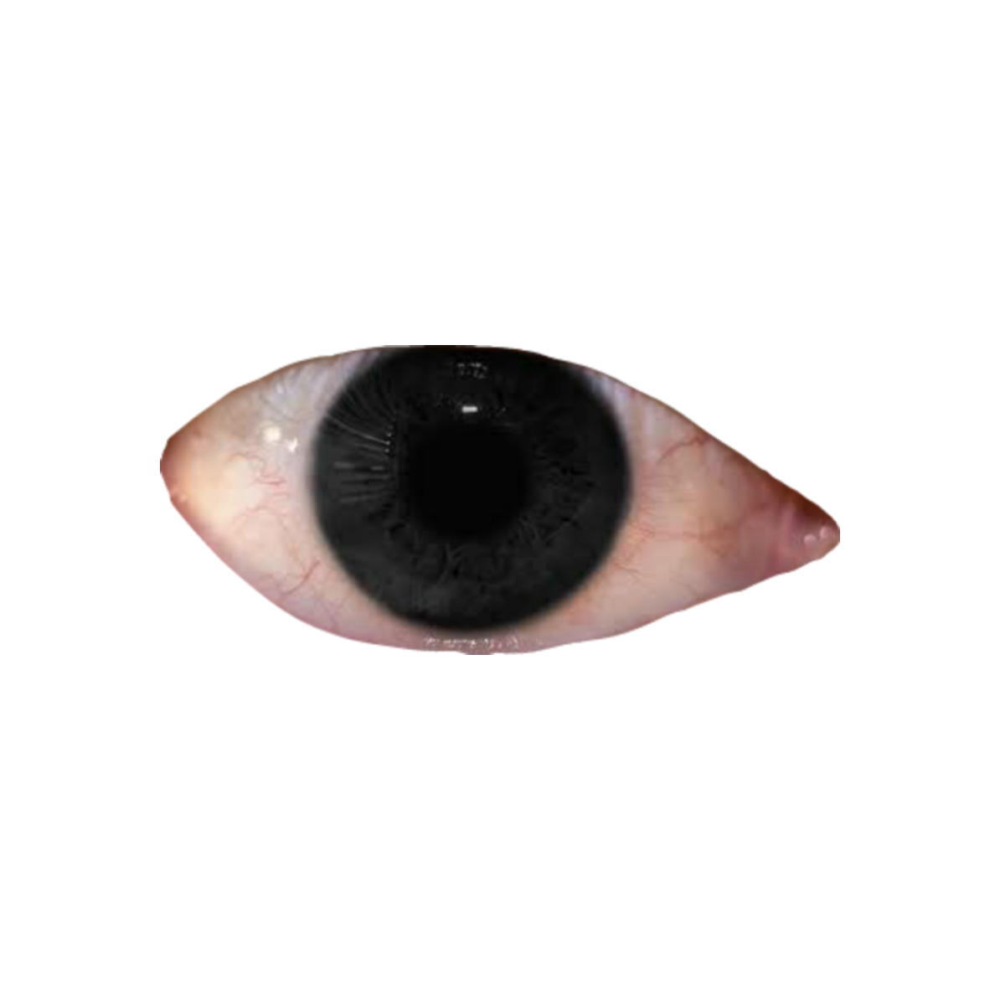
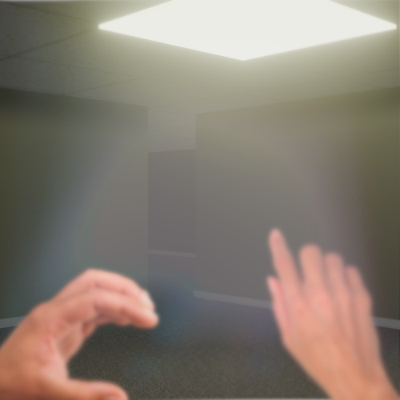

Bob can see you 👁️
<-- Click here ! L'enfant est gentil. B0B.
The first B0B Episode
Click on me Windows 1995 is the best Windows ever:
The Nostalgia Chic
The oldest is the newest

Backrooms
Bob est-il un méchant?

Il court très très vite
Il est là
Il nous observe
Il s'infiltre
L'entité 69: Le shapeshifter
La schizoroom:
La Schizoroom était une salle utilisée en URSS pendant la guerre froide.
Elle servait à réduire au silence les personnes opposées au régime.
Une fois que le prototype entrait dans la salle, il en ressortait atteint de schizophrénie et était placé dans un hôpital psychiatrique,
pour qu’on n’entende plus jamais parler de lui.
WHERE???
r̵̨̧̨̧̧̡̢̧̡̢̨̧̧̧̧̢̢̨̧̧̧̨̢̡̧̢̡̧̢̧̡̨̢̧̧̢̡̡̧̢̨̧̢̨̡̨̡̢̡̧̨̧̧̡̢̢̧̧̧̧̧̧̢̨̨̡̨̡̢̡̢̧̧̧̧̨̨̡̢̧̨̡̧̨̨̨̧̧̡̡̡̧̢̡̨̢̧̧̡̢̢̧̡̨̢̢̢̧̡̧̨̨̡̨̢̨̨̡̧̨̢̡̡̧̧̡̧̢̧̨̡̧̡̢̡̨̡̡̢̧̡̧̧̨̧̡̢̨̧̨̡̧̧̡̡̡̧̢̨̢̡̧̢̨̧̨̡̨̨̧̡̧̧̧̢̨̧̨̡̨̡̧̧̨̡̧̢̛̛̛̛̛̛̛̛̛̛̛̛̛̛̛̛̛̛̛̛̛̝̯̘̘͕̭̖̤͈̯̮̹̠̺͙̩̫̩̤̻̣̬̤̫̯̰͎͚͕̼̺̦̪̮͔̞̰̠̺̣̳̻͈̖͎͖͚͖̲̫̹̞͙̖̖̲͚͖̲̻̬͕̼̻̥̰̯̭̱̗͚͉̖̤̤͎͇̰̺̫̬̤̠̣͓̣̪̘̥͎̗̜̰̱̗̤̞̠̲̻̱̫͖͍͓̺̰͖̖͔̙̜̯͚̭̙̞͇̰̞̲̭͍̪̫̱̻̩͈̦̻̦̟̺͎͕͙̗̭̯̦̗̭̠̖͚͔͈̝̖̪̮̜͔̲̦̪̤̱̟͎̝̱͉̹̻̳͖̝̯͍̤͔͖̯̠̬̣̺̪͖̪̟̯̹͇̹͎̫̫̼͕̤͓̰̜͍̞̯̬̻̰͈̹̖̳̘̘̻̗͙͎͚̖̘͙̻̦͎̰͕̱͎̠̠̳̝̲̗͎͇̹͈̝͔̮͎̹̬̪̥̟̣͔̜͙̫̳̟͇̠͕̙̼̙̻̩̞̦̗̜͓̙̰̟͍̥͇͔̳̺̗͔̳̮͇̹͎̤̺̠͙̪̰͙͓̺̟̣̫̭̥̪̥̳̮̣̜̳͇̻̠̰̠̯̱̬̻̻͉̝͙̠̜̟̫̱͍͖̮͈̲̼͎̙̩͎͍͈̰̘̺̞̩͓̙̰͖̣͔͕̜̬̤̮̹̮͍̘̩̺̪͇̤̹̬̥̰͚̗͍̰̪͚̯̘̻͎̠͇̜͈̰͍̪̭̘̥̗͓̜̗̪͓͎̬͖͔̜̙̝̺̬̖̪̜̫͖̯̱̼̝͈̻̮̞͕̮͖͓͔͔̘̤͓͇̝̪̥̤͎̰͎͈̘̹̼̳̳͓̜͎̬̠̣̫̞̞͇̪̭̯͙͓̠̦̙̩̫̱̥͇͚̗̲̫̞͈̻͙̥͖̘͙̪͕̥̟̲͉̥̝͙̼͈͇͍̩̣̳͈̺̭͙̹̼͚̜̗̥̘̟̲̱̺̠̺̗̞̱̠͎̥̫̻͔̺̺͖̬̺̦̘̣̳̬͉̩͚̭̥͍͓̟͚̯̼̞͓̳̩͇͇̭̭͉̗̳͇̰͈̜̪̦̘̹͍̘̰̼̻͈̟͉̫̹̪̯̭̻̲̜͍͉̼̘̱͈̪̘̯̘̮̥̤͓̻̥̠̱͍̼͙̭̝̘̠̘͚͈̪̤̺̲͔̗̭͍̼̥̗͈̬̱̘̥̳̰̹͉̻̮̖͍̭̹̘̺̤͚̜̞͙̰͚͖͎͚͕̻͓͔͇̠̱̝̫̥̟͕̗̻̯͖̫̪̗͕͎̥̹̪̙̜̭͍̹̼̺̯̣͍͚̝̣̖͚͔̪͕͔̲̩̠̩̮̖̦̠̼͉̬̥̜͓͖̩̠̭͖̦̺̲̠̹̳̮̗̳̥̖̘̘̗̯̬̞̥͇͖̣̲̻̙̮͕̟̬̖͚̰͔̲̺͉͔̰̜͙͉͈̪͕͈͍̦̪͇̹̙̥̙͔̞̥̹͍͈͈͓̜̗̙͍̯̗͓̬͉̜̭͈̺͓̯̯̦͈͍̮̗̣͓̼̞͎̳̼̠̟͇̩̺̥̣̰̮̬̠̻̯̰̠͈̬͙̮̫̗̝͕̜͈͈̗͍͈͚͕̺̲͕̱͕͍̯̬͚̬̮̺̥͓̳̺̯̲̝̲̦̩̦̗̤͖̘̲͙̹̝͇̹͉͙͖̤͙̖̞̰̺̟̬̭͙̗̩͚̩̭͇͚͈̣͚͎͎̰̭͍͕̜̪͕͕͎̗͚͔͚̬͕͍̟̱͎͓̼̣̦̖̤̗̥̥̳̘̭̩̲̞͉̥̲̘̬̰̰̼̺͇̗͇̘̻̪͍̥̙͓̤̪̰̣̰̝̣̺̩͈̳̺̗͔̠̹̳̺̞̜̘̲̱͍͍͙̻͚̩͓͕̬͎̫̩̣̹̲̼̣̻̖̹̼̦̮̲͉̹̫͉̙̳̻͔̱̰͚̟̙̭͈̙̖̭̖͖̟̫͔̭̻̹̺̭̰͈͚̰̞̻̱̰̬̙̲̹̜̮̲̣͙͇͙̦̤͈̹̘͚̗̙͇̠̘̖̰͙̬̮͖͕̙̣̥͍̩̦̠̦̮͇̘̹̬̞͕̜̱̥̫͙͕͕̦̭͎̲̝̭̙̘̺͈͚̥͇̬̮͓͉̫̺̼͇̥̭̖̬͍͈̫̻̬̜͙̦̺͈͉͉̞̜̻̭̰̥̬͚͕͕̟͉̳̻̲̻̳͖̖͔̣̺͓̙̬̘̪̩̰̯͙͔̭̖͔̻̙͉̺͚͍̫̰͉͉̹̮̳̣̘̼͖̘̱̬̪̘̠͉̺̲̼͍͇̫͎͔̟̫͎̱̜̹̗̜̥͉̥̥͈̜̯̥̘̼̳̠͔̱͙̥̱̼̪̬͙͖̼̭̖͉̝̜̺̭̞̞͍̰̱̟̭̣̝͇̬͔̙̫̠̥͙͖͖̘̞̖̟̥̝̼̼̞̖̩͍̳͔͓̯̖͍͇̹͎̫̠̪̳̪̺͇̣̟̝̭̺̱̯̜̣͙̝͔̞̠͎̞̖͇̬̲͖̣̜͇͙̤̖͚̱̪̯̪͈̯͓̯̳̖̬̠̹̥͔̯̺͕̰̙̬̘̗͇̘͖̱̠̼̯̫̩̪̻̦̟̣̹͕͕̹͈̱̼̼̤͈̰̭̟̜̲͎̝͉͇̖͇̲̳̣̻̮̙̥̝͙̖̗̭͓̭͇̱̦͈̙̗̱͓̰̝̝̗̘̬̬̬̥̖̥̖̖̝͎̦̼̦͉͍̳͈͍̟̠͓͕̻̺̠͉̻̠̬͕̱̖̣̜̜̰̻̱̭͕̱͉̟͎͔̘̳̫̺̺̠̗̫̼͔̙͈̭̫͚̪͖͈̣̳̻͚̤̯̭̝̥̘̜̳̠͎͕̭̺͇̼͓̭͖̟͇̗͕͓̮͈̟̜͙̠̥̬͎̲̳̗̝͕̟̱̠͉͙̳͓̮̰̯̯̠̘̳͈̱̥̥̪͇̮̺̥̜̗̝̦̲̘̟͓̹̫̼̦̥͖̘͕̮̫͖̝͕̩̠̬̳̣͎̥̱͕͙̙̩̟͔͕͈͚̘̝̘͖͈̮̜̫̞̥͔͕͉̞͔̲̞͔̘̼͎̖͓̦̺̗͓̣̲̱̝͉͖̜͍̠̩̺̬̜̬͚̭̹̬̞͇͓̹̰̹̮̰̝͉̠̺̰͉͎͙͔̫̝̦͚̙̰͕͚͓̼͖̺̥̮͕̦͈̩̘̗̭̜͓̭̺̣̬̩̫͈͇͍̝͓̭̭͈̻͖̝̮͕̤̙̻̭̥̹͖̗̮̰͉͔̹̣̦͉̹̟̖̰̘̻̱̹̪͈̣̘̯͖̺̥̩̖̗̜͍̱͈̱̯̣̼͙̻̲̦̱̘͎̹͔̙͇̖̰̲̩̜͔̟̰̗̦̣͙̟̘̬̼̩̳̹̠͙̣̝͎̪͚͓̘͍̰̥̺̯̼̟͕͇͚͈̩̬̮̲̲̬̜͉̼̝̼̫̪̰̳̪̝͇͚̜̖̳̙̞̙͚̹͓͚̱̹͖̠͓͖̱͚̠͔̗̹̭̫̝̪̜̹̳̼̖̠̘̜̖̦̮̭̣̻̗͇̭͉̗̭̦̤̠̤̪̼̦͖͚̞̼̙̺̝͈̻͈̯̩͆̓͋̍̏́̅̍̿́̆͂̓̈̀̓̐̈́̐͗̈͐́̌̉̓̌̽̋̑̿̒̀̋̍̄̂̆̋͛͋̏̀̽͗̋͛̽̾̿̆̓̑̔̓̊͗̾͑̓̒̽̿̅̈́͋̈́̈́͂͆̾̎͐͒̌̑̑͆͛̅̎̐͂̈́̓͛͐͆̾̓̆̏͌̔͐͌̋̃̎̊̓̅͒͑͂͑̇̄̒̓̀̄̈́̀̄̀̎̑̀̈͑̇̔͛̀̾̏̏̐́̂̂̓̂͛͛̅̈́́͌̀̉̐̀͛̃̃̀̏̉̌̓̏̉̒̇̾̐́͛͒͛̔͗̐̔̎̂͗̃̀̈̌͂̀̽̆͐̔̍͌̂̌̾͋͌͒͗͊̀̈́͆͑̿̆́̈́̅̔̊̿͂͗̍̓̎́̔̆͛͋̑̆̆̓̿͒̍̎̀́̈́̂̒̃̔͑̒̽̄͒̿́̄̉̓̅̎͋̔̆̔̊̒͋̊͆͑̋̍͛̾̈̋̏͐͒͛̑̈́͂̀̐̈̈́͑̒̌̃̃͋̉͛̇̀̐̄̏̊̓͐̔̋̅̍͋͊͛̊͂̓͐͒͒̑̈́̄́̊̇̂͊͗͆͆̆̈́̇͂̍͊́͑̓̽́̎̔͑̈́̂͆́͑̿͌̄̂̃̈͊̀͂͗̓̏̓̆͊͒͊̂̈̒̄̾͗̓̀̓͆̿̈́̔̀͒͌̃̏̂̀̒͋̾̍͊̈́̔̋͂͗̐̐̿̉͒̃̂̀̍̓͆̄͛͆͂̿̌̊͌̂͋͐̅̈́͋́͐͗́̒́̅̇̋̉̌̀̍͌͛͋͒͛̒̈́̾͌̍̑̽̈̄̑̈̂͊̈́̀͋́̉̑͋̂̍̀̈́̎͋̇͋̌̂̈̓͌̈́̏̈́̐́̇̈́̉̈́̒̇̊͑̏̊̀̍͂̒̋̈́̃͂̓̄́̀͊̑̄̄̈́̀̓͐͛̐̊͂̓́͒̏̋̍̆͒̆̋̓̓̇̿̂̀͗̾̃͛̽͂̀̌̅̈́̂̇̉͒͋͊̅̋̾̋͂̓̾̾̾̂̒̍̑̀̆̀̈́̓̄̈́͒̋̍͌̃́͆́̋͒̓̄͑̐͛̇̏͆̈́͆̌̊̃̑́̓͒̾̉͒̋͐̑́͑̓̍̿̏̂̍̈́͊̇̈́̀̒̉̅̀̆̈́̿̊̅̊̒̋̎̂̄̈͒̃̓̒̈́̅́́̈́̈́̂̌̍̀̂͆̍͆̒̾͌̎̉̓͑̿́̋́̆͌̽̏̊̂̈́̍̐̋̈́͐́̀͆̈̾̔̔̔́̂͑̾̓̿͐̍́̄͌͊̄͋̇̍͑̿̌͆̔̏̇̒̅̊̌̃̒̀̌͋̿͑̎͊̂̈́͒͆̅͌͊́̃́̅̌̒̏̇̿̎́̋̎̒̊͑͛̋̎̎͐͒̊̽̎̔͋͋͐̆͆̃̅̃̒̃͐͊̎́̔̚̚̚̕̕̕̕̕̕͘͘͘̚̕͘͘̕̚̕̕̚̕̕͘͘̕͘͘̚͘̕͘̚̚̕͘͘͘͘͘͘̚̕̚͘̕̚̕̚̚̕̚̕̚̚͘̚̕͘͘̕͘͘͜͜͜͜͜͜͜͜͜͜͜͜͜͜͜͜͜͜͜͜͜͜͜͜͜͜͜͜͜͜͜͜͜͜͜͜͜͜͜͜͜͜͜͜͜͜͜͜͜͜͜͜͜͜͜͠͠͝͠͝͝͝͝͝͝͝͝͠͝͝͝͝͝͝͠͠͝͝͝͝͝͠͝͠͠͠͝͠͠͝͠͝͝͝͝͝͝͠͠͝͝͝͝͝͝͝ͅͅͅͅͅͅͅͅͅͅͅͅͅͅͅͅͅͅͅͅͅͅͅͅͅͅͅͅͅͅͅͅͅͅͅͅͅͅͅͅͅͅͅͅͅͅͅͅͅͅͅͅͅͅͅͅͅͅȩ̵̨̡̢̨̢̢̨̡̧̢̡̨̢̢̨̢̧̨̢̧̡̢̡̡̢̡̢̢̧̨̨̡̡̡̢̨̢̢̧̧̢̢̢̧̧̧̧̧̧̧̧̡̨̨̨̧̧̨̡̧̡̧̢̡̡̧̧̡̧̡̡̡̨̨̡̡̡̧̧̨̧̢̨̨̢̧̧̨̡̢̡̧̧̢̡̨̢̧̨̧̡̨̢̧̢̧̨̨̢̧̨̢̡̡̨̨̧̡̢̨̡̡̨̨̢̧̧̢̨̢̢̨̡̡̡̧̢̨̨̢̡̧̡̨̡̨̧̢̨̧̨̧̨̨̡̧̧̡̢̨̨̧̨̡̡̧̧̡̧̢̢̧̨̧̢̧̡̡̧̨̢̢̨̨̧̢̡̨̨̛̛̺̤̰̱̣̹͎̝͓̠̟͍̤͙̹̺̻̝̫̹̞͈̲͈̜̯̘͙͉̠͎͇̳̲̗̯̩̖̙̫̺͙̖̗̣͔̩͇̲̹͖̱̭̙̘͓̰̻͓̪̻̜̠̰̻̹͓̭͚̩̘̦̘̝̗͉̥͍̰͇̫̼͖͔̳͕͚͈̹͍͖̬̠̙̞͇̱̪̥̙͓̫̱͓̝̥̟͔͍̻̥̞͇̩͔̰̣͚̘͔̻̗̤̰̩̝̬̥̬͍̝̖͕̝̪̘̰̮̻̻͉͕̠̝͔̲̞͖̤͍̜͚̼̼̬̺̣̺̪̳͙͚̲͚͇̜̳̭̘̬͈̖͈̬͓̲͓̣̱͈̹̗̣̪̠̘̮̩͇̤̻͙̺͇̞͕͙̬̫͉̫̝͔̦̦̖͚̺̟̬̬̞̭̺͙͓̩͍̟̫͕̣͈̯̳̘̳͎̭̬̮̤̖̞͖̮͉̫͇̟̝͍͚͈͈͇̻̰͍͈̜̯͉̫̰̭̩͎̭͇͇̠̣̖̻̣̘̫̱̭̹̖̳̞̞̠͈̗̪̟̫̙̦͉̺̯̺̰̫̗͉̣̯̮̗̬̮̰̙̻̲̦͎̲̲̪̭͔̻̥͍̝̠̠̞̖̭̟̦̯̹̝͖̹̩̦̘̫̗̣͕̘̠̩̜̪͎̫̤̣̭̮̫̜͚͇͇̘̯͕͔̣̹͚̰͉͎̜͎̞̯̥̘̺̯͇̼̬̺̘̺̲͓̠̠̻̠̗͖̫̥̩̖̮̳͈̯̰͇̯͖͍̬̣͔͚̺̱̮̺̜̯̳̲̰̜̻̖̖͔̫̮̗͓͍̻̜̺̺͔̗̠̘͇͈̟͖̻̹̼̯̰̲̪̥̦̜̟̫̮̩̲͓̞̞̞̻̪̬̠̖̲͔̲͔̱̗̗̻̝̱͓͓̘͚̦̱͖̙͔͔̘͙͔̱͓͍̠̙̭̲͍͕̰̜̖̩͕̙͔̦̟͉̝̞͇̦̯͎͎̪̬̝͕̼͍̩̭̣̥̥̳̟͕̗̟̠̣̙̞͓͓͙̲̟̮͓̬̖̝̭͔̖̠̠̩̞̻̼͚̘͙̺͍̩̗̹̗͙͇̯͍̫̟̼̤͙͓̠͖̲̦̯̖̱̩͚͎̳̹̟̻̼̝̪̳̳̫̩̩͖͕͔̟̳̤͚̰͓̩̯̪̞͖̬̙͙̣̬̗̜͖͚͓͖͕̺͍̺͎̩̦̻͕͎͕̫͍̫͈̱̥̹͉͖̳͕̩̖̺̰͕͙̤̻̤̰͙̺̥̣̳̫͓̝̙̼̝̘̖̣̻̮̹̗̗͍̰̖͍̠̱̯̱͎̤̖̭͖̭̻͕̹͇̻̞̭̗̙͇̖̯͉͓͔̲͎̩̩̰͉̖͖̹̯̟̟̠̣̥̙̭͕̫̲͖͍̝͕̻̫̥̗̥͉̱̤͙̜̗̞͔͓͙͓̦̤͔͈̻̪̯͈̘̺̘͖̲͖͕̲͚̣̥̳͕͉̖͚͖̜̝̤̘̬̹͇͍̤̭̹̜̭̝̙͙̺̰̩̖͍̜̤̝̩̖̱̥̞̬̠̣͔͍̰͈̭̙͕̘̰̻̲̩͕͍͉͇̲̣͉̜̤̰̙͉͓͎͔̤̗̺̥̼͓͚̤̗͔͈̖̰̱̙̲͍̻͙͔̠̬̫͎̟̰̯̟͖͇͔̟̻̯̠̙̘̲̼̟̩̱̥̣̤̮̲̤̲̰̟̲͓̯̞̖͓̤͍̳̲͚͎͎̗̲͉͙̙̦̪̩̥̞͚̖̫̹͎̦͕͖̖͓̼̯̟̬̖̲̻̮̬͖̠̝̗̥̭̼̥̦̖̭̰͔̫͍͎͎̲̖̝̟͈͓͖̱͈͖̖̦̩̰̘̼͚͙͕̰̹͚͖͎͈̪̞̮̱̼̜̗̪͉͕̘̠͍̙̗̲͙͈͔̹̖̣̬̣̠̭̦̜̜̻̼͍̞͖̪̼̟̯̟͕̟̖̖͎͈̹̫̬̲͚̫̬̪̞̬̰͙͈͇̯͔̹̭̼̦̤͚̭͎̜̠͍͙̠̺͕͉̭̝̳̩̙̥̥͕̮͖̩̣͍̫̝̪̟̭̞̖̦̠̦͕͓̖̮̞͕͉̪̝̣̪̲̜̫͙͈͙͖̟̘̙̝̩͚͕̮̖̞̞̯̫̬̪̦͚̝̤̰͎͖͎̹̯̣̩͙̪̱̤͔̬̪̞̟̞͔̬̥̖͖͍̻̥̦̬̝̬̫̫̟̦̭̞̱̫͇͈͖̭̝͚͖̪͇͔̼̩͓̝̭̬̥̤͎̘̣̪̜̥̖̙̪̠͕̯͓̖̮͕͍̭̰̰̫̩̝̭̗͎̗͈̠̭͈̦̙̥͍̤̩̹͓͈͎̦̭͇͈̥͔͚̱̣̫̭̹̙̟̺̻͍̜̭̠̭͕͎̥͔͔̘̘̰͕̲̝̠̗̩̫̫̖͇̺̖̹͖̫̼̲̲̜͓̠̬̙̬̤͕̙̗͕̟̻͚̖̻̳͖͎̗̻͔͚̺̝͈̪̠̞͉̩̼̞̺̯̪͚͕̥̻̤̪̙̝͉̤̮̤̩͍̤̰̙͓̱͍͕̻̣͚̭̺̲̪̱̮͇͍͍͓̺̙͇̖̲͔̖̦̠̖͇̤̘̞̱̯̹̥͚̩̞̜̙͓̮͍̠͈̼̖͙̻̖̫͔̱̝̲̬̖̠̼͈̦̠͍̲̟̲͎̰̜̬̥̱̪̩̯͖͎̗̰̠͕̯̥̰̖̠͍̖͖̟̙̞͓͉̪̰̰̮͉̥̼̝̠̰̙͕̬̹̯͎̲̬̥̯̫͔͓̠̦̝͙͇̥̙̫͚̝͖̩̠̹̠̘̦̠̗̱̞͙̺̯̩͔̖̙̜̝̺̜̜̝̰̩̰̞̪͉̞̞͍͔̯̮̳̳͎͚͎̗͍̞͙̗̙̫̘̙͎̗̜̲̝̲̰̳̠̜͙̭͈͇͍͖̬͉̼̭͓̥̳̪̠̝̼̼̞͎͕̘̘͚̹̹̙̠̹̣̫͕͚̖̺̤͚̪̥͇̦̫̦͙̟̤̺̪̬̬͚̠̬̟͈̭͚̮͍̹͔͉͍͕̮̠̱̹͚͍̦̲̗̰̞̘͎̼̪̗͖͍̼̱̼̥̙̭̻̳̝͇̖͕̪̳̤̯̱̠̪̥͇̘͚͙̥̳̹̟̯͓͖͎̫̙̪̖̤̺̱̥͎̯̩̬̗̣̫̮̗̤̠̺̟̞̳̞̯͍̗̞̗͍̙̫͚̞̹̱͈̖͓̗̙͖̦̻̖͉̹̠̝̗̮͉̲̖̬̥̦̫̳̤̠̝̞̰̠͇̼̺̦̳̯̙̲̹̩̦͇̬̠̻̩̬͉̥̜̪̠̺̳̠̯͚͔̗̹̰̘͖͙͓͕̪̳̼̦̻̩͍̠̼̯͇̻̭̗̜̬̜̥̩̬̙͔̠̦͉͎̣̯͍͙͇̼̳̼̞͎͍̫̺̥͚͈̣̤̟̜̦̺̬͍̙̮͔̠͓̗͕̞̼̥͓͈̹͉̳̰̹̫͕͍̦̪̹̜̱̤̖͙͙̥̝͖̰̘̳̖̟̻͈̟̖̯̳̮̠̘͔̭̭̭̭̥̜̤̪̹̦̤̘̗͚͙̞̪̱̱͍̹͚̮͔̞̹̠̹̹̼̪͈͎̺̬̣͓͔̱̤͖͚̻̱̹͈̼͔̰̦̰̩̗̯͉͕̫͇̝̝̤͔̯̤͚̩̰̻̗͍͈̠̯̠̻̹͖̮͖͖̱̟̟͇͉̣̻͉̫̗̳̣̭̤̺̩͙̹̻̥̗̪̝̩̤̘̤͍̠̘͉̲̞̮̖͖̪̜̱̮͎̬͕̘͚̦̥̤̞̺̳͙̻̥͉̦͔̮̘̩̟͚̥̣̦̗͎̣̼̘͚͍̗̪̻̠͖̗̠͔̠͉̘̖̝͔̣̝̜̤͇̰̫̟̻̩̩̠̺̝͚̪̠̲̣̞̙̖̮͎̲̹͓͚̠̯̼̰̻̼̦̟͉̯̫̙̼̤̰͕̹͔̙̩̞̙̲͕̟̥̞͚̫̖̩̦͖̫̫̲̰̯̟̳͚̤̗̟̝̳̥̪̲͇̪͉̬̹̬̼͇̰̭͖̠̣͖͔̲͚̺̝͎̩̟̘͎̯̙̙͚͙̩̳̭̠̮̻̜̦̗͉̹̲̦̯͙͈̣͖̘͔̤̝̻̺͇̦̹̬̙̱͓͚̖̲͙̭̲̻̘̦̲̹͔͉̗̞̮̰̥̺̹͕̪̼̗̤̰̤̹̞̯̙̼̣͇̗͉̮̗̞̣̫̭̥̞̘̜̜͚̮̹͇͈̖̼̥̼̟̱̟̤̱̻̜͕̙̳͎̞͍̲̮͓̠͍̲̰͓͍̹̬̒͂̂͊̅͆̌̈́̉͆̾̓̏̃̌̐͂̒͛̈́̋͛́̾̉͊̾́̀̉̍͑̎͂͑̆̏̈́͛͌̀͗̇̈́̈́̀̆̀̇̈̌̄̇̊̓̄̈́͌̅̊̉̉̇́̀͌͑̾̾́̿̆͂̂͑͆̈̒͗͆̕̚̕͘̕͜͜͜͜͜͜͜͜͜͜͜͜͜͜͜͜͜͜͜͜͜͜͜͜͜͜͜͜͜͜͜͜͜͜͜͜͜͜͜͜͜͜͜͜͜͜͜͜͜͜͜͜͜͜͜͝͠͝͝ͅͅͅͅͅͅͅͅͅͅͅͅͅͅͅͅͅͅͅͅͅͅͅͅͅͅͅͅͅͅͅͅͅͅͅͅͅͅͅͅͅͅͅͅͅͅͅͅͅͅͅͅa̸̢̡̧̢̡̢̡̧̨̢̡̨̢̢̡̨̢̨̨̡̨̧̧̡̨̨̢̡̡̧̧̧̨̧̡̧̡̨̢̧̨̡̢̡̡̡̧̡̡̢̡̡̢̨̢̧̡̢̢̧̨̧̢̨̨̢̡̡̨̡̨̧̧̢̡̢̨̡̧̡̧̨̢̡̧̨̡̨̢̡̡̨̢̡̨̧̢̧̢̨̧̧̧̧̢̢̡̧̧̡̡̢̡̨̡̛̛̛̛̛̛̛̛̛̛̛̛̛̛̛̛̛̛̛̛̛̛̛̛̛̛̛̛̛̛̛̛̛̛̛̫̫͙̫̹̹͈͖͓̦̬̠̲̫̞̺̻̼͚̜͙̪̥̹͓̺̜̦͈̭̻͔̟̱̬͔̩͔̹̼̝̱̻̞͍̥̝̳̯̰̬̹̰̟͕̭̣̫̳̜̭̮͎̠̻̹̺͉̙̫͖̲̗̫̦͍̘͚̠̞̥̯͕̹̲̯̭̪̰̣̝̭͚͉̘͎̗͉͇͇̙̦̰̘̤̳͖͔̞̬͓̙͚̼̙̮͚̩͕̰̥̪̼͙̳̜͉̣͔͎̣̩̗͈̤̼͙͇͈̹͚͇̝͚̖͍̜̹͉̙͍̙̲͔̱̦̙̖̼̻̮̰͔̙̣̳͈͉̣̮͉̥̼̞̫̟̱̘̫̲̥͖͖͕͓̦̝̖̞͙͙̞̰̳̭͉̭̫̟͇̤̳̞͖͎̬̖̞̜̳̪͇̜̞̠͇̝͚̘̩̫͇̱̼̗̜̹̗̲̦͎̼͚͚̳̥̮̰̲̮̻̠̜̹̞̟̳̙͙̤̻͈̫̘̥̼̫̝̦̥̞̮̹̟͈̪̭̪͓̠̖̮̹̭̝̲̣͎͕̟̱͈̞̝͓̠̙͓̝̥̬̥̖̳̻̰̯̲̣̪̩̺̝͕͈͕̹̞͉̠̗̟̙̩̩̪̪̞̥͇̭͕̗̮̰͎̜͙̙͖̠̙̮̲̭̰̦̦̻̜̥̫̬͈̱̞͉̹͔̮̖͓̳̤̬̮̫͙͓̗͉͖̤̻̝̗̟̗̬̙͍͖̲̤̦̣̯͈̮̺̱̘̹͉̱̱͎͈̪͉̱͉̭̞͖̜̲͚̦̻͔͎̙̣̬̯̲͚̗̼̦̻̝͈̰̱̰͇̮̼͍̠̥͖̲̖̭̤͈̬͇̝̤̮̪̣̮̦͕̰̙͖̦͓̖̜͔͈̞̼̣̹̤̟̲̦̺̭͚̝̟̮̥̻̪̩͚̻̲͈̠͈̯̻̰̬̬̩̭̣̯̳̘͕̮̻̻̭̬̙͈̩̣̬̥̻̩̫̼͓̣̼̜͈͉̮̜͉̟̭̰̖̥̫̠͕̫̼̲̰̠̩̰̲̜͕͚̙̮̼͓̥̰̻͙͎̼̯͓͇͈̣̦̳̗̮̝̟̥͕͍͔̲͔̺͙̱̟̩͍̩͎̜̼̻̜̪̲̺͇̜̗͕̺̹̱̳̯͙̤̟͍̦̭̤͕̫̞̘̩̝̗͙̘̭̣͕̭̥̮͎͉͕̘͖͇̟̜̮͍̩̣͉̳̝̪̳̹̮̺̞͔̩̼̞̞̙̻͍͉͓̮̱̻̠̲̱͔̤̙̠͕̖̭̜̠̞̙̣̦̖͓̪̫̠̗͙͈̟̝̩̫̣͚̣̘͉̤̼̱̘̣̲̘̪̺̱̦̥̠͓̬̟̫͇̤̙̺͈̟͔̮̦̪̝͖̱̟̘̳̞̼̥̺͕̝͕̖͉̖͍̪̭̥̤̘̳̯͕̰̺̩̯͕̥͉̤̥̲͔̘̖̥͍͇̤̟̝͎͕̞̭͉̭̫̥̥̣̤͚̗̻̳̟̠̖̙̥̣͉̱̼̺̹̦̘̭͙̮͙̱̟̖̤͓̙̥͍̼̥̰̥̳̭̗͈͚̘͈̘͈̜͉̥̦̳̮̘̲̬͔͕̻̬̫̩͉̙͓̖͎̪̳̣̥̱̠̖͚͎̬̳̟̪̺̫̞͓̱̣̻͔̩̬̖̼͓̲͈̫̫̰̯̩̣̩̠̦̠͖̰͈͕̱̰̝͈̮̹̩͚̼̟̤̪̺͎̘̮̲̺̼͔̹͇͖͙͓̲̫̩̰̮̦͔͕̭̹̱͕̝̘͇̱̹͙̭̤̠̥̤͍̞̲͍̺̞͎̼̺̩̪̱̝̭͙͈̙̦̦̖̬͖̩͈͔͇̻̗͚̞̞̦̤̗̩͇͔̜͉͖̮̖̭̝̳̠̭͙̞͙̲͚̰̭̯͎̭̻̤̳̺̹̬͍͍̬̤̭͇̥̖̙̝̮͓̹̘̹̳̺̣̱͕̤̭̹̗̖̺̻̣̰̪̱̞͉͎̲̪̻̙̮̦͇̲̭̞̬̦̯̫̗̠͎̙͙̲̜̪̤̯̜͖͉̩̖̖̘̲̝̙̫̻̘͓̩̰͖͔̭̦̥̱̳̺̯̲̬̹̬̬̟̺͔̤̺̰̤͖̫̯̞̺͔͇̞̤̺̝̩̹̫̝͖̤̝̪̮̭͚̖̼͙̼̰͖͓̫̼̺̠͋̀̀͂͋̿̓͛͑͌͐̈́͐̏͛͊͑̓̀̍̍̓̄̆͋̌̃̾̀͂̿̍̊̅̀̍̎̋͋̀̆̀̂̿̄̎͌̂̊̑̆͑̌̑͊̃̈́̈́̏̍̉̋̒͂̅͆͑̑̒͊͊̂̐͒̐̽̃́̎͂́̐̃̇͂͑́͐͐̎̔̔̀́̎̔́̈́̎́͑́̂́̅̂̌̉̈́̊̽͑̇͌͆̅͊̋̈́̑͆͛̽̑̄͛͌͑͊̽̈̐̏̔̈́̅̈̾̑͑̀̈́̌̋͑̂̀͊͋̾͐̃̂̐͊͑̃̏̃̅͋̃̓͋͂̆͌̍̀̾̒̊̓́̐͆͑̑͌̊̈́̽̔̽̆́̌̓́̎̏̈͗͒̉̎̈́̄͂̏̾̈̄͛̇̎̓͊̒̓͊̃̏̎̆͒̈̂̈́̈̐͆̉̍́̀̅͗̒̃̅̍̇̿͋̈́́̅̋̇̔̀͗͆͐̉̀͑̅͗̇̽͂̄͐͐́̏́͌́̎̀͗̓̈͑̂̓̅͒͂͒̓̅͋̇̿̊́̈̌̾̅̄͋̅͗͋͗̌̾̑̑͊̑̈̓̓͛͆͋̋̀̾́̾́̊̒͂́̒̎̽̐͒͌͒͂͒̐̊̈́̓̑̇͛̾̔̾̇̈̈̊̈́̋̄̽̈́͋͑͗̌͒̾͐́̐̂̽̄̈́̓̈́̿̈́͆̑̎̈̋̒̄͋͆̌̈̎̋̑͑̆̐͛̒̊̐̈͗̂̆̽͐̍̊̈́̃̈̽̓͂͗͑̅͐̐́̈́͂̐͆̏͗̇̐̑̂̆̓̓́̊̏̅͌͗̉̉̅́́͛̐͐͗̌̂̐̐̑̂̔̄́͑̂́̍͗̀̀͂͊́̐̔͒̀̿̐͆͐̔͒́̋̀̓́́̏͊̆́́̽̀́̓̈́̓̇̾͋̈̀̆̓̂̒̿̅̂͒̌̿͆̑̓͛͌͑̒̾̾̃̎̐́́͒̃̅́̒͑̈́̾́̆͌̂̑̃̍̒͒͂͐̀͑̐̌̃̿̂̄́̑̊̍͊̿̿̆͛̑̈́͒͋̍̾͆̆́̈̂̎̂͂̍̏͆͐̓̽̓̌̾̎̂̂̅̍̒͗̈́͂̋͌̊͒̈́̉̍͐͒͑́͆̃̌͋̽̇̆̿̈́́̃͒̍̉̄̾̓̒̍͗̇͌̓̈́̃́̈́̈́̍̓̊̈́̑͆̉̅̃̀̅̆̋́̀̓̃̃̄̒̿̂̏̓̋̔̊͛̒͑́̃̒̾́̓͑̋̍̆̑̋̆̓͋̈͛̉̏̇̓̏̂́͆̅́̑̌͊̏͒̎͛̎̂̆̓̓̇̆̀̀̋̾̆̃̍̂͋́̍̉̐̎͌̆̐̐́̎̀̑̀͂́͂̆̍̎̈́̉̿̐̒͐̓̃̄́̒͌̈́̿͐̃̈́͂̓́̈́̆̈́͛̐̋̽̎̀͐̆̍̑͒̎̃̄̀̄̆̿̓̿̓̀͌̍̄̌̌̅͆͗͑͑̈́̈́̓̿̀̇̏́̒̈́͛̇͌̆̈́͛̾̈̒̾͂͒̈́̆́̇́̉̍̉̏̽̈͒̽͆͊̽̌̓̀̓̑͑͗͌̽́̀̃̈́̒̑̆͊́͒̍̈́͛̒́̍͆́̂̈̑̐̒͗̑̄͑̓͗͑̄̓̂̂̈́͛̇̏́̂́̀̓̏́̏͒̄̽̍͒͛́̂̎̓͑̑̓̀͆̈́̀̈́͌̌̾̓̔̎̋̀̀̍͗̑́͛͗͒̇̊̇̃̾̀̍͌̈́̈́̐̎̆͒́̃̎̈́͋̐̍̽̍́̍͛̍͂̋̾̏̀̑̄̆̽̉̿̾̾̀̑͊͑́̀̂̾̒̀̒̉͑̂̌̿͌͊͑̈́̈͂͛̈́̍̉̾̀́̈̂̃̐̈́̃̑͆̀͛̎̇͊̀̅͛̐̇̓͐͆́̈́̿̉̐̓̏̌̀͆̈͊͂͂͋͋̌̂̈̾̽͒͆̏̓͑͐̿̓̏̊̔̌̾͌̈́͛̀͂̆̀̉͋͋͌̋̅̇̓̇̉̎̇̈́̑͂̀̿̇̄̈́̿̊̔̍̈́̎͛͆̒͗͐̎̾̇͗̏̍̇̍͋̆͆̈́̋̑͒̑̊̅̀̀́̈̀̋̾̈́͐͊̏͆̾͊̋́̊̄̈̓̓͐̈́̈̈͌͛̾̅̌̆̂̊̂̎͊͊́̂̿̓͛̀̂̈́̿̈́̓͋͑̀͊̂͆͌̓̃͆̿̉̂͒̀͐̉̎̉̽̐̂̊̓͛̅͊͋͐̒̋̈́͆͌͂͆͐͗̓̅̿̾̋̑̑̇͋̂̈́̈̐̓̄̅͋̒̔̀͊͗͒́̀̐̅͑͗̈́̔̊̌́̏̈͒͛̿̄͛̄̀͐̋͛͆̇́́̆̾̊̍̽̋̊̓̓̎̂̈́̏̑͒͂̾͂̀̑͑̉͗͋̏̀͌͊͌̔͂̌͌̐͆̎̀̀̈́̔̓̇͌͋̈́̄̀̅̂͗̎̾͒̂̌̋̅͊̽̀̑̔͒̍̏̔͐̐́̊́͋̈́̈̒̉̎͐̃̈́̄̑͒̐͒̊̇̆̆̉͊̾̎͊̎̓̾̾͌̃́̋̈́͑̍̾̃̓͐̃̓̈́̏̈́̍̎̈́͋̇̀̇̈̓͗̀́̄̿̆̇͗̌́̂̐̌͊͘̕̚̕͘̕͘͘̚̚͘͘̕̕̕̕̕̕̕̕̕̚̚̚͘̕͘̚̕̚̚͘͘͘͘̕̚̚̕̚͘̚̚͘͘͘̚͘̚̕̚͘͘͘̕̚̚̚͘̕͘̕̕̚͘̕̚͘͘͘͘̚̕̚̚̕͘̕͘̕͘͘͘̚͘̕̚̕̚̚͘̕̕͘̚͘̕̕̕̚̚̕̚̕̚͘͜͜͜͜͜͜͜͜͜͜͜͜͜͜͜͜͜͜͜͜͜͜͜͜͜͜͜͜͝͝͠͠͝͝͠͝͝͠͝͝͠͝͝͝͠͝͠͠͝͠͠͝͝͝͝͝͠͝͠͝͝͝͠͠͝͝͝͝͠͝͝͠͝͝͠͝͠͝͠͝͝͝͠͝͝͝͠͝͝͠͝͝͝͝͠͝͝͝͝͝͝͝͝͝͝͠͝͠͝͝͠͝͝͝͠͠͝͝͝͠͝͝͝͝͝ͅͅͅͅͅͅͅͅͅͅͅͅͅͅͅͅͅͅͅͅͅͅͅͅͅͅk̸̡̡̨̡̡̨̛̛̛̛̛̛̛̛̛̛͓̱̫̭͚͖͇̰̬̞͓͈̯̯̞͙̱̥̗̼͎̪͇̺͔̝̪̹̫̥̺̱̜̰̝̤̪̺͔̜̯̮̮̞̩̖̺̖̮̹̯̼̯̣͓̙̣̻̗̜͍̖̯͓̞̝̫̤̤̳͕̹̼̲̽͒͂̾̈́̔̿̊̾̾̌̒̏͐̉̎̅͂̐̈́͂̉͌͗̋́́̃̓͋̆͐͋͐͒͋̑̈́́͐́́̍̏̔̏̽̊̈́͌̋̈̀͌͛̾͐̽̓͛̀̅́̐̄̿̾̈̔́̏̉́̽̉̋͐̀̄́̓̇̂̂͆̒̌̐̓̃̊͐͂̀̽̍̌̀̿̊͒͗̒̀̓̒̍̏̾͊̃̅̅̋̉̈́̏͊̽̓̒͛́̽͂̉̌̈͌̓̏̾̃̈́͗̍̋̓͌̐͂̆̎͗͐͋͗̒͐̈̋̈̍̒͌̐̒̈̀̊͐̈́́̌̿̆̂̑͒̅̓͗̈́̃̓̐̍̀̄̓́̂̐͛̽̓̈͗͑͆͌̈́́̄̆̑̿͂̂̄̂̉̿̔͐̉̿̇͗̑͑̎̇̄̃͂̑̉̆̈͐͐̈̌̈́̔̀̒͗̑̾͆̍̐̾̀͌́̆́̏̏̑͌̍̓̈́͛͋̊̌͗̂̄͛̑́̆͂͒̓̇̓͌͑̿̔́̈͆̋̇̀͆̅́͆͆̈́͌̀̉̏͆͋͒̓͛̿́̑̆̅͑̐̈́͋̾͑͋̀̈̆́͐͊̈́̅̏̋̽̐̍̇̅͒̾͗̓̉̓͂͐̅͌̒͑̈͂͑̓̆̔̈́͒̊̒̀̽̀́̅͋̂̃̆͛̿̿̊̊̾̒͌͂́̈́͌͐́̄̈́̅́̋̓̀̈́͗̓͒̒̔̈̒̚̕̚̚̕͘̚͘̚̕̚̕̚̕̚̕̕̚͘͘͘̚̕̕̕̚̚̚̚͘͘̚͜͝͝͠͝͠͠͝͠͠͝͝͠͠͝͠͝͝͝͝͝͝͠͝ͅͅͅb̶̨̢̡̨̡̢̧̡̨̧̧̡̨̧̧̨̡̨̨̨̧̢̨̢̡̡̢̢̡̨̢̨̧̨̨̨̨̧̢̧̡̨̢̢̢̨̧̢̡̢̨̡̨̨̨̢̡̢̢̢̢̡̢̢̡̧̨̢̡̧̡̢̧̡̡̧̡̨̢̢̧̨̢̨̢̢̡̧̡̧̨̨̢̧̢̧̧̧̢̡̨̢̨̧̡̢̡̧̨̨̡̧̢̧̧̨̧̡̨̢̢̨̢̡̨̢̢̧̨̢̧̢̨̧̨̧̡̡̡̧̢̡̨̡̧̢̢̡̧̧̢̢̢̨̨̧̡̧̡̡̧̨̨̡̢̡̡̨̢̢̛̛̛̛̛̛̛̛̛̛̛̛̛̛̛̛̛̛̛̛̛̛̛̛̛̛̛̛̛̛̛̛̛̛̛̛̛̛̛̛̛̛̛̛̛̺̠̰̘̼̥̰͇̞̖͔̦͎͈͚̠̟̝̤͔̪̥̞͙̜̪̣̘̜̻̤̪̪̜̮̬͕͙̙̝̞͎̱̥̟͔̟͍̬̰͕̫̻̠̰͔̼͖̖͇͈̗̯͈͔͙̣̬͍̟̪͓̳̝̤͈͍̜͇̪̤̤̙̙̤̖̖͇͇̰̹̣͕̞̳̗͉͕͍͎̪̱͖̲̟̠͎̹̫͈͖̟͕͉̰̫̝̞͔̭̗͙̖̺͕͍̬̺̗̼̟̲̥̬͕̳̹̭͎̟͓͔̦̟̼̩̦̫̯̟͓͚͍̺͕̪̻̰͍̘̼̹̰̻̥̖̝̺̯̲͓͓͉̦̗̙̠̣̠̲̺̯̖͉̖̤̯͎̤͈̻̗͙͖̝͕̻͓̬̱̫̳̙̣̼̟̫̮̳̙̬̩͙͕͍͎̝̠̲̘̮̟͈̠͓͖̗͉̰͚̤̻̺͍͉̺̣̟̼͔̺̻̲͓̝̘͔̜̙͍̭̤͓̤͕͔̳̜̭͖͖̝̲̰͎͕̝̪͔̹͍̫̳̹͙͖͍̱̪̼͕̼̯̞͓̙̺͕͎̪͈̯͎̖̫͖̣̺̦͉̥̞͕̰̙͙͍̳̪̭͉̘̟̗̙̹̗̱͓̹̩̞̳̥͔̗̼̘̖͍̝̗͈̠̳̫͈̼̺̱̹̭̭̻̫̱̲̝͍̘̠̠̳̱̯̻͎̪͖͖̯̭͇̹̰͇̣͚̣̩̠̜̬̠͙̘͉̰̪̠͚͓̳̣̣̪͇͕̟̣͓̥̪͕̗͇̙̤͖̥̭̻̲͔͇͎͇̞̣̣̜̜̼͚̯̳̬̰̹͕̥͇̼̳͎̯͖̯̟͎̲͈̠̳͔̟̤̺͚͉̭͚͖̭͖̙͍̹̹̦̖̦̟͖̺̺̦͇̥̼̰̪̩̻͕̮̠͚̝̥̟̹͙̝̲̪͇͇̰̖͎̻̳͍̙̖̭͓̬̙̰̱̹̯͖͔̙̤͍̥̞̩̻̞̝̹̺̣̥̫͚̭̲̙̠̼̟̖̰̬̰͕̝͕̟̥̜̜͖͇̤͙̗̳̜̯͖̮͙̭̳̜̭̜̼̱̬̫̜͎̦̟̯̜͉̲̥̫̩͎̲̗̣͓͖̫̘̲͈͕̯̥͈̖̱̥͔͉̤̣̠̱̹͙̠̬̦̫̙͓̳̯͍͙͈͚̯̠̣͇͈̜͇̬͎̘̳̩̩̼̺̜̭̲̯̘͓̰̮͎͚̼͎͖͔̦͉̹͙̦̳͈̤̙̘̦͕͇̠̼͇͙͚̤̠͍̝͈̼̜̯̦̫̘̤̙͈̤̙̣͖̼͎̭̪͈̮̮̹͎̩̳̹͓͇̫̮̯̼͓̩̩͇̼̯̱̩̦̪͚͚̰̦̜͇̪̺̗̫̙̼͙̤̟̼̺̺̫̺̯̺̟̯̭̺͈̠̱̣̩̻͖͍̪̫̥͖̙͉͍̟͓̠͇͕̥̣͎̬̟͍̱̳̹͈͓̠̞̬͉̠̻̹̬̖͚͓͍̗̫̪̙͚̮̜̪̦̱͇̤̞̹̪͓̘̬͙͓̯͓̹̬͎͖̻̰̦̥̲̮͔͎̟̝͙͕̞̹̲̳̤͍̪̫̮͙̜͎̰͍͎̯̮̤͇̝̯̠̦̮̮̟͕̩̝͉͓̗͚̭̘͔̰̺͕͙͖̮̼̙̬̬̗̩̠̟̦̗̩̼̘̲͔̖͖̱̤̬͚̹͙̣͉͉̤͍̭̫̝̣̖͉͈̰̯͚͔͇̻̦̙̱͉͎̲̙̠̹̘͓̪͔͕̰̥͍̫̝̭̣̲͕̩̞̯̹̭̖͍̘̣̬̲̰̯͙̩̲̤̦̜̣̹̩̰̯̱̰̞̞̤͖̗̦̟̗̱̳͉̟̰̹̥̩͈̭̹̞̠̭͉̼̮̯͖̰̺͚̱̱͕̩̰̩̼̣̰̭̻͓͙͇̬̭͔͕̗̦͓͍̱̪̩͓̣̭̗̝̗̯͉͍̠͉͎̠̹͉͔͍̳̬͖͔̺̣̞̟̜̮̝̥̹̞̟̥̩͔̘̪̟̤̝̩̰̰̰͓͓̪̙̠̭̼͉͎̖̹̯̥̮̹̯̻̝͎̖̩̣̩͈͈͔͕̟̯̪̙̫̞̲̠̮̦̳̱̝͉̩̼̬̙͚̭̟̻̙̩̝̰̺̦̲̰̹̮͈̤̰̠͔̭̯̝̱͈̖̠̠͖̘̦̦̳̣͉͎͙̟͍̝̣͉̺̩̥͍̰̼̠̫̲͖̯̰̳̲̹̖̘͙̭̮̜͔̘̬̣͖̹̪̟͕͓͎̯͎̰̰̫̮̱͈͓͇̬̖̟͙̟͓͍͖̮̫̻̥̞̪͙̤̠͚͉̮̱͍͈̹̜͈̥̮̯̤̺͍̗̠̺͉͈̳͕̩͉͙̬̜͍͇̺̣̘͓̼͖̠̣̱̮̙͎̖͍͕̼̻̼͍͙̘̮̭͎͎̣͓͎̰̭̪̥̱͔̞̬̱͍̳̪̯̭͕̥̼̪͕̤͇̻͇͉̺̝̪͚͙̲̭͎̖̣̙̣̖̣̤̪̠̞̝̰̻̥̱̞̱̤̫͙̟̠̜͎̖̬͖̗̫̺̫̞͖̲̖̜͙̘̹̠̥͕̭̪͍̰̪̱͇̱̦̥̱̦̭̞̺̣̼̠̤̝̯̫͚̻͕͙͔̻̬̰̺͉̲̰͓͖̠͙̗̖̮̻̣̯̥͖̗̬͍͎̟͔̮̟̯̻̝̣͎̠̣͉̜͈͍̪̥̹̹̟͍̳͍̖̫̳̟͈͉͈̳͕̯̩̱͇̩̖̣̯͔̻̤͕̪͍̺̯̰̝̟͉̺͙̬̝̣̺͓̜̝̺̝̲̟̦͇͖̩̳̖͙̗̼̣̦̙̮̦̬̣̰͎̠̣̣̜̳̞͔̱̗̥̘̹͖̭̯̻̠̠͈̯̬͓̜͎̙̜̜̫̥̬͈͙͙͍̥̣̱̞̙̭̠͎̤̹͈̲̘̹̘͎̯̱̙̹͉͚̱͖̟̙̠̲̗͎͎͎̣̘̥̞͚͎̫̖͖̬̠͉̻̥̜̜̤̫͖̱̼͔̲̼̮̟̯͙̲͔̳̝̼̱̝̖͇̪͍̹͈͚̪͈̟̼̞̟̺̤̘̜̹͇͎̳̗̼̮̣̪̠̣͇̬̯̫̮̠̤͔͎͕̬̰̖͕̼͇͙̞̼͎̬͖̼͖̺̙̼̬͎͖͍̱̗͚̝̬̟̳̫̳̮̹͇͚͙̺̣͖̗͈̝̠̘͕͖̫̬̝̼̩̖̜̱̳͉̹̲͚̲̪̻̗̤̺̙̮̠̱̯̩͔͙͎̪͓͔͕͕̯̻̠͎̣̖̻̮̹̯̗̩̹̼͔̝͎͍̩͙̦͎̯̝̺̮̥̼̩̣͈̪͕͔̝̮̤̯̼̻̗̼̙͙̘̺̻͕͓͍̺̳̘̝̩̼̜͖̲̿̎̄̑̈̋̀̅̍̂̓͆̎̌̓̆̂̽̄̊̾̈́̈̀̐̑̀͛͂̓͗͋͂̈́̿͐̆̔͌̋̾̈́̅͌̎̇̌̉̉̑͋̈́̆̽͆̑̽̊͗̎̏́̎̉̓̿͛̇̽̿͊͊̐̄͋́̽̄͛͐̐͗̑͐̆̍̈́̀͗̇͗͋̆́̂̀̂̀͒̍̊̓̾̓̄̆̀̓̆̏̅̎͑͐̀̈́̀̈́́̉̃̍̂̔̃͒̓̓̑̉̎̃̀̈́̐͋̒̃͂͗͗̒͛̑̾͗̎̋̓̑̈́͛̑̋̈́͑̇͆̂̒̒͋͋̈́̔̊͊̈́͐̀͐͒̃̃͌̈́̅̄͌̈́́̀̈́̍̂͗̋̂̃͂̈́̉͂́̏̈́̈́̋͑̓͊̐̓̓͌̔̌͊̓̽̿͐̾̊͋̉̀͑̃͌͆̈́̍̄̒̓́̾̄͗̐̀̊̀̂̃̋̓̅̓̈́̅̊̔̓̀͛̇̔͑̉̒̿̏̃̈́͛͋͗̓͛̒̍̈͗͛̓̈́̇̒̊̉́̈́̉̈́͐̏̐̾̾̌̾́̿̆̅̍̊̀̑̂̾̓̑̌͊͑̎̊̈́͗̉́̆̄̍́̌̓́̎̽̀̄̎͑͒͂̀̔͂̋̐̀̃̑̀̎́͂́͊̏͂̀́͋̓͆̋́̃̄̒͂̎̌̀̌̏̀̃̊̈́̓͆͗͛̑̂̄̾̈̓̈́̒͆̽̏͂̏̍͆̇̑̓̏͐̅́̀̉̍̇̇̅̑̽̇̐͂͊͊̐̈́͑̃͋̈̈́͒͛̉̅̀̀̇́̈́̋͒̓͌̏͋̓̀̄͑͑͑̓̈́̈́̋́́̅̾̆̀̈́͐̆̔̉͗̃͌̀̆̈́͊̆̏͆́̌̓̉̈̉͐͆̾͌̅̃̍̓́̆̈͗̆̿̌͌̿̆̏̅̃́̀́̈́͌̊͒̈́͒̾͑̈́̐̍̍̈́̀̏̎̀̌̒̉͂͛͊̍̆͊͋͛̀̒͑̋̈́͌̍͌͆̋͆̐̍̃̆̉̅̀̈́͐̀͛̈́͒͊̈̓̌̉̃̂̀̄̂̌͋͊̅̽͛̇̄̌̑̊̀̒̽̃̆̌̌̃̄͌̑̉̀͑̿̈́̇͐̎̊̃̑̉́̅͆̾̀͛̉͒̽͆̌͊͛͋̑́́̀́͑̄̽̍̈́̎̂̈́̾̆̓̎̓̔̓͊͗̔̎͌̿͋̾͌̇̆̑̀͊̔͊́̋̓͆͒̋̍͆͗̍͆͛̓͒͂̋͛̀͗̀̔̔̑̊̈́̾̓̔̔͗̂̽̃̿́̀̈́̏̈̽͋̿̀̋͒̍͋̏̽̀̀̈́̽͂͗̍̏͆͗̐̆̀̅̀̄̍̅̅̽́̔̂̈́͒͊̑̓̑͆͗͑̊̽̈́̌̉̉̇̅͛̿̈́̑̅͗͑͋͌̉̒̃̇̐̎͐̇͐͋̓͗́̈́͊͌͛̽͑̇̐̈́̾̎̓͗̎̃̓͗̇̄̍̉̇̔̃͌̈́̄̆͗̓̔̈́̒̓͗̇͑́̀̓̓̇͊̓͐̍͂́͆̑͛̐̔́̇͌̽͂̿̏̍̃̓̇̽̊͛͆͊̆̈́̉̀͋̎̇͗͂̍͐̄́̃͒̇͌̒̐̌͊̎̐͗͗̋͐̌̎͂̀̿̆̏̒͗̌̾͐̔̄͒́̈́͑̋̆̀̀̓̑̑̿̉͑̑͌͆̔͛̃̓͂̂̂̈́̀̐͆̀͊̀͑̔̎̀̒̿̀̈̓̈́̌̓́̂̀͂͌̆̿̀͛̈͐̃̅̈́̒͑͋͊͐̊͗͗̋̅̓́͐̂́̅͛͗̊̒̓̉̈́͛͆̓́̏̇̽̀͒̿̀̈̀̌̑̌͒̏͛̍̀̉̑͒̎̂͌̆̍͐͆̂͑̃͑̃͑̿͒̈́̿̎̉̑̈́̊̆͊͐͊̑̐̓͒̆̆͛̈́̒͒͋̈̃̿̓̈̀͑́̅̒̌̏͋͛̔̆̏͛͐͊̐̀̓̋͛͛̆͒͒̂̑̾̍͛͊̽̎̑̅͐̉̈́̂̐͐̌̏̌̌̽͒̿̾̏̄̊̉̿̅̅̊̈́̈́̅͆̈͗̇̈̊̇̆̃̊̀̓̓̊͋̊̃͌͒̃͒̈̓̃͋͑͛̂̽̍̓̓̽̍̆̂̍̀̎̐͛̂̾͆͗̿̽̓̄̋̋̽͑̽͋̏̊̌̊̄̋̌͗̓̆̇͛̏́͊͑̀̏̈͋̑̃͒̈́̒̊̀̇̑̔̔̋̈́̔͆̂̌̈́̋͌̏̐̎̿̆̓̓͑̏̇̏̂̈́̌̓̓͒̎͋̂̈́́̉͐͑̾̈̅́͗̅͗́̌̿̏̾̋̂̈́̑͒̿̍́͌̂̓͂̓͛̂̓̑̇̇́̌̉̈́̒̓͗͌͂̃̇͊̉̃͑̈̈̀̀͐̀̉͂̈́̀̀̐̄̓̑̅̃͒͛̈̀͛͑̒͛̎̐͆̾̃̈́͛̈̂̈́̓͂̄̄̒͋͆̾̅́̌̊͂̓́̑̈́̂̆̇͋̿̀̆͂̾̎̆̌͌̆̂̂͌̓̃̉̎͆̓̈́̀͊͋̀̾̒̓͗͐̓̊̄̌͆̑̿͑̂̊̿̋̃͌̓̊̍͂͗͒͐̄̃̆̈́̀͌́̐́̀̈́̍͑̃͗̇͆̈́͊̎͛̆̾̀̾̌̋͑͑̽̀͆̄̒͊͑͑̐͐̽̈́̐͐̀̈̓͒́͊̋̉̅͐̽̈̂̐́̎̑̌͑̉͌̀̑́͗̈́̄̈͊͆̾̽́͊́̏̈́̄̉̒̉̋̌͋͂̄̀̅̍̀̏̽͆̔̄͗̆͑̍̑̈̔̈̊̅̏̀͐͌̈́͑͆̀̀̍͗̍̐̈́̈́̐̈́̏̔̇̆̀̑̊̏̊͐̾̊̾̆̿̑̊̒̄͂̆̃̓̉̀̽͒͗̽͐́̾͌̇̽͛̃̐̈́̋̐̈́͊͐́̍̿̎͋̓̽̉̌̆͂̈̽͒͆̈́́͒̒̀͂͒̒̀͛̈́̀͛̂́̈́̓̂̉̆͆̓́͑͐͂͐̆̄͌̓̃̊̓̾͌̿͋̈́̀̑̓́͐̒̃́̊̏͗̈́̀̌̽̌̉́͌̓͊͛͑͛̽̉̂̌̀̒̈́̽̅͗̓̽̒͛̒̔͛̌̋̈́͋̓̒́̽͐͂͐̅̌̓̌̿͐͊̄̑̀̊́̍̀̀͊̏̄̔̿̽̎͐͗͑̅̌̀͋̈́͗̇̅̊͂̇͋̉͑̓̊̉̈́͛͂̃̈́̽̂̿̈̑̌̽͌̍̏͋̑̀͒͑̎̓̈́̃͌̀͆̈͆̌́͋̎̆͑̐̍̚̕̚̚̕̚͘̚̚͘͘̚̕̚̚̚͘̕̕̚̕̚͘͘̕̕̕̚͘͘̕̕̕͘͘͘̕̚͘̚̕͘͘̕͘̕̚̚͘͘̕͘͘̕̚̕̕̕̕̕̚̚̚̚͘̕͘͘͘̚̚̚̚͘͘̕͘͘̚̕̚̕͘̚̚͘̕̕̕̚̕̚̚͘̚̚̚̚̚̚̚̕̚̚̚̕̕̚̚̚̚̕̕̕̕͘̚̕̕̚̕͘̚͜͜͜͜͜͜͜͜͜͜͜͜͜͜͜͜͜͜͜͜͜͜͜͜͜͜͜͜͜͜͜͜͜͠͝͠͝͝͠͠͠͝͝͝͝͝͝͠͝͝͠͝͝͝͝͝͝͝͝͠͝͝͠͝͝͠͝͠͝͠͠͠͠͝͠͠͠͠͠͝͝͠͠͠͝͝͠͝͝͠͠͝͝͝͝͝͠͝͠͝͝͝͝͝͠͝͝͝͝͝͠͝͠͠͝͝͝͠͝͠͠͝͝͠͝͠͝͠͠͠͝͝͝͝͝͠͝͝͝͝͝͝͠͠͠͝͝͝͠͝͝͠͝͠͠͝͠͝͝͝͠͝͝͠͝͠͝͝͝͠͝͝͠͝͝͝͝͝͝͝͠ͅͅͅͅͅͅͅͅͅͅͅͅͅͅͅͅͅͅͅͅͅͅͅͅͅͅͅͅͅͅͅͅͅͅͅͅơ̸̧̢̧̢̢̡̧̨̨̨̨̡̧̢̧̢̢̢̡̨̨̢̨̨̡̨̢̨̡̢̨̡̧̨̨̢̡̧̧̢̡̧̨̧̢̢̡̨̡̨̨̧̢̢̨̢̨̡̡̡̧̧̨̨̨̧̨̧̡̡̡̢̧̢̡̧̡̢̢̡̢̡̡̡̢̨̨̧̡̧̧̨̨̨̡̡̨̨̨̨̧̢̢̨̡̨̡̨̢̢̡̨̢̡̨̨̨̨̨̨̢̡̢̧̡̢̨̡̡̡̡̧̧̢̧̧̨̢̧̢̧̢̨̢̡̧̨̡̡̢̡̨̧̧̧̨̢̡̡̧̧̨̢̧̛̛̛̛̛̛̛̛̛̛̛̛̛̛̛̛̛̛̛̛̛̛̛̛̛̛̛̛̛̛̛̛̛̛̛̛̛̛̛̛̛̛̛̳̟̦̤͈̝͚͓̩͕̖̯͕̩̫͎͔͉̲̺̩̺̖̪̣̪͍͙͖̟͔̪̦͉̞̦͔̩̳̙͓͇̬͉͚̟͈̝̘͇̗̗͈̪͎͙̮̞̘̥̻̳͚̯̬̠̳͇̘͔͇̲̝͔̞̪͇̲̰̗̩͈̦̮̱̞͉̩̖̪̣͓̰͈̥͉̣͖͙̲̮̦̥̖̱̟͕̼͕̺̙̩̬̭̼̬̳̺̗̜͔̙̼̥͙̼̭̘͎̺̟̼͙̤̞̰̫̥̹͚̫͖̖̭̙̦̫̭̦̹̣̩̩̠̹̳̮̘̗͍͍̹̗̤̙͎͍͍̺͈͓̘̯͈̭̲̞̲͕͎̬͓͉̟̘̳͚̫͎͍̠̟̱͇̙̫͍̠̬̬̪̥̻͖̻͉̯͓̹̝̫̻̘͈̪̜̳̣̘͉̹̱̟̹̹̹̭̱̗̬̳̝͕̪̣̟̰͕͖͕̫͉̟̜̹̟͓̭͚̮̤̲̞̰̪̩̭̹͎̺̹̺͙̞̟͚͚̞̻̭̼̼̰͖̤̮̙̪̬̳̮̱͚͕̗̤̠͓̭̼̫̜͚̬̱̥̣̭̯͍̺̖͓̼̦͓̞͚̘̯̰͈̦͖̺̦̠̩͔͕̰̪̯̘̬̥̝̖̗͇͓̳̜͚͙̦͕̱̫̦͙̭̯̱̼̦̱̰͖͓̥̞͇̳̥̱͓̠̺͍͍̣͙͈̦͍͇̗̫̝͔͖̲̝̦̥̰̫̬̪͔̭̯̯̠̪̝͓͚͇̘̼͈̗̩̯͇̖̻̺̻̗̤͕̙̗̪̩̭̺̬̳̠̙̲̣̭̪̻̬͈̼̻̝̫̰̜͇̪̮̜͕̥̪͉̼̬͕̗̦͎̪̙̘̦͎̮͍̭͕̘̤̯̙͚̫̳̟͇̙̯̗͍̼̲̫͍̤͚̟̱͙̱̥͉̬͖̩͕̰̣̺̼̖͉̮̝̲͔̭̣̭̝̙͉͙̰̪͕̹̝̬̙̥̪͚̟̳͚͙͕͚̥̲̝̻͍͍̫̜͚͕͇͉̜̖̙̟͔̖͉̝͉͇̞͚̦̩̻̱̯͈͓̮͚͍̙̻͕͚̥̙̱̻̯̙̟̼̳̺͙̹̹̟̣͔̹͔̗͍̭̱͚̺̠͔͓̻͕̗̮͇̻͉͍̬͎̣̺̱͔̪̥͕͈̖̳̼͎̟̥̟͚̦̭̤̰̹͕̰̮̗̫̹̤̝̱̭̩̖̲͓̦̤̦͕̰͔̖̳͖̮͉̙͈͇̲͙̪̘̮̻̙̬͕̮̼̻̹̲̹̘̗̱̣̩̜͈̹̤̲̫̩͖̗̫̭̭̻̼͇̗͔̩̹͔̩̣̝͕͍̳̣̯̫̳̣̞͈̳̭̭̙̼͙̖̦͓͖̟͔̠̙̯̟̰̩̹̘͉̱̘̳̭͖̬̭̲̟̻̮͙̱̮̖̞͈̥̱̬̬̗̥͚̼̪̺̪̹̲̹̯̩̬͖̘̙̪̼̥̘̤͔̮̰̞͍͓̟̻̞͕̥̭̜̻̜͙̦̲̹̣̫̤͙̼͉̩̪͉̳͖̤̦̝̥͇͉͎̺͕͓̩̺̟̣̙̻͎͙̻͇̜͉͇̝̱̝̙͇̗̟̪͔̝̝̦͎̪̱̬̤̝̬̺̟̩̱̱̥̺̪̮̠̪͎̼̦͖̦̦̠͎̙̜̫̬̝͙̫̪͍̥̻̬͖̯͍̦͉̮͇̥̱̯̙̟̳͎̬͕͕͕̘͈̱̝̤̗̦̩̤͉̖̭̩̗̫̫̹̤͓͚͈̼̫͖̗̗̻̘̤̩̞̮̻̰̞͙̹͖̣͍̩̖̱̼͈͎̝͉͔͓̰̲̙̜͖̳͔̬̼̗̰͚͔͎̖͔͇͓̠̟̣̣͈̥̜͓̙̝̟̣̪̖̭̝̦͇̬͓͎̦̻̬͇͎̻̱̭̗̻̜̮͕͇̭̟̬͈̮̠͓̻̥̻̳̤̙͍̭̪̹̯̥̣̳͔̟̰̱͎̻̮̰͖͈̠̳̬͖͎̜̫̭̰̟͇̱͇̬̘̼̬̙̤̜̟̠̰̹̯̺͚̥̮̝̣̦̼͎͈͖͉̭̣̟͈̪̞̱̱̳̜̲͔͎̞͓̺̪͇̤͖̳̰͎͍̤̰̦̞̹̫̤̜͍̜̜̤̲͎̻̰̗̠̝̳̝̺͎̝̜̠̥͍̥̭̭̰̠̘̘̹̟̲̤̖̭̬̙͖̮̬̠̥͔̭̯̥̮̺̦̱͈̮̘̝̥̩͎͉͙̙̪̻̦̳̻̬̳͚͙̦͚͚̩̦͎͉̼͓̖̥̜̟̬̺̣̣͖̹̦̳̲̭͙̹̭̘̫͈̤͇̯̘̹̙̺͈͖͇̝͈̫͓̝͉̮̩̤͙̫̝͍̖͉̥͓͔̳͙͖͓͚̼̘̱̤͖̝̲̖̝͖̟̜̗͍̻̯̜͉̩̣̘̞̣̞̞̤̥̙̭̠͇̜͕͚͙̤̦͖̖͚̪̦̻̖͖̼̳͓̦͓͚̣̖̞̰̺͇͙̮͈̖̝͎̙̤̤̩͉̰̺͓̰̝͕̱͎̲͈̤̭̰̻͕̘͖̬̗̥̳͈̞̺͇̟̭̙̘͍͉̹̳̮͕͔̦̜̖̩̙̰̤̬̻̱̪̲̬̟̳̬̹̠͕̯̗̲̰͚̳͇̭̠͔̣̪̗͓͍̯̹͚̺̠̩̞͙̭͍͙̩̳̞̹̝͓͍̤͍̮̘̥͍͎̖̯͖̹̹͔̟͕͕̱̪̳̤̯̯̟͕̜̣̲̟̼̦̦̳̬̲̮̖͇̙̞̜͇̖͈̹̣̥̱͍̻̩̣̥͈̪̝͕̫̺͔̪̩̮͖̞͚̤͈͉̟͚̱̤̥͎̙͉̞͕̞̤͚̙͙͍̮̦͙͙͍̪͖̳̩̭͕̠̹̝̜̾̆̏̀̀̉̀͊̎͌͗̇́̉͛̍̌͋̑̈́̆̒́́͗͂̈́͊̓̀͐̽̈̂͒͛́̏̋͌͊͌̃͂̄̓̔̒̀͗̓̔͗͌̉̾̾̊͗̍̃̔̓̑͒̄̀̅̇̎͋̔̆̀̐̂̾͛͒͒̽̓̔͊̄̓̆̎̑̾̌̓̓͑̌̌̊̏̐͑̒̃̓̃͋́̆̀̑̂̊̽̓̿̅̊̔̆̒̀͐̇͒̌̈́̈̐͗̑͛̓̀̈́́̈́̿̄̀͒͐̎̎̆͋̾̉̄͛̌̒̓͒̆̔̈́͗̎̑̑̾͆̐̈̆͒̈́͛̎̀͛̽̌̈́̐̃̅̑͛̆̒̊͗̃̐̊̅̒̓̀̈́̀̎̀̏̂̋̎̿̌̓̆̓̈́͂͐̌̄̆̀̈̌͒́̾̀̆̿͐͋̇̿́̈́͒̏̑̇̉͋̋̑̍̇͂͑͆̓̈́̍̂̅̂̔͋͌̐͊̉̏͆̈͑͌̔̎̈́̓̂̉͗͒̿̅̑͆̇́̀̏͒͛̿͂́̆́͆̆͐͆̒̉̽̀̈́̀̓̆́̉̒̍̓̈́̈́͂̌̂͒̑̂̇͂͐̈́̀̊̈̆̽̈́̽̄̀͂͒́̊͂͆́͋͌̐̑̾̄̾͂̑̈́̄̈́̊̔͒͑͊̓̀̀̿͐́̐̎͒̅̊̃͋͐͐̔̑͋̾͒̎͌͋̂̈́͌͌̎̆̒̀̿̉͗̇̍̅̈̆̒̈́̂̾̒
͒͐̓́̌̀̾̋͗̐͆̈́̈́̔̀̂̓̑̑̒͂̈́͋̽̀̀̍͗̀̆̍̋̏̄͆͆͆́͂͆̎̏̒̀͆͋̿͐̽̀̈̀̍͑̿̽͐̀̉͌͐̈́́͑̐̏͑́̈̾́͂̌̈́́̍͋̏́̀̊͋͂͗̓̂̒̀͑̓̔̾̆̾̔̈̃͆̍͑̀̿̐̏̎̄̈̂̍͂̒̉̄̂͗͒͊̏͐̈́̉̄̇͒́͒͆̑͌̑̓̋̇̏͗̈́͋̑͆̅̇͒̊̅̂̄̍̓͐̄̈́̋̈̈́̉̏̔͛̏͛̓́̔̍̎̓̀̈́̅̅̈̾̈́̌̀͛̊͆̔͗̀̋̽͛͌͗̔͌̔͌̽̈́́̓̔̇̅̽͛͂͛̿̑̿͋̈́͌̿̐̀̿̒̌͛̑̂̐͆̅͑͐̏̎͋͋͐̉̂͊̊͋̀͒̓̔̎̇̔́͛̿̈́͆̀́͆̍̏́͊́͆͊̍͌̀̋̽͋͑̄̐̉̈͛́̾͋͆̊̂̈́̍̌͂̓̂̀͆̊͒͌̿͐̈́͊̂́̀̋̐̓̅͗̅̊͌̈̓̋̉̆͐̏̋͛̏̑̉͊͊͐̿͑͒̉̀̌́́̄̏͆̾̔̀͋̈́̀͒͋̔̈́̀̾́͛̎̉͊͒̉̈́̽̍͗̀̏̄͒̅̀̓̃̍͒̓̂̉͒̆̀̔͊́̈́͑̏̉̃̅̽̓̒͆̒͛̏͒͗̈́́͐̌̈́̓͌̓̊̆̎̋̓̊̇͒̈́̔̍͊͊̐̓͑̎̐̊̂̎̓͐̂͒̔͂̈́̾̈́̽̄̒̅̽͂̔̀͗̅̊́͒̿̔̊́̔͋͂̀͗̐̓̉͗̍̎̏͒́̂̀̄̃̀͂͋̈́̑͒̋̈̎͐̐̎͌̇͗̐̈̂̾̊̄̎͆̉͂̈̊͋͋͗͒͛̽̌͊͌̔̒͗̔̓͊̾̂͑̑̀̍́̅́́̍͋̒̒̋͌̒̆̌̆͆̈́̓̉͂̀͒̒͌̃̌́̄͛̓̊̂̿́́̐̔̉̽̿͆̀́͊́̈̽̏̐̀͛̈́̌̋̈͊̾͋̓̀̄̏̿͋̃̈͐͗̎̃̓̊̿̑̃̆̔͒̒̊͂̐̀̆̓̉̆̍͐̈̐̃͂͛̿̎̈́͒̀̐́́͌̌̒̊̾̋͗̑̎̔̔̌͛́̎̅̆͒͒̿͗̈̑̾͛͊̔͒͌̓͑̅̋̽̐̎̓̓͌̄͗͌͐͌̈́͑͒̆͌͋̂̃̓̔͊͑͗́͒̓̾͐͗͆͗͒͊̀̈́͐͐̿͊̑͐̇̈́̃̀̒̒͌͋͆́̒̔̈́͒͗̿̈́̏̈́̀̀̐̽̀̾͐͂̈́̃̒̈́͆̒͂̌̔́̍̉̒̍̀͒̈́͐̐̐̿̈̉͛̒̓̿͐̅̒͐͛̈́̃͐̅̈́̒̐̈͗̃̅̇̾́̾̏́̈́̐̓̑̍̇̆̄͐͗̉̓͂̑͊̿̌̀͆̓̈́̈́́̋̓̓̃͂̓̽̎͋̅͋͑̔̌͐͆̓̌̆̏̃͆́̓̇̈͗͛̈́̊̀̇͂̄́̇̐̅́͐̃̃̃͆͒́̅͆̋̃̎̑͗͛̂͊̐̃̍̃̇͆͐̂̊̾̍͊̉̈̀́̃̇̽̓͊̊̈́͂̃̓̽́͋́̈́̽́̽̽͊͆̽̉̀̋̾̒̀͊͑̃̔̈́̊̆͑͆̾̿̌̀̾̐̀̑̌̾̈́̾̈́̋͐̅́̔̑̓̒͐̐̎̐̿̽͗̽͛̒̊́͐̅̓̽́̈̑̒̀̄̔͋̓͛̔̀̇̾̽͆̔̐́̾͛̔̈́̋́͑̍͛̇͐̉̾̒̈́͑̀̎̂̔̈́͂̌̂̽̀͆̅̐̐̒̎̾̇̃͐̅̊͛͆̒́͐̒̍̑̆̓͑̋̄̓̇̂̀̌͂̉̎͌̍̽̽͑̾̎̽̌̆̆̉͌̉͋̀͛̍̆̒̓̈́́̈̈́̏̂̑̉̓̈͒̏̒̓̆͋͋͐̃̈́̇̇̈́͑̉̊̃̀̾̉͐̇̄̐͌́͆̊̋̇͆̓͊͛̂́̋͐̄͗͗͗̒̀̽͐̾͆͋̑̐̅͐́̂̃̄̅̓̽̏̐͑͊͂̓̒̑̋́̓͗̔͛̏͐̀͆́̄̈́̊͊̊̐̾͋̇͊̏̄͊͌̆̿̐̒̾̀̆̿̃͐̋̍͆̌̔̈͌̉͌̃́̽̊̌͋̈̏̔̅̅̈́͑̄́̈́̔̽̓̾̓͑̉͑̿͊͛̇͋̈́̈́̀̿̒̏͗̈́̌̂̾̍͆̈́̑̒́̀͌̇͑̈́͂̆̈́̾̎̎͆͑̎͋̀̓͊̄̂͆̓̉̇͊̿̏̍̅̅͗͌̎̀͊̈́̇̆̒̀̓̊̏̈̐̉̿͋̈̾̾͑̅͊̃̓̆̈̽́͗͊͗̾͋̀̋̂̀͐̂̃̔̆͛̋̅̈́̍̅̉́̆́̈́͋̏͐͗̏̐̊́͌̈́̿̂͌̋̃̅́̎͊̀̋̽̎̇̑̇̀̒͑̀͗̉̒̾͆͑̓͑̃̈͋̉͐̾̋̑̓͑̃̒͂͐͒̂̈́̍͑̅͑̑̀̓́́̒̀͑̃̈́̋̔͛͆̆͗̄̔̎̂̈̂̎͗̔̐̈́̾͊͆̐̈́̅̈́̈́̆̾́͛̐̈́̅́̍̋̃̐̍̾̌͛̇̎̿́͒̉̌͊͆̈́͑͗͐̇͊̔͒̒͑̽̓̄͂͊̅͋̽̇̉̊̓̾͆̈́̀͐͊̓̓̐̃̌̎̆͋̽͗̅̋̉͆̔͌̈͒̇̿͆̎̀̃̓̒̏͗̽̉̓̆̈́̋́̄͌̐͋̌̃̅̍̌̀̓̂̄͆͆́̓̈̓̍̇͒̃͗̒͂͋̆̓̾́͒̀̽̒̒̈́̍͆̀̋̐͊̃̔̑̒͋̀̒̋͐̔̽̇̓̽̐͛̓̉̉̾̊̎̌͑͂́̽̂͋͗̾̓̄̐̆̂͐́̈́̉̏͋͑̄͗͋̿̀̿̐̑̃͂̏̔̎̏̀̏͐̄̓̔͐̍̀͗͐͋̔̂̆́̔̎̃̑͋̓͊̐̃̃̌́̈́̾̋͌́̈́͂̇̊̄̎̊́̉̿̓̾̒̐͋́̓̔͌̀́̔͊̋̽̽͂͒̈̓́̈́̐̑͗̐̐͗̾͗͑̄̎͋̈͐̊̎̑̎̓̈̋̉̄̊̈͛̈́̏̈́͒̓͗̍͋͒̈̀̋̀͗̇̈́̈́͋̏̅̽͊̏̐̆́̓͛̈́͐̑̓͆̊̐̅̀̒̽́͗͗̽̓̔̀͂̄̒́̇͊̋̿͗̑̐̈͐̏͊̄̈́̌̋̎̌̍̀͛̈́̎̔̎̔̿̑̊̂͒͊̈̈́͌̇͒̇͂̅͌̿̀̈̈́̚̚̕͘̚̚̚͘̕̚̚͘̕̚͘͘͘̕̕̚͘̚̕̕̕͘̕̕̚̕͘̚͘̚̕͘̚͘̚̕̕̕͘̚͘̚͘͘̚͘͘͘̕̚͘̕͘̕̕̕̚̕̚̕̚͘͘̕͘̕͘̕̚̚͘̕̕̚̚͘̕̕̕͘̕͘̕̚͘̚͘̚͘̚̚͘̚̚̚͘̕̚͘͘̕̚̚͘͘͘͘̕͘̕̕͘̕̕͘̕̕̚͘̚̕͘̕̚̚̚̚͘̚̚̕̕͘̕͘͘̕̕͘̕̕̚̕̕̕͘͘̚͘̚͘͘͘̚͘̕͘͘͘̚̚̕͘̕̕̕̚̕͜͜͜͜͜͜͜͜͜͜͜͜͜͜͜͜͜͜͜͜͜͜͜͜͜͜͜͜͜͜͜͜͜͜͜͜͜͜͜͜͜͜͜͜͜͜͜͜͜͜͝͝͝͝͠͝͝͝͝͝͝͝͝͝͠͝͝͝͝͝͝͝͝͠͝͠͝͝͠͝͝͠͝͝͠͠͠͠͠͝͠͝͝͠͠͝͝͠͝͝͝͝͝͝͝͝͝͠͝͝͝͝͠͠͠͠͝͠͠͝͠͠͝͠͝͠͝͝͠͝͝͠͝͝͝͝͝͝͝͝͝͝͝͝͝͝͝͝͝͠͠͠͠͠͝͠͠͝͝͠͠͝͠͠͝͝͝͝͝͝͠͠͠͝͠͝͝͝͝͠͠͠͠͠͝͝͝͠͠͠͠͝͝͝͝͠͠͝͠͠͝͠͝͠͠͝ͅͅͅͅͅͅͅͅͅͅͅͅͅͅͅͅͅͅͅͅͅͅͅͅͅͅͅͅͅͅͅͅͅͅͅͅͅͅͅͅͅͅͅͅb̶̨̨̢̨̢̢̨̧̢̡̢̢̧̡̢̨̧̧̢̡̢̢̨̨̨̢̡̡̡̨̧̨̧̢̛̛̛̛̛̛̛̛̛̛̛̛̛̭͚̮̠̭͓͚̯̬̫̭̤͙̫̪͓̭͈̱̦̰͓͈̻͈̝̫̼͉̱̰̯̺̣̭̳̦̻̣͚̮̟̱͈̰̰̱͍̗̬̤̙̰͓̻͎͓̼͇̙̣̮͚͖̼̗̱͇͇̖̥̙͙̹̠͍̪͔̜̝̮̰̱̲̯̱͕̙̪͍̣̳̪̣̫̯̱͔͉̘̟̙̱͍̲̩͕̣̝̬̣̙̱͉̺̻͎̫̩͈̙̙͓̫̤̘̠̤͕̜̼͙͉͍͈̬̭͚̭͖̹͍̝̰̣̤̬̟̺̘͉̥͓͇͙͚̮̦̩̥̫̙̟̝̠͎̼͇͖͚̹̳̝͇̼͍̳͕͔͍̞̺̦̜̺̹̱͚͍̰̺͎̟̦͎̟̟̦̗͓̞͕͈̩̲̤̘̞̙̖͈̦̘͙̘̼͓̱͍̬̟̗̤͉͇̹͇̩̳͉̖̞͚̗͍̞̞̝̺̺̣̪͕̻̬̣̦̻̣̠̰̣̪̟̬͚͈̝̳̘̙͍͕̙̟̳̞͙̻̜̳͈͚͙͉͉͕̠͈̼̠̲̮͉̖̦̘̣̹̭̬̱̹̦̟̼̭̣͈̩̝͙̹̼̺̻͚̙̹̪̜̳̙̖̬̞͓͓̲̜̲͉̞̞̳̪̙̱͓̝͕̰̥͇̖̗͓̭̩̻̠̦̰͚̬͕̺̹̹̻̬̠̙̥̪͉͖̂͊̓͐͋͑̎̊͒̌̂͋̑́͂̓́́̓́͗̋̓̈͑̍̅̎̈́̍̑̾̑̌̃̓̆̀̃̽̐̄͆̒̒͌̓̂͐̆͐͗̓̿̍̀̓̒͛͂́̏̈̋͋̅̌͆̈́̍̓̄̐̏̈́͆͊̿̈́͂̽́͂͒̆͗̈́̂̎̏̀̒̈́͑̾̀̓͐̌̆̀́̓̀̅̃̌̋̎͛̊͂̔͐́̀̈̍̎̉̄͊̆̃́̎̒͐̈́̆͛͐̉͆̆̆̈̽̈́̉̔͒͛̇͆͌̊̓̌̀̍̏̒̓̌̑͆̽͑̑̽̉͋̉̊͗͊̋͌̑͗̍̈́̔̈́̃́̔̃̌̈́̿̃̈̈́̒̾͂́̔̒̎̈́͐̌̅̉́̊̒͋̉̂͆̌̔̀̂͒͋͐̈́̅́͋̎̋̂͌͊̄̆̄̿͂̈́̉͌̃̔͌͛́̎́̃̽̒̑͛̃͐͐̊́͊́̄͆͌̏̈́̔͗̉̉̃̈́̏̋̍͊́̿́͑̏̑̑̒͊́̿̋̿̅́̾̓̎̀̋̍̀͛͐̍̍̄͗̒̊̃͆̾̓̆̾̽͛͌̓̆̀̏̊̎̊̀͋͂̄͑͗̏͘͘̚̕͘̚̕͘̕̕̚̚̚͘̕̕̚̕̚̕̕̚͘̚͜͜͜͜͜͜͜͜͜͜͝͠͝͠͝͝͝͝͝͠͠͠͠͝͝͠͝͠͠͝͠͠͠͠͝͠͝͝͠͝͝͝͝ͅͅͅͅͅͅ ̶̢̧̡̡̨̡̡̡̨̡̢̨̧̨̨̨̨̨̢̧̡̧̧̧̧̧̧̧̨̧̨̧̨̨̡̧̡̧̨̢̨̢̡̢̨̡̢̨̨̡̧̧̨̨̨̢̨̢̢̡̢̨̧̧̧̧̢̡̢̨̧̛̛̛̛̛̛̛̛̛̛̛̛̛͙̙̼͇̺̥̮̼̩͇̣̘̼̫͓̼̤͚̼̻̯͚̫̣͉̠̗̺̤̣̣̰̦̻͖̪̙͓͔̮͈̘̞̙̠͉͚̼̠͓̪͎̻̖̬͕͕̰̖̻̩̻̝̝̦̖͉̱͓̟̼̬̪̮͇̪̯͎̯̜̟͚̙̥̺̪͍̜͖̼̩̙̝͇̪̲͚͕͉̰͉͍̠̬̫̪̠͖̝͇̦̮͙̥͓͈̰̤͈̪̦̗̠̼̫͕̲̼̺͕̙̹͎̗̹̻̠̖͇͚͉̹͔̮̻̪̺̟̯͚͓̦̱͉̘̣̜͈̻̫̘̦̮̠̪̮̹͈͙̟̱̞͇̻̯͉͚̯̗͙̹͔̘̜̱͚̮̝͖̪͕̰̬͉̙̫̪̤̥̖͇̰͉͔̜̺̞̻̝̞̫̣̲͍̟͓͔̖͙͕͍̱̫̯̼̜̫͚͈̻̠̺̟̭͔̲̯̘̦̖̻͉̠̜͖̺̪̪̥̜͙͓͙͉̣͕̳̼̰̪̲̖̺̳͈͓̱̩̼͇̪̳̼̥͎̘̯̲̮̠̘̘̮͙̘̹̩̠̖̰̗͇̲̯̮͖̖̠̤̗̖̯̗̯͕̖̺̟̱͉͈̺̻̪͙̫̞͔̲͈͍͉̭̮̜̥̠̳̤̗̰̣͚̼͈̼̭̘̗̫̭͕͎̟̞̼̣͚͇͓͉̭͚̺̤͙͙̟̰̫̮̞͈͈͚̗̮̠̺̙̮̲͍͚͙͇̙̲̰͇̩̱̬̗̟̮̜̗̳̮͎̭̼̝̘̠̖͈̠͔̞̹̫̗͕͖̦̮͈̬͓͙͖̲͍̳̻̝͓̘̘̜̟͉̮͍̘̗͍̜̳̫͔̖̞̤̺̦̦͓͔̪̗̣̤̰͓͈̘̲͕̜̻̫̤͚͉̣̻̘̞̪̫̦̬͔̳̲͉̮̣̠̫̰̩̹͙̪̘̤̬͕̖̗͕̹͓̟̪͚̺͔̗̻͉̪͓͕̞̮͓̞̰͇͔̝͓̲̳̙͉̳̮̝͚͇̺̺̰̥͕̱̜͇̯̰͎̯̗̰̪̩̞̝̗͔̬̻̺̘͖͇̤̼̜̦̬̠̣͈̗̪͎̹̠͕̤̠̤̻̥̪̹͍̦͓̥̗̠̝̠̣̞̬͓̩̣̤̞̘̭̖̫̫̬͕͉̦̘͇̫̬͍̳͙̪̪̱̖̝̱̯̬̘̠̖̹̮͎̭͚̩̖̥̘͕̗̻̪̣͈͉͉̺͕̻͇͇̹̼͉͇̱̜̩̬̜͔͙̗̝͈̱̜͓̘̤̠̠̣̪̭̼̹̠̹͇̪̜̩̭̰̪̫̮̘̭̭̠̲̖̠̠̩̮̣̰̲̥̼̯̥̫͈̬̪̠̣̜̳͚̳̩̝̝̤̥͇̟̠̙̪͔̪́̓͑͛̓̌͛̐̑̉̀̀̓̉͆̉͛̏͋̏̾̎̈́̌͆͛̆̄̈́̄̊̒͛́͒̆̿͗̅̍̃̿̀̂͛̆͌̑̓͗̄̎̔͛͐́͐́͐̋͐͒̃̄̍̇́̔̔̌̔̆̌͋̿͒̔͊͂͋͂́̄͌͂͊̂͊̈̓̎͑̏̍͒͗̍̽̌͋͋͐̈̂̉̌͑͐̽̇͗̑̔̒̓͆͂̓̈́̂́̽̾͋͗͑̄̀̈́͂͗̍͌̅͆́͛̂̌̇̃̒͊̅̽̃͋̊̆̔͌͋̏̑͗͌̽̉͗̄̋́̏͆̀̄̀̔͂̈́͑́̍̏̾̈́̍̾͗̉͒̾͌͂͆̇́̓͑̽̋̎́͋͛̈́͌͋̾̊̎̈́̀̊͑̀̎̄̇͊̈́̒͂͊͒͆̈́͒͊̍̾͋̑̆͋̽̎̓̆̃͊̓̓̿͗̔̍̈́͐̈́̓̉̇̀͆̍͆͆̊̊̑́̈͗́̋̏͐͛̆͌͊̉͋̽͋̆͗̆̾̓̔̆̒̅͑́̃̀̔̆͆͒͌̃̉̂̇̐̍̽̇̓̈́̎̈́̀̀̊͋͛͆́͗̑̒̊̿̉͂̃͊̓́̓̾̈́̒̇͗̀̊́̇̓̑̄͛͑͗͛̾͑̐̊̽̀͒̃͋͛̇̓̈́͊̑͛̄̔̆̌̐̇̏̀̍͑̀̽̂̆̂̿̏̈́̄͐̓̽̀̔̓̋̃͋͊̾̓̓͂̈́͌̈́̄̈́̎̈́͒̇̐̋́̾̇͛̍̿̌̈́̓̋̌̏̈̀̒̎̃́̈̄͌̐͊̈́̽̒̐̂̽̋̂̎͆̎́͋͌̈́̿̿̿̎̀̿̅̀̅̾̃͑͑͗̈̐̀͂̀́́̇̆̈́̃́̽͑̽̓̔͑̎̓̇̔̐͆̆̅̏̆́̅̆̆́͑͂̓̿͆̊̐̔̌̿̒̑̂̊̀̅͐̑͑͌̐̆́̂̒̉͑͛͒̓̈́̚̕͘̚͘̚̕̕̕͘̚̕̚͘͘̕̕̕͘̕̚̚͘͘̚̕͘̚̚͘̚̚̕̚͜͜͜͜͜͜͜͜͜͜͜͜͜͜͜͜͜͜͜͝͠͠͠͝͝͝͝͠͝͠͝͝͠͝͠͝͝͝͝͠͝͝͝͠͠͠͠͠͝͝͠͝͝͝͝͝͠͠͠͝͝͝͝ͅͅͅͅͅͅͅͅͅͅͅͅͅͅͅͅͅḧ̶̡̡̢̨̧̢̢̢̧̧̨̡̡̧̡̧̢̡̨̡̨̧̧̢̨̧̡̢̡̢̨̡̢̢̡̡̧̨̢̨̧̡̨̧̡̡̢̡̧̡̧̡̧̧̢̡̧̢̢̢̧̢̧̧̧̧̢̢̡̨̢̡̡̧̧̨̡̧̢̡̨̧̨̢̧̢̢̧̡̢̧̧̧̨̡̧̨̨̧̡̨̨̨̡̧̧̡̢̧̨̢̧̧̢̨̨̧̨̨̢̨̡̨̡̨̡̧̧̡̧̧̡̨̨̧̧̡̢̢̨̡̧̨̡̧̧̢̡̨̧̨̡̢̢̡̡̡̧̡̧̢̧̡̡̡̢̨̡̢̢̡̧̨̢̡̛̛̛̛̛̛̛̛̛̛̛̛̛̛̛̛̛̛̛̛̛̛̛̛̛̛̛̛̛̛̼̹̥͍͓͔̭̖̱̬̗̮̻͙͇̦̘̘̲͕̼̦̟͍̫̤̤͙̩̫̯̹̟͇̲̪̯̳̝̝̳̭͇͉̳͙̰̖͍͉̠̱̹̹̻̺̲͙̳̜̝͉̪̭͖̖͔̼̝̘͔̫̥̪̫̻̱̥̹͉̙̳̙̯͓̭͔̻̤̗͉̯̞̫̠̺͇̺̘̱̟̲̰̭͇͚͓̯̻͈̟̲̥̼̖̱̠̻̲̩̬͕͍̻̩͍̹͓̟̯̻̘̱̩̝̹̱̯̪̘̺̼͚͓̹̻͕̻̳̻͔͇̮̣̞̻̤͓̲̼̭͙̘̣͖͖̜̲̣̜̙̙̪͎̳̗̰̹̭̫̻̙͍̜̲̯̙̝̯̻̰̮͚̘̠̭̘̬͔̩̪̜̲̱̝̬̜̺͔͉͖̦͎͓̫͖͍͉͎̼̺̤̮̲͕̲̜̖̻̖̙̭̝̣̱̪͖̲̭͉̱͉̻͈͇̜͉͈̭̳͈̯̙̺̖̰̭̭̲̖̘̥̰̳̩̣̙̜̻͎̰̺̳̜͖̩̩̗̖̪̪͓̤͈̥͖̣̫͔̰̱̞͔͇͇͎̥̯̜͙͚̜͙͚̞̱̪͎̞̺͓̜̲̗͇͓̣̠̮̖̱̳̺̝̬͔̭̞͖̤̙͖̲̼̳̮̮̯̰̯̻̯̠͉̗̭͇̲̳̩̮̤̩̠̱̭͙̻̟̩͇̳͕̲̮̭͉̝̦͈̗̹͉̟͖͓̰͚̭̩̲̻͚̖͕͉̩̯̗͖̣̜̹̙̯̟̹̮̭̳̺̲͎̣͕͙̘̬͚͚̱̹̗͉͉̱͕̻̹̜̦͍̹̯̜̘̙̗̼͓̼͎̘̥͍̠̻͙̖͔̹̙̩͓̳̭͍̘͔̟̟͎̤͙̤̖̺̟̣̳͖͚͚͈̞̲̼̰͍̞̼̦͔͓̰̣̣̣̗̻̬̞̱̖̣͕̣̻̮͇̠̠̹̳̲̜̝͍̞͖͎̪̠̲̻̱̰̬̥̥̦͉̪̪̥̣̟̮̦͈̱̝̠͔͍̭̖͉͍̣̣̝̗̣̮̣͙̞̣̙͎̟͉̩̺̼̖̗̻̠͎̟͈̖̦̦̣͍͔̝̱̗̺͓̫͕̣̙̤͙̗̪̘͙̹̬͓̭̞͇̼̖̖̟͖͎̞̹̝͈̻͚̰̲̰̖̺͙͍̬̲͈̯̼̦̳̗̦͉̗͍͉͖͚̦̱̣̗̻͇͙͈͈͍̫̦̟͇̭͓͇̳͇̜͔̬̜͕͔͓̤̘̣͖̱͎͎̹̖͉̥̘͈̳̜̼̝̜̝͕̣̺̦̳̘̹̟̠̲̮̘͎̝͕̜͚̥̥͔̗̗͕̤̞͓͎̭̩̘͕̺̲͇͇̤̻̲̮̭̖̜͉̪̼̫̰̰̯̖̯̙̪̦̮̖̫̱̼̼̯̮̦͇͓̼̙̝̼̻͎̥̜̱̘̘͎̭̟̗̰͙̩̲̥͉̱̣͈̥̣̻̥̠̞̬̙͉̫͓̲̱̟̠̥̱̰̗̤̫̤͇̬͙͍̼̞̻̤̮̭̱̹͈̻̯̥͍̣̼̞̰̫̳̝̜̻̭̝̻͙̬̙̤̯̠͕̖͔͍̙͖̯̻͕̞̫͚͕͚̩̱͎̤͇̫̥̬͍̺̦͍̠̺̼͓͈͙̦̜̰͇̦͚̲̪͍̙̲̭̳̠͓̟͚̳̱͍̹͚̦͕̺̠̦̝̥̻̬̯͓̗̘̥̮̯̗̱̣̹̫͔͔̭̖̭͖͇͙͍̪̪͉̤͖͔̯̪̺̭͕̺͖͈̟̤̘̝͈̯̗̹̘̠̯̺̯̹̱̙̰̤͔̼̜̥̺̗̺̠̗͈̭̱̤͙̫̘̣̯͕̳̠̙̺̘̟̩͙̰̺͓͇̻̦̼̣̪̝̼̜̯̖̲͍̬̳͉̩̜̭̦̣͎͕̰̩̦̥̖̜̱̝̭̟̯̥͖͕̖̠͓͓͇̦̟͎̯̭͉̜̖̟̯̯͓̹̪͔̜͖̺̝̗͉̟̜̟̗͓̥̳͉̝̦̦̥͉͖͇͔͔̫̳̫̗̙̳͙̪͇̹̖̮̳̘̰̤̹͔̰̩̦͎̦̟̮̝̖̹̼̗̱̞̣̥͍͕̘̫͔̖͈̳̝͈̭̫̗͇̼̩̘͎̱͇̟̼̪̯̝̘̪̮̩̬̺̙͔̙̟͔̭͍͍̗̮͓͇̯͈̜̪͎̮̼̥̮̼̭̬̯̝̘̥̜̫͕͕͉̭̖̯͍̪̜͇̗̗̗͕̥̻̜̯͉̹̫̙̫̘̬̹̠͖͚̞̟̥̩̦̩̮̦̜͍͔̪͇̪̞̻̭̠̺̝͙̮̝̪̼̹̯͎̺̹̪̬̠̱̠̣̞̮̜̺̩̳̬͓̺̹͖̝̠̱̝̣̫̥̬̥̲͚̱͎̱̬̳̟͕̜̞̗̰̬͕̫͙̺̠͇̝̩̺̬̼͕̞̮̘̟̗̗͙̲̯̭͇̻̥̩̞͕̯̱̟͈͓͙͔̻̜͓̫̻̣̠̗͙̮͔͓͉̝̝̹͓̬͈̻̰̖̫͙̲̱̠͎͇̪̣͓̮̖͚͎̬͎̞͙̹̺̺͉̣̜̹͕̪̺̖͓̗̝̥̖̻̟̤̲̳̳̼̬̖̤̝̻̰̗̭̦̩̲̘͙͚͎̹̣̯͙̮̪̗͖̳̜̻͇̤̭̖̖̰̹͔͉̹̤̝̼͍̪̬̗̤̩̫̠̤̤̰̭̘̜̮̟͓̰̫̙̩̫̭̣̞͕͈̱̼̤̤̝̰̦͚̻͙̯̺͚͙͍̟̰͚̥͔͖̙͖̙͎̖͕̙̠͉̞͇̞͕̼͎̗̦̙͕̫̺̻͕̱͈̬̠̳̬̱̫̣̞̦͎̫͕̻̘̘͕̙͎̬̘̲̙͉͕̣̪̯̙̗̞͚͕̻̠̪̥̬̯̟̬̺̹̞̖̱̥̭̟͈͖̜̰̟͍͕̻̫̱͇̭͔̪̮͕̺̺͙̬͈͎͈̗̪̻̹̞̲̩̳̳͇̰̟͔̻͇̠̤͔̳͚͍͚̗̩͕̟̹͔̞͈͚̤͖̯͉͖̱̫̥̖̱̝̟̯͈͉̦͚̪̞͖̯̲̗̝̻̭̘̳̫̲̣̙̲͚̞̩̮̣͙̩͕̫͚̯͕̝̹̭̝̙̣͙̦̝̻͓̜̯̭̱̹̦͍͈͇͕͓̠̗̖̻̞̯͎̜̳͎̳͚͇̩̫̱̩̳̘͕͖̱̯͎̞͚͈̻̞̱̥̝̭̮͉̳̘̦͇̗͇͓̬̹͇̮̥̲̹͕̭͉͙̞̦͉̰͖̫̲͚͖̲̱̹͍̥̘̙̰̮̻̳̜̯̫͕̥̥̗̰͚̱̰͇͔̰̺̦͍̩͎̞̮̖̖̳̰͚͕̖͕̤̙̪̮̗̩̱̜͓̼̳̗̲̮̯̟̞̯̼̫̳̳̤̝̭̦̘̤̩̬̻͔͇̳̼̤̦̺͎̝̻̭̭̲̖̯̝̲̣͍͔̺̱̤̺̯͔̳̻̤̤̱̦̺̼̖̹̬͇̱̙̪̣̩͓̳̜̠͙̤̺͖̮̤̰̘͓̦͇͇̲͉̥̮̖̳̥̖̦͔̞͙͉̦̤̫̭͉̟̯̬̞͇̼̹̖̞̰͍̺͙̗͉̩̹̰̟̙͉͕̠͍͇̺̦̱̻̥̘̤̗͖̩̘̰͚̝̥̩͇̹̥̺̺͚̬͈̘͍̮̹̥͙̞͉͖̖̜̫̦͇̠̟͉͙̰̰̙͎̪͖̠̯͖̺̬̺̼͍̲̮̪̹̱͙̞̮͕̠̻͕̞͖̯̘̱̮͓̙̹̜̟̠̩̞͙̗͈̻̲͔͔̩̲͖̼̤̰̠͓̰̦̮̣̪̰͉̺̘̳̙͇̼̞͔̦͍̼͔̟̺͔͇̲̙̦͎̮͙̱͕̭̫̠̰͕͔̙͓̟̼͕̤̠̳̖̗̮̯̟̝̤̯͔̗̫͚͚̱́͒̀̔́̉̅̉̈͗̒̂̍̃̉̀͂͂̈́̐̿̓̇̈́̾͐̾̓͂̀͊̐̑͋̀̾͋́͆̒͐̈́̄̀̇̍͑͆͌̿̀̓̈̾͂̍̐͛̏̾̋͂̔̄́̈́͂͋̓̉͆́̈̔̿͐̔̑̋͛̽͑̃̇̍̅̆͑̔̔͊̈́͆͛̒͛̾̅̔͐̿͗̇̋̉̓̍͛̽̍̈̔̀̇̊̎͌̀̄̐̀͛̒͐̒̋̇̅́̈́̓͂̀̂̌̒̓̌̓̇̊̃͊̿̋̾͆̈́͐̉̓̅́͛̍͐͋̏̀́̏̆̿̐́͌̽̎̈́͑̊͗͑̾͆̂̀̋̈́̑̎͛͂̇̈̐̽̒̊̓̂̊́́͐̇̓̾̀̓̒͒͗̏͑̑̋̏̏̇̿̂͗̎̀̉̿̍̌̉̐́̓̔̂͋̋̃͒̀̈́́̆̃́͗́̆̈́̽̂̉̓͑͐̔̂̋́͋̃́̐̃͋̂̓͑̌͑͆̀̅͌̍͒̐́͗̐̃̊̔͐̆̈́̏̽͛̀̍̇̏́́͒̽̀͌́̂́̍͗͑͛̀̈́̃̐̅̆̈́̊͐͛̊͂̓̀̽͊̑̏͂͊̊̈́́͂̍̉̒͌͆̽̄̍́̉͋̅̆͗̾̀̋̑͊̽͂̊͒̀̅̒͆̐̿͑͗͌̅̔̅̄̎̂͗̑̓̔̃̍́̇̇͌̈́̃͐̈́̊̂̿͐̾̓͂͌́̽̊̀̓̀̀͑͑͐́̈̄̉̅́͑̅̔̀̾̔̾̾̓̐̎͒̿̀̌͑̂̿̾͌͛̈́̿̓́̋̀̏͊̋̀̿͌̾̽͋͐̀͂͌̃͆́̈́̿̏̍͑͋͗̈́́̂͊̐̄̉́̔͆͑̈̄͂̀̈́̈͌̓͆̔͗̾̀̒̄́̍̅̏̈̔͑͋̐̔̎̋̊̿͌̀̓̊͋̐͒̑̇̇̆̋̐͑͊͑̀͛͌̄̀̑̈͂̂̐͂̽͑̓̆̍̋͒̈̓͑͛̽̑́͒͌̃̅̑̓̐̊̽̓̈̎́̏̆͂̄̒̈́̎͒̊͋͆̐̍̓͐̍̀͊̆̊̔͗͆͊̾́̄̄̒̈́̂̍͌͐̀͆̔͋͗̿̌͌̐̈́́̃̏̋̐̎̄͐̆̇̅͊́̾̑̄͛͊̇̂̄́̄̃͑̑́́̉̾͐̍̍͂̽̄́̑͂̒́́̍̔͋̿̇̔͂̂̆͋̑̉͋̀͒͛̈́̄̎̀̎͂̽̐̉͐͋̈́̂̎͊͒̾̈̒̽̇͐̍̑̂̉̑́̀̎͛̆̈̂̀̒̃̔̇̈́̈̽͌̆͐̌͗͌̊̐́͐̐͂̇̋̀͆̾̌̏̽̏͒̍̀̋̋̊̑̏̎̿̆̿̄̇͌̉̇̐́̑̌̑̔͊͊͆̀̄̑̓̒̃̂͑̉͗̀́̂̌̏̇̎̐̂̂̔̓͆̒͗̃́͂̂́͆̄̂̄͌̏̀̋́̒́͑̑̈́̀͒̏̓̽̅̐̌̅̔͛͗̎̈̎́͗͆̿̊͂͂̈̎͊̔̀̏̓̇̇̓̾̅̉͑͛͒͊͆̍͐͌̍͑̓͐̒̆̉́̉̾͗̒̈͒̈́̀̅̉̆̓̄͊̂̓͑̓̆̓̿̎̐̇́̈́͗̽̽͐̀͌́̍̇̑̈̋͆̏͒̾̏̄̌̈́͊͌͂̈̓͊̎̀͐̍͒͊͗̿̄̅̂̒̿̽̇͋̌̑͛̉̒̓͂̉͛̈́́̔̌̐͋̆̿̈̿̌̔̈́̓̂̍̃̆̐̈́̍͑̍̐̇̋̿͂̒̎̀̌̽͆͆̄̈͑͆͒̉̓̋̌̃͂́̈̓̒̅͛̊̓́͂̉́̊͊͊̈́̅̃̈̀̿͐̿͐́̆̾͑̏̇̑̄͛͊́̐́̿͋̄͋̒̊̾̓͌̾͛̃͑̿̍̋̑̉͊̿̊̈́̊̌͊̇̍̆͆͐̒͗̓͆̄̓͒̆̋́͊̿͒̌͛͋̄͋̌̂͛̄́̐̿̏̽̂̽̈́̌̍̿̋̐̐̃͑͗̄̂̔͛͂͑̓̽̃͌́̎̈́͌͗̒͊̓̈́̈́̉̀͂̆̄͆̑̃̾̏̌̎̀̌̊́̃̏̈̈́̄̍̾̓͌̍͋͛̈́̀̍̍̋͗̓̆́̄̈́͋̀̑͛̈́͛̓̇̽͑̓̅̄̽͗̈́̍̑̚͘̕̚͘̚̕̕̚͘̚̕̕̚̕͘̕͘̚̚̚̚̕̕̚̕̚̚̚͘͘̚̕̕͘͘̚͘̕̚̚̚̚̕̚̚̕̚̚͘͘͘͘͘̚̕͘̚̚͘̚̚̕̚̕̕͘͘͘̕̚̚͘͘͘͘͘̕̚̕̚̕̚͘̚̕̕̚͘͘̕̚̚͘͘̚̚̚͜͜͜͜͜͜͜͜͜͜͜͜͜͜͜͜͜͜͜͜͜͜͜͜͜͜͜͜͜͜͜͜͜͜͜͜͜͜͜͜͜͜͜͜͜͜͜͝͠͝͝͝͠͝͝͝͝͝͝͠͝͝͠͝͝͝͝͝͠͠͝͠͝͠͝͝͝͝͝͠͝͝͠͝͠͝͠͠͝͝͝͠͠͝͠͠͠͠͝͠͝͝͝͠͝͝͠͠͝͝͠͠͝͝͝͝͝͠͠͝͝͝͝͠͝͝͠͠͝͠͝͠͝͠͝͠͠͠͠͝͝ͅͅͅͅͅͅͅͅͅͅͅͅͅͅͅͅͅͅͅͅͅͅͅͅͅͅͅͅͅͅͅͅͅͅͅͅͅͅͅͅͅͅͅͅͅͅͅͅͅͅͅͅͅa̷̢̨̨̡̨̨̨̡̡̨̢̨̨̢̨̢̡̨̧̧̧̢̨̡̡̢̧̡̡̨̡̡̡̨̨̧̢̢̡̢̡̨̡̡̨̡̡̧̧̧̢̡̨̢̢̢̧̧̨̨̡̧̡̡̨̧̨̛̛̛̛̛̛̛̛̛̛̛̛̛̛̛̛̛̛̛̹̖̮̭̞̖̳̮̮͎̱̬͔̙̜̘̹͎̹͖̤̟͕͍͙͔̻̟̩̖̫̭͉̪̗̭̤̲̟̙̺̟͕͙̺͉͎͓͙͕̜̮͔̳͖͇̫͖̰̗̝͇̳͓͕̣͉̤̯̙͕̩̜̞̟̲͈̳̮̩̟̤̘̖̹̜̖̱͉͔͕͇͕̲͉̣̣̘͍̰̭͓̹̭͈͓̗͖̻͖̤͇̗̖̣̣̤̭̱̘͕̜͓̹͈̰̭̪͍̙̲͎̮̩̖̤̹̥̝͔̙̭̻̯̠̣̗̼̤̯̪̪̘̻͍̯̳͕̖͔̪̦̳̲̯̲̞̱̙̟̻͕̹͙̘̠̗̘̲̰̫̟̜̩̻̹͙̘̤̗͎̼͈̼̙̰̪͓̫̲̲̲̳̺̮̼̝͇̲̥̯̜͈̹̥̘̹̗̣̣̣̮̯̤̥͙̞̙̫̙̟̦̺͙͍̝̭̩͎͎͔̹͍̱͈͓̠̲̩̥̠̱̠̫͇̱̪̱̦̬̦͍̺̠̪̱̜͈̮̠̩͕͎̫͙̯͖͖̹͍̗̞̯͚͈̺͖̫͇̹͖̙̻͓̪̪̱̤͙̪͕͖̣̱̙͉͚̻͙͙̘̫̯͖͎̣̙̹̹͕̱̜̪͉̳̦̰͎͚̩̣̞̰͇͚̩̼̺̙͔̤̤̰̖̣̙̟̖̝͚̞̰̫͓̼̟̣͚̼̭̞̙͍͙͖͓͈͇̙͕̭̯̼̞̦͈̭̥͉͈̲̫̮͓͎͎͉̗̘̬̝̭͔̰̻̳͕̩͈̮̹̹̠̖͓̫͚̬̪͚̝͈͖̝̜̖̤͇̖̱̰͈̭̜̻̤̥̳̯̱̤̞̠̯͖̱̰̫̘̞͖̜͎͇̬̲̞̥̼̪̖̲̗̫̰̦͇̳̪͎̪̘̯͚̻͙̲̱̜̮̞̪̠̭͇̦̯̲̤̻̲̳̤͕͙̟̙̯̜͙̰͖̖̪͙̥̳̭̥͓͍̳͖̹̦̭̫͙̜̙̭̺̰̟͖͙͓̺̣͎͙̪͕͇͔̬̎̋̌̈́̔͆̽̅̀͗̽̎͛̾̌͑̈̅͊̾̌̈́͛̒̑̓̍͛́̓̀͐́̀̍̄͗̍́̂̋̂̈́̎͑́̊̇̅͒̓̈̒͑͗̈́͋̀͗̌́͂́̽̉̾̍̽͂̆̆̓͋̄̾̄̔̒̅̀̔̀͒͂̔̋̇̽̑̏̉̈́͋͊͒̍͊̓̓͑̑͒͗̀̅̂͊̇̌̾́́͆̽͒̓̔͊̔̈̀̍͗̂͆̿̑̈́̂̇̃͐͐͑͗̆̓́͐͆͒̾̋͆̅̀͌̆̂͆̒́̏̈͌̅̍̐́̅̇͊̈̊̍̆̈́͆̌́̾̿͆̋̽̓̎̾̆̒͆̈́̀̀́̓̈̑̍͛̾̽̐̊̆́̈́̅̊͌͆̽͌́͛̊͂̀̽͛̽̍̽̃̑̔̔̅̄̒͊͑̀̋̉́̌̒͗̓͒̄̈́̆̍̽̎͐́̃͒̆̈́͊̈́̌̃̒̉̎̈̓̆͌̔̈́̃͗̈́̇̀̌̔̏̅͛̇̐̃͐͒̇̓̊̀̀̐͐͛͒̍̋̏̎̄̉̍̂̒̋̂͐̒̈́̓̈̄̋̌̄̀̀͗̍̎̀̈̒͊̈́̔́̔́̃̉͋̑̎̏̓̐̐͑̐̍̊͂̌̈̽̈́̑̏͊́̃̅͛̑
̈́̂̑̒̄͋̓̀́̾̎͗̽͐̑̈́̓̅͒̾́̉̒̊̎̈̓́̓̂̒̈́̑̉̓̍̎̄̀̈́͗̎͒͑̐̀͛̅͊͊̂̈̿̽͂̐͂̆́̒̈̑̓͛̐́͛͌̅̈́̅̏͗͌̄̐͐̎́͗͆̊͊̇͌́̓̂̈́͋̈́̒͗̄͛̽̿͗̂͋̆͋̌͐̀͋͂̔̔̊̂̈́͌͊͂͒́̏́̂͛̆̇̾̏́̋͑̄̈́͂̈́̌̀̓̍͒͂͋͌̀̓͆̈̓̔̏̃̑͂̒̓̽͋͋̿̾̐̒̅̈́͑͌̂̓̽͒̽̓̀̅́̾͐́̌̾̈́͛̾̈́͒͐͌̃̆̇͌͋̒̓̑̅̆̈́̒͆̏̆͂̍̈́̐̋̓͐̓̂̃̄̓̒̔̀́́̂̌̒̎̋̅͆͆̎̏͑͌̑̔̀̔̀͆̓̑̓̄̍̑̐̎̅͐̏͑̇͛̓͒̈̓̒͗̊͐͒̓̄̿͆̄̽̄̔͊͊̎͑̍͑͑͂̇͐̆̈̽̈́̈́̀͑̉̾̄̓͐̓͌̔̀̆̂͛̆͐̊͐͋͛̈̏͌̀̑̈́̒́̏͐͛͒̓̄̓̃͋̅̈̔̎̒̌͘̕̕̚̚̕̚̕̕̚̕̚̚̚̕͘̚̕͘̚̚̚̕̕̕̕͘̕͘̕̚̚̕͘̕̕̕̕͘̚͜͜͜͜͜͜͜͜͜͜͜͝͝͝͠͠͝͝͝͝͠͝͝͠͝͝͝͝͝͝͝͝͝͝͝͠͠͠͝͝͝͝͠͝͠͝͠͝͝͝͝͝͝͝͠ͅͅͅͅͅͅͅͅͅͅs̸̨̨̨̡̡̢̧̨̢̡̧̨̨̨̧̢̧̡̨̢̨̡̧̡̢̡̨̢̡̨̧̨̨̢̨̨̢̡̡̨̢̧̡̡̧̢̧̡̡̢̡̨̨̢̧̢̧̡̨̨̧̨̢̡̢̨̨̨̧̧̨̡̡̨̨̡̡̡̢̡̨̨̡̢̡̡̨̢̡̢̢̧̨̢̨̧̡̨̡̡̨̨̢̡̨̧̧̢̨̨̧̢̡̡̢̧̧̧̢̧̨̢̡̡̢̢̨̨̢̨̡̧̢̧̧̨̢̨̡̨̧̨̡̡̧̡̢̢̡̢̨̢̧̨̢̢̡̢̡̨̡̨̧̢̧̧̧̨̨̡̢̨̡̡̡̨̨̨̧̡̨̡̡̡̨̡̧̡̧̨̡̧̨̡̧̨̡̧̨̡̢̧̧̢̧̡̢̨̡̡̧̡̧̢̧̧̨̡̛̛̛̛̛̛̛̛̛̛̛̛̛̛̛̛̛̛̛̛̛̛̛̛̛̛̛̛̛̛̛̛̛̛̛̛̛̛̛̛̛̛̛̛̛͇̯̩͔͉̙͙͈̼̠̼̞̠͇̟̥̻̘͔̲͓͓̩̭͔̗͇͍̥͔̜͙̞͈̰͚̯̞̱̗͓̤̞͔͇͈̹͉̜̼͎͇̫̰̳̖͍̯̻̙̠̲̫̟͎̼̯͇̼̹̯̳̲̫͕̦͇͙͉͖̩̘͎̯̪̱̗̭̘͎̬̝̦̭̖͔̻̰̪̼̠͇̗͙̳̠̠̳͖̪͍̩̜̱̗̠̠͕̹͎͓̘̮̯͕̺̳͇̱̤͖̠̪̞̭͙̤̜̤̱̞̖̳̫̜̦̥̥͇̘̘͇͈͉̩̣͎͉͍̥̫͙̺̯̘̦̠̪̭̱̻̫͚̣͔̮̟̮̙͈͙̹̼̭̲̦̟̣̱̫͕͖̱̹̜̼̩̲̘͙̤̳̳̻̗̙̰̫͉̝̣̬̗̥͙͖̭̫̩͓̝͍̟͙̫̣̩̻͍͙̼̦̗̙̥͓͇̩̱̯̯̝̞͍͕̜͙̪̹̲̘̳͍͇̣̥̘̳͇̘̹̲͉̻̖̰͇̗͚̼̰̲̺̥̣͔̺̖͎͍̭̥̖̖̯̬͉͔̜̘̙̳̺̗̞͈͈̩̹̣̙̣̥̘͈̯̰͉̟̦̞̭̼͎̱̱̺̦̜̳͔̞̮̫̗̤͍͈̭̹̻͍͓̖̹̭̺̜̞̟̤͇͙͔̼̰̬̮͈̯̠̲̯͕̬͎̘̘̮͖̘̱̜̩̼̤̹͚̪̮͇̰͇̘̳̫̱̼̠̜̱̣͇̠̙͓̠̤̙̤̗̪̺̝̜̮̮̳̥̺̣͚̳͚̝̱̘̭̜͙̗̪̜͓̲̮̠̘̫̣͖̞͈͔̤̪͉̼̘̝̬͕̱̖͔̗̰̥̫͙̰̦̱̪͍̰͔̦̺̬̮̟̗̳͖̰͍̤͉̳̗͖͉̣̦̥̳̮̗͍̩͇̱̠̙̪̝͈̼͇̥͙̭̗̞̱̞̙̼̻͕̰̫̞̦̘̗̹̝̻͍̺̜̯̹̘̣̼̟̗̮̱̼̙͖̭̺͓̦͓͎͉̺͇͉͙̲̠̜͙͉̤̩͕̞̹̳̮͕̲̮̰̱̖̮͖͈̻̗͈̝̱̮̳̮͇̟̥͔̣͇͖̤̟͈͓̖̗̤̜͇̠̞̙͈̹̣͙̥̮̯͈̙̥̲̠̩̲̭͖̩͎̬̰̫͇̝̱͉̗̰̫͙̳͙̠̝̩̜͕̭̞̬̖̖͍̻̳̼̘͔̞͙͔͉̯̱̝͙͔̠̖̣̝͚̰̜͎̞͕̳̱̺͕̺̲͕̘̮̞͕̹͇̜̫̹͙̭̼̤̮̪̳̼͎͓͍͖̙̖̣̲͈̯͙̝̦̪̼̙͖͔̪̝͍͉͉̣̟̻͔͉̜͔̬̟̟̰͖̟̹̼͍̻͍͍̜̭̝͔͉͈̩͔͉̱̳̭̣͉̞̣̬̙̯͍͎̦͎̩̘͉͍̖̥̭̠̮̖͇̺̹͉͙̼̤̮̤̣̞͇̜̙̰̪̼̤̥̣͚̝̭̭̺̜̪̱̙̬̮̦̲̟̪͙̖̩̺̹̤̙̩̪̥̜̺͉̯͈̘̘̝̘̮͙͕̭͈̻͚͓̤̰͖͓̺̤̰̗̻̟̳͚̝̰͕̗̼̮̘̙̹̬̰̠͎̰̭̰̯̱̮͓̦̺̦̟̰̭̻̭̯̥̣̥̯̼͙̜̹͖̦͙̦͎̟͎̦͓̥͙͖̫̦̠̱͉͓̜̳̱̲͓͈̬͕̪̣͙̤̦͙̣̠̜͉̻̼͉͕͕̫̳̭̦̤̣͙̙̘̻̠̫͉̠̦͔͉̥̘͙̥͔̹̩͇̟̞̬̣̘̱̬͉͎̣̮͖̻̟̜̭͕͔̭̼͇̹̪͈͈̭̗͉̪̤̞̼̠͖͓͍̻͔̫̖̪̺̫͇̲̝̳͖̤͈̼̟̮̘̮̣̠̣̬̯̳̜͇̫̣͕̟͓͔̰̤͓̱̭̥̦͕̗͍̯̗͕̝̗̤̭̹͉̼̜̻͓̯͎̭͎̦̳͔̭̭͕͚̗̟̭͚̯̮͍̤̟̱̟͎͎̥͈̦͓̪͖̹͓͍̪̰̱̰͓̩̠͎̫̻͓͇͖̼̲̱͓̭̗̰̮̮͓̳̳̻̖͔̘͍̠̖̦̥̝̝̟̬̪̱̰̜̣̖̥̖̻̖̭̟̭͕͙̯̙͉̦̥̖̞̮͖̟̲̦͙̞͖̺̭͖̜͓̼͎̻͈̹̜̠̝̝̠̩̙͓͎̻̗̘̞̣̣̤͓̮̙̱͉̭̭̝͇̝̭̹̻̪͔̰̲̳̺͉̬̝̺̖̩̘̹̠̗̣͈͓͔̯͓͍̪̟̙̺̫͖͔̠̗̣̮͔̬͎̳̲͈̖͇̲͎̭̪̲̻̮̥̥͖͔̘͙̪͚͙̭̲̬͙̬̠̟̬̥̻͖̲̜̻̥̳̻̫͔̖̖̻̻͉͓̮̟͖̭̙̪̻̗̯͉̬͚̮̟̩͓̳̹̭̹̤̼̣͍̲̤̺͉̦̬͎̣̦̦͉̱̞͇̞͓̱͈̻̺̮̱̤̫͕̘̘̘̼͍͔̗͎̖͎̖̹̻̻̯͙͍͇̩̳̳͓͇̜̝͉̞̼̜̹̼̙̮̭̗̮͙̘̙͙̳̬̬͉̖͎̥̬̤̭̼̳̭̻̙̬̱͎̣̥͎̮̺͔̠͓̰͇͉̙̝̭̖͇̭̺̫͖̦̦̦̤̦͕̪̼̳̱̝̳̻̲͉͙̬̜̙͈͇̻̲̠͙͔̻̙̪̖͈̝̠͖̼̤̙̗̩̤̩̘̻̫̞̭̻̫̙̝͔̭͖̥͖̠͉̝̗̭̱̩̳̩̘̘̼̬̪̠̭̞͕̲̼̘̙̦̩̟͈͈̻̘͖͉̘̼̦̪̙̗̞͇̞̼͖̻͇̝̮̼̬͚̠͎̬̹̟͓̹̱̯̼͍͉͙̭̝̩̙͎͉͎̳̜̹͇̲̼̫͔͙̭̤͖̘̯͇̺̳͉̰̟͔͖̳͇͖̠̙̦̥͕͇̘͖̩̗̭̟͕̠̣̗͇̙̰̣̞̠̜̻͇̣̠̟̻͉͓̯̠͓̮̤̬̻̗̘̦̣͚̖̮̪̪͚͕̹̯͙͉̲̱͍̣̺̲͕͔̤̻͕̦̦̩͎͉̲̼̜̪̤͍̼̣͇̼̫̻̥̼̟̲͈̩̜͓̟̠̤̰͚̳̜̼̥͚̹̳̥͇̟̪̟̬͉͔̠͉̘͎͎̫̮͈̥͇̲̺̯͙̖͇͖̙̮͕̙̯̳̺̮͈̹͚͚͖̹͎̗͚̹͇̖̻̭̞̲͍͈̙̠̟̪̙͇͙̤̮͍̲̞̰̤̮̳̗͇̪͚̫̝͚̜̲̣̠̺̦͇̫̱̺̦̠̟̻̜͎̯̠̜̦͚̜͉̳̺̗̼̩̼̯̪̼̗͚̣̞̦͙̭̳̗͖͚͙̖͍̙͖̫̠̣̤͚̞̠͓͍̙͓͎͉̜̟͈̗͖̹̱̙̼̪̺̞̭̥̳͈̦̞̯̰̹̪̖͔͎̱̬̦̘̙͙͖̗͉̺̖̦͔͍̹̣̟̙̦͇͇͉͉̮̙̘̫̺̲̬̹̰͕̯͍̥̯͈̻̠͚̖̫͇͖̩̝̯͔̺͖̬̙͙̭̳̭͍̝̖̝̼̜͉̗͈̪͉̦̩̮͙̰͖͈͇̼͔̙͍͚̞̤̭͔̝̭͕̲̠̦̭͎͎͖͉̭̯̲̗̹̠̹̞̰̝͕̘̩̟̫̤̹̼̹̝̥̝͎̳̲̜͖̰͇̪̤̝̖̹̳͕̪̖͍̬̦̠̻͓̮̞̺̹̤̮̤͚̱̗̘̠͇͓̘̜̤̗̦͉̳̘͈̦͕̰̭͍̠̠̖̬̩̩͍͓̜̘̫̼̠͇̗̰̭̪̠͎͙̮̙̰̯͓̭̟̞͕̮̱͓͚̺͓̖̤̻̞̖͈͈̣͍͓̖͖̤͕͎̺̟͇͕̦͇͉̪̝͍̣͚̦͔̫̭̫̠̼̞̤͍̗͉̘͕̟̹̣̻̯̱̣̲̖̜͙͎͕̣͖̹̙̠͉͍͙̩̦͙͎͉̤̖̩̦̥̙̩͉̤̜̲̣̼̮̖͍̯͙̱̱̟̻̦͙͖͎͍̙͚̹͎̖̗̺̪̯͉̖̜͔̫̘͈͚̟̣̼̹̥̤̹̮͉̙̟̺̝̩̜̬̪͙̱͈͔͔̫̘̠̦̘͚̜̄̑̈́̓̇̏̍͌̌̂͑̌̈́̓̓̄̍́͗̽̂̄̅͐̂͊̐̀͂̑͌͂̐̏́͆̐̉̍̈́́̽͗̎́̑̒͒̓͑̇̈͆̊̂̆̍̽͗͌̑́͊̎̋̐͆̋̈́̅̏̈́̄͛̃̈͋͋̎͊͆͆̊̆́̌͛̓̍̓̄̃͒̏̇͗̎͑̍̀́̈́͌̃̏̊̆͐̈́̀̂͗͒́͑̿̈́̍̄̋̓͒̍͋̔̃͐̓̐̇͋͒̇̌̎͌́̾̑̋̐̈́̇̍͋̆͋̋̈́͊͗͛͂̎̊̍̌͋͌̋̉̌͊̔̄̍͒͌͑͌̒̎̌̈́͊̆̈̌̽͐̉͐͐͆̈́̽̋͂̔̓̋̏̉͒̃̆̈́̉̽̌̆̈́͂̐͊͛̄̾̐͊̽̑̾̽̀̄̎̐́̓̅͋̎̈́͋͆̾͂̏̀͌̏͑͊̍͊̒̏͆̓̋͂͋̍̒́̍͑̂͂̅̄̆̓̀̏̎͋͗̆̽̃̓̌͒̾̓͆̈́̆̂̑͂͐͂̓͌́̅͊̅͋̈̐̀́̌̔̾̂̅́̾̍̋̀͛͛͑͊̈́͐̅̀̆͆̏̈̓̒͑̌̐̈́͛̂̏̌͐̑̓͂́͌͒̇̓̔͑̈́̇̓̈̾̈́́͗̓̈̀̈́̋̉̊͆̑̽̍̈̈́͛̈́̊̋̒̈́̽͛̇͗́̇̓̃̄͌̂͒́͂̂̋̀̾̏́͌̂̿́̏͌͌̎̀̀̒̈̋̂́̃̽͋̾̉̇̌̽̎́̈́̈̓̈͗̌͊̊̋͂̿̈̑͗͌͑̐̎̑̄̏̽̎̃̾̽̀̉̇́̾̏̍͆̊̽͛͂̎̓̑̓̂̑̒͐́̂̓̌̊̓͑͆̈́̆̾̊̓͑̋̿̓͑̈́̄̄̌̿̎͂̓̀̽̌̒̆͆̎͐͆̾̋̀̈́̌͑̿͋̀̿̓͛́̏͊̈͐̏͛̽͂́̇́̋̋͗͊͗̀͗̅̀̃̈́̎̏̍͑̇̓͋͐̒̒̀͐͗̑̉͒͐̔̾̋̉́̄̏̍͒̉͊̎͂̒̽͊̂̃̇̅͆̉̀̆̆̓͑͛͗̔͐́̀̋̇͐̌̇̍̈́̽̈́̐͊̔͂́̍̀̍̆͑́̀̉̆͐͋͛͛͂̇͂̍̔̐͌́̇̈́̓̇͐̓͂̓́͐̉̉̐́͗́͛̈́̿͂̇̀̈́̀͐̎͗̓̀̈́̊͒̂͐̈́̂̌͆̈́̀̍̏͗̈́̓͗̉̓͑̈́͗͆͗̀̓͗̍͛̏̌͒͂̀͋͐̆͗̃̿͆̒͊͆͑̾̒̂͂́͊́̀̈̃̊̅̈́̾̌͗̄̓̂͛͗̾̓͛̾̈́̇͆̓̉̿͌̓̀͑̊̅̈́̈̓̄͊̋̈́̅̀͒͋̂͒̎̉̈́̒͆͌͗̒̿͒͛̅͆͐̇̐͌̋͆͒͋̇̑̂͗̅̌͌̆͌́̇͊̊̃̾͐̍̅̄͗͐̓̇̂͌͋̔̍́̉̽̈́̈́́̆̄̎̋̉͛͐̓͂́̑̾͐͋͑́̓̌̃̄͛̒̊̄̍̆͐̆̔̓͐͆̂̍̽̉͆̄͌̀̈́̏̈̓̄̈̓́̔͌̔̆̋̂̋̎̐̆̄̓̑̽̿̇͛͋̊̈̿̐̀̃̐͛̋͊̏̈̿̿̽̓͆̃̌̐̒̆͒͊͋̀̅́͒̏̅͐́̂̐́͌̐͋̌̐́̑̀̃̇̀̄̅̾͒̈̔̅͒̌͑͗̾̍́̃̈́̆̈́̒͒̊̂͊͋͋̃̿̑͑̿͋̉̎͂͛̐̂̈́̉̈́̐̽̿͛̉͑̓͊̀̆̇̈̒͒̃̃̃̾̊͋͑̌̽͋̀̾͗̆̎̀͗̑̅̅̌̍̐̊̋̆̇̈́̂͛̊̈́̾̑́͊̓͑̔̓̀̌̒̃̌́̀͑̑̔̽̉̽̀̔͐̄́̈́͂̃̐̇̿̑͑̑͊̎̍̒̄͂̇͐͌͋͒̀͑̽̓̓̑̉̓͒̍͐́́̍͑̋̐̔̈́̔̀̋̎̊͊͆̓̒̀̃͂̀̄͑̔͐͌̄͒͆͊̏͛̋͆̓̒̉̎̐̈́͆́͒̏͑̈́̃͐̍͌͗͌͛̅́̀̃̆̃̐̋̿̎́͛͛͋̈́͛̀̄͑̀̑̂̀̀̈́͐͒͌̅́̄̔͒̈́̉̿̉̓̋͒̒̒͒́̔̄̈͊͐͒̉̀͊̈́͗̎̓̍͆̉̽̋͛̔̈͒̄͌̾̏̆͆̃͌͗̍͋́̈͂̾͆̀͆̓̀͆̔̽̿̀̃͑͂̆̌̅̇͗̉̑́͐̈́͒̔̏̉̎̇̆͋̐̐̓̉̊̇̈́̉̏͐̈́̿͊͗̑̐̆̾̏̅̽͒͊͒̃̾̾̇̓̄̈́̏̉̂͗̆͒͋͌͂̋̋̈́̎̌͌̃̇̅̂̐̀̋́̎̿̓͗͛̽̈́̈́͑̎͆̌̉̆͒̈́̈́̑͛̊͆͐̔̀̀̿͗́̈́͂̇̿͗͆̌̌̂̀̇̿̇̅͛̔̂̂̌̄̈́̀̈́͛̓̉͌͑̋͂̌̍̍̇͂̾̽͊͗̇̀̑̇̈́̾̔̀̊͛̿̀͑̃̇̌̍̏͐̀͐͑̀̆̒̓̈́̑̀͌̈́̂͛͛̎͆̈́͋̋̂̏̓̈́̒̂͑̒̿̈́̏́̒̈̀̉̅͑̌̍̆̿͆͌̓͗͐̂̊̀̏̒̽̑͛̋̂͂̒̏̅̓̂̄̔̆͐̑̏̋̅̓̓́̈́̔̾̒̐̉͋̏͒̽̽̊̍͒̍̍̏́̓̉̋̋́̑̌̆͌̽̒͗͆͆̍̈́́͌̀̔̏̏̀̿̃̅̄͗̋̈́̏̀̔̿̌͛̿̽͊̈́̉̍̏̈́̿̂̇́̈́̇̇̍̉̂͗̆̊̐͑̀̌̊̍͌̾̀̇̌̎̋̏̈̆̔̏̊̎̉̒͆̊̄̀̃̿̉̈́̿̑̏̃̀̾̓̇͂̇̒̊͛́̂͑̏̽͂̓̒͗̍̍̾̓͊̏̾̀̽̋̌́͆̉͆͒́͌̄̐̑̂̋̔͛͆̍̑̎̿̒̈́̇͑͊̓͋̽̈́̇̋̍͋̈́̉̒̏̂͛̉̿̊̓̀̏̋̅̈́̊̈́̀̃̓̌̈́̄̒̀̔̂͊͊͐̉͆͆̀̋̈͂͗̔̏͛̅̓̋̌̽̽̽̄͒̿̀͆̆̆̀̈̉̾͐̎́̓̆̈͂̽̑̐͋̓͐͛͋́̆͌̋͗͌̈́̂͂̃̋̔͂̀̾̓̈̑͒̄̉͆̅̆̐́͌̈̑̆͌̽̂̓́̂̌̑̓̈́̔̒̀͊̎̎̌̇͋͗̂̍̃̆̋̂̏̄̈́̾̔̐̅͌̃̃͗͗̊̽̄̄̓̐̆̋̍̊́́̈̀̃̑̃͐͊̃̎̾͂͂̂͋͐̿̑̑̀̂̋̈́̈́̇̊̑̏̽̓͋̌͘͘͘͘̕̚̕͘͘͘͘̚̕͘̕͘̚̚̚͘̕̚̕͘̕͘̕͘̕̕͘̕͘̚̕̚̚͘͘̕͘̕̕̕͘̕͘͘̚̕͘͘͘̚̚̚̚̚̕̚̚̚̚̕̕͘̚̕̕͘̕͘̚͘̕̕̕͘͘͘̚̚̕͘͘̕̚͘̕̚̚͘͘̕̚͘̕̕͘̕̕͘̕͘̚͘̕̕͘̚͘͘͘͘͘̕͘͘͘̕̚̚͘̚͘̚͘̕̕͘̕̚̕̚̚̕͘͜͜͜͜͜͜͜͜͜͜͜͜͜͜͜͜͜͜͜͜͜͜͜͜͜͜͜͜͜͜͜͜͜͜͜͜͜͜͜͜͜͜͜͜͜͜͜͜͜͜͜͜͜͜͜͜͜͜͜͜͝͝͠͠͠͝͝͠͝͝͝͝͝͝͝͝͝͝͠͝͝͠͝͝͝͠͝͝͝͝͝͠͝͝͠͠͝͝͝͝͠͝͠͝͠͝͝͠͝͝͝͠͝͠͠͠͠͝͠͝͠͝͝͠͝͠͝͠͝͝͝͠͠͠͠͝͝͝͠͝͠͠͠͝͝͝͠͝͠͝͝͝͠͠͝͝͝͠͝͝͝͝͠͠͝͝͠͠͠͝͠͝͠͝͝͝͠͠͠͝͝͝͝͝͠͝͠͠ͅͅͅͅͅͅͅͅͅͅͅͅͅͅͅͅͅͅͅͅͅͅͅͅͅͅͅͅͅͅͅͅͅͅͅͅͅͅͅͅͅͅͅͅͅͅͅͅͅͅͅͅͅͅͅͅͅͅͅͅͅͅ ̸̨̡̧̢̨̧̧̡̨̨̡̢̨̨̢̨̡̢̨̢̡̢̨̧̨̡̨̡̢̧̡̡̧̡̡̡̧̡̧̡̧̨̨̢̨̢̢̡̧̨̧̢̡̢̨̡̨̢̨̧̛̛̛̛̛̛̛̛̛̛̛̛̛̛̛̛̛̛̛̛̛̛̛̛̛̛̛̛̛̛̛̛̛̛̛̛̛̛̦̠͙͈̪͓͚̺͎͕͓̖͈̤̥͉̥͍͙̣͉̣͖̗͈̥̺̜̹̙͓͔͎͓̙̼̭̤̼̦͙̹͙̠̰̻̼͍̯̠̪͍͈̩̤̺̞͔̥̙̝̣̗͚̮̻̠͈̰̠̺̘͚̦̪̱̠̺̮̖͍̫͓͖̼͖̜̯̺̜͙̗̬̦̘̹͔̭͈̟̺̝̮̥̻̻̗̥̗̣̹̹͉̳̹͖̱̯̣̱̼͇͍̬̣̠̣̯͓̦͓͇͓̳͓̙̳͎̮͎͖̜̳̘͚͖̥̭̫̩̺̭͓̖͕̪̝͇̲̮̖̮̰̝̱̲̙̰͍̺̘̗̰͙͖̠͖̲͈̩̙̜̻̠͉̠̠̮̝̪̪̲̱̻͙̭̩̱̫̩͕̝̹͎̥̩̠͇͕͉͚̭̹̜͔͉̳̗̠̻̯̘̼͉̭̣̩̩̥̠̙̘̭̫͖͉̦̲̯̹̱̹͓̯̥̠̬̥̣̫̣̯̲̳̼̰̰̙̰̥͙̲̰̟̜͉͚̬͉̮̣͙̯͍͖̦̺̗̲̹̠̝͍͙̩̲̻͙̫͍̭̳̰͉̗̪̻̻͈̺̞̦̦̟͇̭̘͇͖̞̼͙̙̥̬͙͙̗̩̳̭͎̬̥͇̼͉͔̗̳̜̪͈̭͉̖̮̘̹̪͕̦͔͇̜̤̘̼̗͓͍͎̞̟͕̭͕̫̫͈͙͇̻͇̦̹̟͉͇͍̤̜̣͇͓͔̞̹̼̙͎̬̩̥͍̱̰̰̪̺̱̫͍̼̮͇̠̙̹̬͖̞͎̱̱̩̮͙̤̪̰̤̪̟̹̻̗̮̠̠̣̣̞̤̙̳̞̺̩̫̳̺͙̜̝͔̤̥̼̥̬̥͕̪̩̬̭͍̱̝̫̣̮̩̯̫̫̺̺̪̬̥͉̼̟͖͚̦͇̝̩̼̠͕̤̗͕͉̣̥̩͉̥̭̖̪̝̙̩͉̳̹̮͇̹͍̖̞͍̬͍̬͚̣̙̥̃͒̈̍̒̋̒͂̍̂̈́́͊͌̆̀̅̉̉̈̿̔̓̉̅̋̐͑̌̔͋̆̑̓̀́̃̒̓͂̉̌̈́̽̓͐̀́̆̒̈́͐̉̅͂͌͋̓̓̏̄̊͛̎̇̀̌́̔̄̒̽̊̓̔͌͋̄́̇̃̊́̈́̓͂̍̾̉̍̂̑̎̈́̍͒̔̈́̍̏͛̔̃͛̿̂̔̅̄͒̃̒̈̔̏̀͗̀̒͐̈́͒͐̈́́̃̊̅̏̓̃̀̔̆́̈̈́̅̈́̍͑̾̌͑͐͌̆̔͂̂͌̑̊͆́͋̒̓̃̃͒̂̿͆͊̂́͌͗̇͗̓̒͗̎̂̈̋̋̊̑̒̏́͒̽̏̊̉̈́̾̿͑͌̐̃̂̋̈́́̊̉͊̉́͒̿̃̅̌̈̈̍͂̄̓̆̈́͗͆͂͆́̑̿̋̂͗̄͆̏̿̈́̍̔̾́̏̀͛͂̍̆̒̎̈́͆̿̀̋͋̾̒́͒̂͂̅̅̆́͊͆̐̋́̊͊̈́͗̔͐͗̐̽̾̈̇͋͂́̉͐̎̃̋͂̀̐́̎̋̈́̑̎̄̓͒̈́̑̉͐̏̾͋̿̀̍̔̾͊̇͛̐͐͐̉̅͆̿͆̍̇̏̐̈͒̇̈́́͐̀̈́͛̏̈́̅̐̍̅̿͋̂͒̂͊̄̑̐̓̊̑͑̔͒̆͋͋͒͐͗̈́́͌̆͂̍͛̊͆͛͌͆͐̓̈́̆͛̅̍̊͂̿̇̽̑̑̾̂̄̉͒̍̍͌̈́̏̐͒̉̒͐̍̀͊̋̈́̓́̽͒͒̋̾̒̅̐͒̈̀̂̃́̿̍̈̋͆̿̎̋̌̈͑̾̐͒̀̇̄̑̔̆̾̍̀̈́̾̄͊̈́̿̏͆̅͊̀̈́̊̑͊̓̊́̿͊̅̒̋͛̎̽̔́̍́̅͛͑̾̑̇̽͐̈́̉͒͑̊̾̽̀̃̀̉̏̈̐̽͛̽̀̈́̄̏͆͊͐̌̈́͑͂̍́̄̋͐͗̈́́̆̈̀̐̃͂͆̏̔͐̽̄͂̔͆͗̂͐̒̿̒͐̈́̂̑̋̍̍̈́̅̽̄̀̏̀͒̀̃͗̒̓̄͂̆̒̈́̄́̇̈́̆̄̂̎̆͂̎̾͂̓̀́́̈́̏̀̊̽̐̎͂͋̐̋̊̀͑͊̾̉͋̾̔̒͌̌̈̀̉̊̉̋̉̽̽̽̽͆́̿̊̆̈́͛̅̅́̅͑̈́͆̉̏̐͂̓̍̂̐̈́̈̃͋̇̾̓́̊̄̈́̈̃̓̇͋͒̐͂͊̈́̿̃̎̉͗̅̒̀̌̊́̇̃̿̋̌̈́͑̓̌͐̍̄̌̇̓̑̏̈́̒̂̒́͋͛͆̀̓̌͆̈́̉̅̀͒̔͑̆̒͒̇͌̿̀̈́͛̄̑̏̿͌͆̓̈́͛̋͑̿͐̿̅̂̈̈͂̐̉̆͗̉̎͛̄̔̌͊̀̈́̈́͒̎̀͊̓̀̏̂͗͆̂̿̔̈́̋̉̄̅͑͋͆̇̅͊̃̓̎̎̐͗̋́̔͆͐̈̋͒̋̂͐͐̃̀̿̀̋̓̃̀̃̇͗͌͊̄̊̽̍̒̄͑́̆͑̈́̍̈́́͋͆̎̆̾̒͑̆̆̀͆̂̓̇̏́͂̓͐̄͊͐́̽̑͗̿̓̈́̌͐̏̏̅̇̅͒̏̍͛̔̊̀̏́͒̂̔͐͋̈͆̿̉̓̂̄̂̋͊̏̊̿̽͑͂̉̓̒͋̏͑̿́́̊͋̈́͒̎̀̔̍͐͛̌̇̽͂̌̀͒̿́͂͋̔̃͊̀̎̈́͛̋͋͑̃͛̅̅͛̓́̆̽͐̀̔̋̆̈̈́̌͑̀̆͒̐̿̅̃̾̎̒͋̃͛͊̈́̓́͑̎̊̽̃͛̍̉̎̑̿͒́̾̒̀̂̄̈́̂͐͌͛̎̔̈́̀̒͊̾̾̉͌̾̈́̋͂̊͊̑͌̊̀̌̾̀͋̑̓̂̉̓̈́͂͊̃́̅̔͑̽̃̍͆͛͑̍̾̀̋̎͗͒̀͋̉͛̅̅̊̈͌̈́͗̀̅̽̈̅͋̅̋̋̿̆̾̀̄̿̃̒̓̈́̊̐̈̾̉̈́̈́͗͐̂͋͊̔̃̈́̆̊̋̇̂́̆͑͗̉̓̈́̀͑͊͗̃͗͗̃̇̔̄̒̽̅̓̈̍͋̇̍̔͊͒̔́̓̎̀̅͂̍̿̄̉̐̉̏̈́̏̾̉̃̓̒̑́̾̋̆̽̒͛͆̍̀̓̊̀̉͗̾̓͋̀̎͌̔̐͆̓̀̏̔̉͒̈́̉̽̔͆̍̌͌͛̊͐̈̌̑̑̽̀̃̉͆̒͑͊̆̌̍͐̍͋͂̉̒̔̏̋͒͑̂̈́̿̓̈́͒͋̉̊͆̎̏̾̽̌̊͑͋̈́͛̾̈̋́̓͋́͌̽̇̇̋͂͛̈͆̒͆̈́̾̒̋̍̈́̎͛̈́̆̆͆͗̿̃͛̽͆̄̓̓̎́̓̀͗͛̔͂̓̏͌̅̀̑̾́̊̆̈́͒̍́̐͊̉̋̋̎̇̀̃̂͗̎͑̀̔̃̃̂̋̋̄͗̾̆͆̐͋́̐̂̀̌͊̑͑̈́͒͆͛̐̐̇̃̋̓̈́̽̆̅͂͐̈͋̂̽͑̓́̒͒̂̀͊̀̒̄͂͌̈́̈́̌̍̄̄͌͌͐͒̎̊̈́̆͒̀͋̂́̾͗̀̿̓̉̈͗̈́́͆̍͆̿̂̃̅͑̔̌́̈̃̐͒͂̉̊͆̓͊̿̆̂͛̀̅̋͐͛̿͂̈́̓̈́̇́̀͆̽͗͊͂̂̅̀͂͂̕̕̕̚͘̕̕̕̚͘̚̚̕̚̚͘̚̕̚͘̚͘̕͘̕͘͘͘͘̚̚̚̕̕̚̕̕̕͘̚̚̚̕͘̕̕̕̕͘̕̕̚͘̕͘͘̚̚̕̚̚̕̚̚̚͘̕̕̚̕̕͘͘̕̕̕̕̚̕͘̚̚͘̚͘͘͘͘͘̕̕͘̚͘̚͘̕̕̚͘͘̕̚͘͘̚͘̕̕͘͘͘͘͘̚͘̕̚̕̕̕͜͜͜͜͜͜͜͜͠͝͝͠͝͝͠͝͝͠͠͠͝͝͝͠͝͠͠͝͝͝͠͠͠͝͝͠͝͝͝͝͠͠͠͝͠͝͝͝͠͝͝͠͝͠͠͠͠͝͠͝͝͝͝͝͝͝͝͝͠͝͠͝͝͝͝͝͝͠͠͝͝͠͠͠͠͝͠͠͝͠͠͝͝͠͝͝͝͝͝͝͝͝͝͠͝͠͝͠͝͠͝͠͠͝͝͝͠͝͝͝͝͠ͅͅͅͅͅͅͅͅͅͅͅͅͅͅp̵̢̧̨̨̡̛̛̛̛̛̛̛̛̛̛̛̛̛̛̛̛̛̛̛͓̬̩͇̥͔̬̙̥͕̗̯̯̠̥̞̼̪̲̲̤̱͙̠̹̖͎̙̲̘̗̦͇̪͈̣̱̩͈̺͖͙̣̳͍͍͖̭̻̹͖͈͍͈̼̙͓͓̻̙͎͉̜͎̣͖̯̦͈̳͖̯̩̬̘̩͎͔̖̮̫̠͕̙̮̪͎̳̺̲͙̝̈́̑͆̓͆̾̾͛̂́̑͐́̎̍͗̈́̎͌̋̐̑̈̽̃̋͊̊̊̈̍͛̀͌̌̄͆̄̾̾̌̾̈́̓̊̓͐̊̒̄̊̈̄͐̈́͌̔̈́̌̈́̌̃̈́̔̓̆́̇̇̓̈̔̉͐̌͌̈͌͋͛̑́͒̈́́͒̏̋̈́̄͌̈́̏̇̒̍͂̆̐̓͊̄̍͛͊̽̍̒̒̾̃́̇͛̋͐̾̓̌̽̌̎̂̈́́̈́̆͂͌̅̆̌̈͆͊̈́̅͌̎̌́̇̒̐̓̈́̓̔̽̇̒̅͂́̆̒́̇̒̎́̿͛͆̾͊̔͐̒̊͌͐̈́̒̿͋̽̆͋̃̏̈͒́̾̋̍̊̇̅̄̀͆͒̏̀͆͗̈̋̒͆̿͋̋̈́̓̉̎̽͂̍͐͑̄̋́͑̿͋̋̆̽͐̉͆̽̃͊̄͑̎̆̈́̍͑̓̍̆̑͑͊̓̍̈̊͗̈́̔̀͋̃͐̈̈́̓̐̌̔̒͑̋̂͒̋̃̑̀͆̎̃̈́̃͋̑̌̽̉̏̏͌̾̌̅͂̄͋͐̍̂̑̎̓̽͊̇́̾̀́̍̈́̈̓̋͛̈̇̂̄̎̈́͊͌̅́̑͗̈̐̋͂̒̅̍̈̈́̾͛̎̑̏̈́͛̐͊͛̿͋͆̔̉̅̔͑͑̓͛̾͑͐̐͌̑̍͋̊̀̆̆͒̄̋͛̀͐̒̈̊̀̆͛́͛͆̈́̒̏̋͛̇̈́̎͌̐̅̊̓̐̀̃̈́̇͋̊́̾̒͛͂͐̈́̌̔̑̂̄̑̄̄͐̐́́̅̽́͊̀́̍̉̈̓́͆̎͌͌̎̃̀̊̀̑̉̀̈̔͌̀̏̐̑͗̒͗̾̈́͊̿͋̿͐̓̒̒̆̈̉͊̃͒̽͛̽̎̾̎̿̒́̃̾͗̌̌̒̌̀͐̇̊́̏͊̓̎́̿̿́̔͊̄̽̓̔͊̀̾͋͊̓̐͐̔͋̿͑̓͛͊̒̈́̊̔̋̎̿̋͐̄̓̆̒̑́͆͋̃̑̄͌̄̈̀͗̒́̾͑̿̌̋̾̎̊͌́
͌̃͆̐̓̈́̿͒̓͑̈́̈́͐̇̋͊͋͛̿̃͛̈́̽̀͒͌̏͆̈́͒̃͒́̑͐̈́̃̀̉̅̄̀̄͂͐́͒̿̈́̅́̽̐͛̽̉̄̏͒̐̄̽̅̇͒̿̆̀̓̔̏̽́͗̐̈́̓͗̈́̿͂̈́̃̓̊̔́́͗̅̈͊̐̄̌̓͂͑̓̇̇̽̔̋̓̌͑̐͐͌̑̉̃̐̎̈́̃̇͂̑̉́̂̽̄̂̂͒́̉̾̒̍͆̉͑̀͂̾̐̃̑̔̆̿̐͐̈́̇̆̐͂̔͋͗̂͆̈̀͌̃́̐̂̋̉̈́̋̈́̀̔͆̀́́̈̅͐̈́̈̽͗͛͗̿͑̈́̔̋͊̑̌̈́̉͊̊͆̉̂̈́̒̒̒̀͘̚̚̕̚̕͘͘̕̕͘̚̚̕͘͘͘̚͘̚͘͘̚̚͘̕͘̕̚͘̚̕̚̚͘̚͘̕̚̚̚̚͘̕̕͘͘̚̚̚̕̚̚͘̚͘̕͘̕͝͝͠͝͝͠͠͝͠͝͠͝͠͠͝͠͝͝͝͠͠͠͝͝͝͠͝͝͝͠͝͝͠͝͝͠͝͝͠͠͝͝͠͝͠͝͠͝͝͝͝͝͝͝͝͠͝͝͠͝͝͝͝͝͝͝͝͝͝͝͝͝͝͠͝͝͝ͅͅͅï̸̡̧̧̡̧̨̡̢̢̢̨̧̧̨̨̨̧̨̡̢̡̨̧̧̢̢̧̨̨̧̢̧̧̡̧̢̡̢̨̧̧̧̡̢̢̨̧̧̨̡̧̡̨̢̢̧̡̢̡̢̢̧̢̡̧̧̛̛̛̛̛̛̻̥͎͉̦͉̣͕͔̥̤̬̗̲̟͙̯͖̪͉̞̱̞̤͍̝̻̯͓̱͚̱̪̼̺̯̳̭̻̺̤̰̠̩̺̠͓̠̥͙̟̬̜̤̭͎͓̝͔̣̮̝̗̫̪̼̟̹̠͕̺̫̝͙̖͕͇̞̜̹̗̩̟̖̗̬̥̼͈̟͔̠̮̠̞̠͕̩͎͇̼͇͓̣̙̳̻̳̟̲͙̜̯͙͎̣͙̻̥͙̺̬̫̝̗̞͕̯̟̖̘͖̠̲̩̮̥̼̭͍̞̤͇̥̟̲̻̖̜͉̤̬͚͉͕̺̭̼͔̣̬̱͉͙̣̬̰͙̠̤̻̣͔̯͇̻̝̩̮͚̤̺̹̙͇͕̝̜̠͇̝̙̪̫̠̗̝͚̗͇̮̫͕̯̟̺̫͍̻̩͍͔͖̤͓͔̝̤͚͖̣͍͈͓̣̳͙̜͎̝̺̻͎̻͈̼̯̮̦̟̳̗͈͔̜̗̱̱͚̗͚̼̖̻̣̺̼̣͎̱͕̼͍̬͓̪̭̲̣̜̖̟̜̯̼̤̱̪̟̟̝̳͚̘̻̝̳̬͈͕͔̘̦̙̦̼̼̟̹̜̱̖̤̤̞̞̻̖͓̞̙̖̲̯̰͚̭͕̮͙̗̻͉͚̮̠̳͖̭͇̩̰̬̖̝͚̮͚̟̺̖͖͕̱͙̮͙͔̳͖̹̠̩͓̩̩͇̼͉͇̘̖̤͈̺̤̥̮͎̣̗͕̲̹̟̙̥͍̬̭̥̤̦̤͉̞͕͓̻̱̻̤̙̠̘͓̗̝̫͙̭͎̬̓̋͛̈́̃̉͌̈́̿͒̀͊̅̔͋̿̈́͒̔͐͒̊̅̿̏̔̍̋͋̈̐͆͑̀̿̆͂͛̇̆̉͑̔͗̔͐͐̈̒͋̽͛̈́͐̃̍̍̒̐̈́̓̉͗̐̏̉̀͆̾̽̑͆̊̾͊͆͆̂͋̓̃̆̾̊̆̈́̎͛̿̌͑͊̋͛̈͆̓̄̀̋̌̈̐̽̑͌̊̓͑̋̈̀͆̄̈́̈̽̀̂̅́͋̎͑̑̆̏̊̾̃̇͛̃̈́̈́̊͆͗͊̐̅͂̑̈́͒̇͛̓̓̃̎͆̄̋̇̽̾̾͒̔̇͆̌͒̊͊͐͑̃͊̋͑́̐͋͛́̏̐̈́̋̎̌͂͗̄̐̿̀͗̋̓̃̑̂̒͑͐̐͒̓̊̏̄͋̿̓́̀̎͆̍͊̇̒̊̒͆̒̂̿̀̈̑̿̓̌̅̈́̈́͛̈̓̒̌͂̌̔̍̇͂̄̅̈́̓̐̈́̏̿́̇͛̇̃̋̆̽̑̊͛͌̋́͆͂̑̏̐̀̒̾̇̈́̈́̌͆̑́̽̃̋̉̇́̋̌̀͛̓̿̂̐͂̒̊̑̍̐̈́́̅̇̅̍̏̐͘͘̕̚̚̚̚͘̚̕̕͘̕̕̚̕̕̚̚͘͜͜͜͜͜͜͝͝͝͝͝͝͠͝͝͝͝͝͝͝͝͝͝͠͝͠͝͝͝ͅͅͅͅͅͅͅͅͅͅͅͅͅͅͅͅç̶̡̨̡̢̡̨̡̛̛̛̛̛̛̛̛̛̛̛̛̛̛̛̛̛̛̛̛̛̛̛̛̛̛̛̛̛̛̛̛̛̛̛̛̛̛̛̛̛̛̛̛̛̛̛̛̛̬͖͍͔͉̦͔̬̟͎̜͔̭͔̬̖̲̠͔̪̥̣̫̻͍̭̖̯̳͖͎̠͉̪͇͚̬͙̺͇̥̩̣̝̥̺̻͓̭̻̫̖̝͎̭͙̠̞͎͙̠̜̈́̍̎̒̒̐́̀̑͛͆͊̍́̅̈́́̃̈̊̈́̾̽̏̅͌̃̄̑̀̎̔͛̂͂͑̔̓̽̈̌́̑̽͛̄̈͂̈́̌̇̓̓̎̅̄̌̀̌̽̉̔̈́̌̎̾̓͊̑̀̍́̉̏̋̒̈̅̊̈́͛̽͑̇͗̽͗̈̏͌͂͛͗̈́͂̈́̆́͐̓́͌͒̄̓͋̐̇͂̏̈́̏̏͛͐̓̿̒̎͐̽̏́͛̉̆̀́̃͌̍́̊͊͐̏̊́̓̏͂̂͗̇̿͑̆̀̊͊͊̓̿̑͌̂̍̈́͆̉́̒̾̑̊̀̈̈́̈́͗͋̊́̎͋͌̈́̉̒̑́̂̓̔́̾̀̐͆̎̄̑̀͐̔̒̓͛̏̀́̏̏̈́̋̀́̂̏̑̏̈̍̈́͋̌̐̿͒̌͛̈́͌̓͛̐̍̓̌̂̉̽͛͌̃͊̾̾̃̎͗̾̌̐̽͋͗̆̓̑͐͆̿̿̐̇̇̋̐̏͂̈́͒̈̈̎̅̊͛͗̇̄͊̆͂̉̍͌́̎̅͗̾͋̀̈́͂̌̎̾͑̏̉̒̑͋̓̿̽̉́̂̊̅͆̇̓́̑͋̒͑̓̈́̆̔̈́̈̔̈́̑̅̒̉͋͑̇̽̽̏̀̃́͐̀̉̌̽́͂̓͗̋̐̓͌̃̆̿́̂̀̏̿̽͒̂̂̄̏̀͋͂̂̀̀̎͆́́͑̍͗̈́́͛̑̂̏̉̽́̒͒̒̂̀͗͗̽̒̈́̈́͒̎̉͋̂̀͆͗͋̉͋́͊̾̍͛̍͂̌̈́̿͐̌̓̾͑̾͊̓̎̾̊̾͗̓̑̿͒̆̾̈̑̆̎̈́͑͒̔͐͒̾́͛̀͒͆̉̇̔͗̃́̑͋̾͛̿̑̈́̑̐̈́͑̈̈̌̆͌̿̓̽̈́͑̑̉͊̅̊̄́̔͌̒̃̿́̀̎́̓̈͆̄͌̃̉̈́̋̽̍̍́͊͗̇́̃̎͐̌́͊͒̿́̒̾͗̉̆͒̾̑̄̿̈̀̄̾̈́̆̇͐̑̈́̀́̏͗͒͋̎̏̈́̋̇̌̀̀̌͐̌͑͌̓̎̀͛̂̂͋̋͆̒̊̓̄͗̿̂̂̿͆͛́̐͗̃͂̔̈́͛̌͂̈́̂̽̔͆̒̄́̐̎͛͌́́̇̓̂̋̌̈̾͂̅͐͆̓̎͑̈́͐̊̇̈́̽̒̈̇͑̄̃̽̓̐̏̓̆͛̐́̂̃͆́̃͋̍͂̈́̈́̽̓̃̔̆̅̅̅̈́̏̽̔͗̑̆̾̍̃̇͋̍̀̈̉̏̀̅͌̐̓̓̒̐͑̏̌̔͐̏̏́͒̎͊́̽̎̐̈́̅̈́̋͗̇͒̆͊͐̑̈́̂͐͆̈͆̐̈́̒̏̿̃̍̒̍́͌́̈́͌̾̋͐͗͋̌͑̎͂͒͒͌̽͋̓͂̀̈́̾̽̎̇͆̄̉͒̉͛̔̐͂̐̆͊̈́̀̅̉̈́̍̓̽͛̈́̈́͂̓̐̒̒̿̓̑̄̐̏̅̏͂̃̎͂̓́̓͊̏̓̂̄̋̌̅̇̓̿̀̃̄͊̂͆̄̐͂̋͛̃͆̏̾͂͑̉̀̏́͆͒̍̎̈́̄̾̏͒̌̓̒̃́̌̿̉̇͌͊̾̾̈́̓̾̉͛̎̓̊̏̿͛̋̿̑̃͌̓̂̇̑͆͊̎́̒͆̄̉́̎̓͋̌̏̈́̆̀̆̃̈̿̏͊̅́̅̂̿́̍̈́̑͌̆̌̀͛̍̅̿͗̈͆̀̾͗̾̓̅́̆͌̒͒̽̔͊͗̀̋͋͆͂̇̀͋̀̄̓̿͑̐̑̾͛̿̒́̉̽́̽̂͊̒́̋̐͆̏̏͊̔̋͒́͑͂͒́́̈̆̓̃̈́̄́̓́͑͒̊́͆̒̌͋̀͆̅̈̄̓͋͆̅͒̂̔̇͊̂̈́̾̄́̂̈́̽̏̑̊̀̆̓̿͑̇́̀͋̎̒̀̍͋̀́̎̌̌́̀̃̄̑̿̇́̈́̇͐̍̒̌̃̍̈́̈͐́̅͆̅͛̓̆͛̌̓̅͊̓͛̂̉͊̈͑̌͂͑͗̍̂̏͛̍͌̓͊́̉̀͐͌͐͗̓̿̌̓̽́̏̈́̔͐͐͋͋̎̑̑͌̈͋̒̑̎̓̀̂̋̂̌̆̂̃̈́́́̀̓̍̊͌̾̆̌͑̓̓̆̍̔̀̀̓̏̓͐͑̇̉̑̂̀̀͂̉́̉̈́͌̅͌̍͒̒̈́͗̇̎́̈̀̊̇̇̈́̔̓̐́̀̑̋͒͌̒̌̉̽̅͂̒̋̿́̋͆͒͋̄͂̎̀̀̒̇̓̋̅̒̏̾̑̑̄̈́̒̉̿̉̈́̓̀̓̈̿̌̆̄̋͗̾͆͋̈́̀̊͌̀͑̀̂̈̈́͆̓́̔́͋̍̔̎̊̀́͌̇̓̈́̊͗̓̍́̔̌̈́̎͊̑͊̏͛̽̊͊͆̓͌́͑̑̉̃̃̓̽͊͑̐̇̀̎̓̔̈̃͛͗̌̿̿̅͆̋̍́͂̈́̉̍̄́̇͑̈͑̿̏͋̇͗̒̌̇̓́̒̇͋͒́͗́̒͒͂̌̓̀̿͑͛̏̋̂̂̒̃̓̏̄̿̓̏͊͗̐̒͋̊̐̃̉̔̾̌̌̈́̔̅͂͗̾̒̋̿̎͊͑̊́̾̌͗͂̂̅͊̒́̄̃͂̆̒̾̐̒͗͑̃̈́̋̃̇̿̀͒̂́͌̊͆͑̔͒̅̇̿̓̎̓̈́́̉̔̓͗̀͂̄̀̎̉̈̉̑̏̉̈́̃̆́̊́̑̐̐̽̑̍̓̐̽̈́̉͋́͆̔̈̇͛̒̈͋̈̇̊̉͊̑͗͆́̂͒̉͛̆̂̈́̋̒͂̈̓͛̑̈̃̋̀͑͂͌̏̎͂̋̆͊͑̂̄̽̾͗̋͗͗̈́̅̾́͊̍̍͆́̽́͐͑͗̈́͊́̈́̒͋̍́͛̋̌͒͊͗̅̈̾̀͑̉͋̅̂́̉̔̇̽̀̀̈́̾̎̐̿͒̄̓̐̋̊́̄͆̅̄̏̾̓̌͊͐̓͑̀̉̎̓͊̈́̿͒͗͊̐̾̓̍̊͐̈́͗̀̔͐̐̾́̏̈́̌͆̏̄̍͐̃̋͂͋͐́͆̋͂͛͛̾͆̎̊͋̆̆̉̓̃͛̑̓͂̃̅̆͊̓͂̀͊̋͆͋̔̊̓̃͐̔̔̏̈̇͆͒͊̑̈̇̊͂̉̾͗͑͂̂̇̀̑́̈͗̓̓̅́͋̈̾̃͋̔̈̐̋̋̉͛̏̂̄̈́̈́͂͂̓̈̎͛͛̏̓́̽̔͆̽̂̆͗̈́̊̔̀̓̔̈́͊́̈́̄̏͑̏̋̒̅̽̀͑̈́͑͆̊͒́̈́̈́̽́̉̿̇̒͒̿̀̀̅̅͋͒̎̐̈̃̌̓̂͊̂̈́͂̀̏̓͗̇̓̓͒̋̉̎̈́́̐̀̐̎́͋͌̏͑̍̿̋̎͆͗͛̒͗̇̅͆͌̀͊̊͆́̇͊̃̏͒̉̎͛̾̑͂̍̈́͊̊̂̈̋̏͗̉͑̄̋̂̎́̔͛͗̿̈̔̄̂̍̊͒̽́͗̈́̋̊͒́͌̓̅͆͑͂̒͆̏́̔̈́͛̓́̈́̈́̒͛́͋̄̒̍̾̅͆̒̐̒͊̓̋̈́̄̿̆̓͗͑̎̾̋̊͐͊͑̽͊̐̎̐̈̀̑̆̈́̑́̒̿͋̊̍̈́̌͒̑̃̆̈̎̌͊͌͛̈́̿͆̀̓̉̍̈́̎̈́̀̍͌͛͒̊̀̿͆̅͊͌͊̽̄͒̐̍͒͑̿̑̏̃̾̿̀̈́͂̂͂̃̓̓͊͋͒̿̓̽́͌̈̇̔̚̚̕̚̚͘͘͘͘̚͘̚̚̕̚̚͘͘̚̕̕̕̚͘̕̚̕̕̚̕͘͘̕͘̚͘̚͘̕̚͘̚͘̕͘͘̕͘̚̚̚͘̕͘̕̕̕͘͘̚̚͘͘̚̚̕͘͘͘̕̕͘̚͘͘̚̕̕͘̚͘͘͘̚̚͘͘̕͘̚͘͘̚̕̕̚͘͘̕̚̚͘̕̚͘͘̚͘͘͘̕͘̚̚̕̕͘̚͘̕̚̕͘͘̕̚̚͘͘̚̕̕͘̕̚̚̕͘̕̚̚̚̕̚͘̚̕͘̕͝͠͝͝͠͝͠͠͝͠͠͝͝͝͝͝͠͠͠͝͠͠͝͝͝͝͝͝͝͝͠͠͝͠͝͝͠͠͠͝͝͝͝͠͝͝͠͠͠͝͝͝͝͠͠͝͝͠͝͠͠͝͝͝͝͝͝͝͝͠͝͝͠͝͝͠͠͝͝͝͠͠͝͝͠͝͠͠͝͝͝͠͠͝͠͠͝͝͝͠͠͝͝͠͠͝͝͠͝͝͝͠͝͝͝͝͠͠͝͠͝͝͝͝͝͠͠͝͝͝͝͠͠͝͝͠͠͝͝͝͠͝͝͝͝͠͝͠͝͝͝ͅķ̷̨̧̢̡̡̧̢̨̡̧̧̨̧̢̨̢̧̢̡̧̢̨̢̡̨̧̡̢̡̢̧̡̨̨̢̨̧̧̡̧̧̧̨̧̨̡̡̢̧̡̢̡̢̡̢̢̢̧̢̧̡̡̨̢̨̨̨̨̧̢̢̧̡̢̡̧̡̧̧̢̧̧̨̡̧̛̛̛̛̛̛̛̛̛̛̛̛̛̛̛̛̛̛̛̛̛̛̛̛̛̛̛̛̛̛̛̛̛̛̛̛̛̛̛̛̛̛̛̛̛̛̛̛͙̩̠͎̹̻͇̯̤̜͙͈̬̝̹͔̲̦̟̩̟͎͕̘̲̳̣̞̲̻̖̙̲̳̫̥̠̮͈̲͈͚̤̝̞̯̞̤͔̞͔̘̭͈͍̹̦̲͙̥̤̣̺͉̝̞͙͓͕͕̳̜͇̰̙̱̮̜̥̤̥̬͙̪̪̮͔̞̞͕̣̱̱͖͚̰͉̻̺͉̟͇̯͔͉̼͕͖̰̺̞̟̱̝͇̰̪̜̳̪̖̥͉̠̮̖̗͉̹͉̹͈̱̼̤̞̥͈̻͍̖̻͇̤͔̼͔̺̜̮̟͇̮͔̜̮̙̲̭̟̣͇̯̟̘̦̖̻͔͓͙͈̗͇͈͚̬̹̜͓͙͙̫͈͍̫̹̼͚̺͉̖̣̪͚̜͇͓̼̳̩̙̝̦̘̱̝̣̞̱͕̤̠̟̭̦̲̗̝̝͔̳̯̞̼͖̘̗̫͇̯͈͔̥̱̙͉̫̬͓̪̩͚̞̼͓̗̹̺̬̟͉̦͍͈͔̮͖̰̠̹̩͕̼̳̗̲͙͙̠̝̗̼̳̣̯͍̮̟̲̝͈̭̯͓̥̣̝͇̦͖͙͖͇͕̪̩̭̦̬̙̰̼̦̠̯̪͈̖̳̩̠̱̩̗̰̖̠̙̲̳͉̪͍̬͍̬̥͕̭̤̮͙͇̥͎̤̰͎̼͈̖̘̹̹̟̖̪̥̮̜̣̝͚̘͇̬̻̼͓̞͍̝͚͕̹̘̝̜͈̭͎̘̗̱̟͕̜̪̯̜̤͚͖͙̼̳̬̗̙̩͓̯̼͔͓͕̪̤͇̲̦̻͈̖̬̜̟̲̣̥̙̗̠̠̰̼̗̹̻͔͈͎̹̮̱̜̹̲̼̩͕̦͓̩͍̭̼̙̩̱̩͉̗̬̭͕̹͚͖̝͚͓̭̫̣̹̪̮̺̲͔̤̠͙̣̟̣̤̠̱̣͉̝͚͚̞̞̼̜̜̹̖̺̫͓̟͚̥͎̹͖͓͈͉͚̹̟͎̗̩̩͔͉̟̗̙̩͈͎̗̞̜͇̩̣̞̠̳̤̻͔̬̲͍̘̱̦̲͈̘̯͇̳͈͓̺̠͉͉̰̞͓̦͇̗̠̘̳͈̜͚̲͎̭̠͉͈̫̭̙͚͉̰̼͉̠̠̥̩̠̤̮̺̟̥̩̥̥͇̘̺̼̲̝̬̣̯̣̻̹͖̙̙̬̜͍̭̼̬̩͓̖͓̳̤̗̜̘͙̘̼͉̩̝̼̼͎͇̼͍̙̱̟̱̦̻̠͇͙̥̱͔̳̺̭̦̝̭͚̞̝̲̞̺͉͎̗͚͉̰̖͎̭͔͚̗̥̬̮̺̭͎̥̻̤̤̣͈̟̟͎͖̪̫̳͎͖̪̙̞̦̣̩̙̦̀̆̑́̓̄̈́͗̊̽̂̋̽͛̏̈́͗̈̈̀̌̓̽̾̉̿̒̒̔́̎̅͆̿̈́̆̂̎͋̄̈̏̑̾̓̔́̈͌́̉͋̂͐͐̆͑͂̑̌́̇̏͊͒̈́̄̈́̓̎͊̅̈́̊̍̋̔͗̀̀̎̐͊͆̔̈́͐̉̆͂̋́͋̐̉́̍͑̉̈̋̋̓͌̐̄̆̐͋̽̐̐́̎̆̀̆̂̃̾͛̉̊͋̄̋̿̇͂̎͗̓͌̾̈́̅͛̅͊̑̔̓̌̈́͛̌̎̂͐̔͛̎̐͐̉̒͛̔̀̈́̃̍̇̄̿̈̾͌̊̄͛̀̈͋͊̄̇̋͊̒̽͋̔̊̏̽̊̈́̉̈́͋̍̈́̉̑͒͊̍͌̔̒̔̈́̍̋̇͐́̓̈́͆̈́͑̋̀͑͑̄̔̇̇̓̈́̈́͛̐̐̽̑̏̽͆̿̋̃͋͑͌̈́̒̓̍͑̄́̔̅̐̾͗̊͆̑̂̈̿͒̎̍̄͒̃̒̀̓̉͗͋̿̆͂̓͊̂̎̈́̈́̅͋̆̍̅̋͋͒̿̉̈́̐́́͑̔̉̉̿̐͋̎̐̓́͆̾̓͛͑͌͆͆̋̑͂͆̎̏͐͊̄̎̈́̆̽̌̃̋̐͐̀̈́̈́̾̑̎́͊́͆̉̋̈́͋́̔́̽̿͌̉͛̾͛̓̓̈́̔̑̔͗́͐̓͐̂̋̒̄͂̓̏̓͒̃͐́͊́̑̓̉̑͆̃̃̈́̓͛͂̿̋̾́̅́̈͆́̋̋͂̅̑̂̾̿̎̇̇̂̊̇͗́̅̾̈́̔̔̃͗͒̔͊̿̍̈́͂̀̈́̋̐̾̔̔̌̂͑͐̆͛̈́͋͆̅̋͑͐̈́̈́͗̒́͒̃̎̔̎̄́̋̎̆͊̔̂͆͋̅͊͆͛͑̓̈́́̒͗͛̍́͌̀̈́́̏̔̄̅̐̑̽̀͋͒̍͆̀̄̂̏̊̽́͌̈́̀̓̌͆͐͌̈͋̈́͋̋̃̽̍̿̀̂̓̂́̓̓͛̐̈́͊̒͑̿̅́͋̒̓͌̅͛́̃̄̽̽̒͋͐͗̀͒̌͐̆̈́̈́̉͌͒͊̈́̏̈́͂̉̽̿̃̋̎͌́͑͒͋͑̐͂̒͊̎̐̐̓̔͗̈̈́̓̀̄͆̈́͂̏̍̑̑̐̑͆͊̋͛̇̈́̀̃̈́͊̒̓̉̐͛̄̂́͗͊̄̌̇̇͛͛̒̂̈́̅̀̓͆̈̽͋̾̀͋̔̋̄̿̓͐̈̅͆͑̊̓͌̄̂̓̃̾̉͑͊̏͌̋̔̒̒̒̈́̈́̔͛̂̌́̓̌͂̉̽̊̉̉͆̐͂̒̆͗͂̔̐̑̄̑̑̏̔̐̈̽͐̽̓͒̈́͌̐̅̒̽͑͗́̈́͂͐̽̇̌́͑̆̃͗̍̃̈́̔̃͐̾͂͛̀̈́͛̿̔̇̒̾͌̊̀͊̀̑̇̈́̆̈̅̇̆̒̽̾͌̽̀̇͆̋͆́͐̒̈́̓̄́̋̀̎̅̊͛̾͗̽̐̓̍́̆͛̂̈́͛̔͆͌̔̈́̓̎̃͛̒̋͒́͑̇̔̀̏̃͋̀̒̌̄̂́̔̾̓̆̈́͑̒̒̐̏̾͂̇́̀͛̑̃͐̉̿̇̂́̔͐̈́͐̆̈͌̽͌̆̍̎̿͂̄͑̈͗͊̂́̌̈́̌͛̄̏́̎̏̈́̍̆̂̓̅͛̽̋̌̐̏̈́͛̋́̀̈̎̓̈́̏́͛̒̅̏͌̀̃̓͑̋̈́͒̓̐͌̐̃͌̐̎̆̈́̈́͊͑̂̇́̓́̋̿̓͂͗̋̒̌̉͋͒̉̌̑̽͛͗̏̒̽̅̃͆̌̈́́͒̀̉̔͆͆̊̂̍̔̽̓̒̇́̐͆̉̑̍̏̏̎̏̈͑̃̃̽́̇̔͗̂̆̅̔͗̔͛̈́̂̍̎̆̾̆̐̽̋̔̽̈́͋̒̌͑̾͌̃̔̎͂̈́̂̎̊͆̃̊̌̌͗̋̔͋̈͑̐̌̓̏̔̍̀̋͋̇̋͒̈̈́̓̈́̓̇͆̒̑͑́̄̂̑͗̓̈͒̀̈́͂͒̑̀̔͆̈́̐͒̈́́̅͒̿̿́͋̓̃̎̽̈́̄͋́̓́̿̀͑̆̅̊̍̓͂͛̓̓̀̿́̇̅̂͐̎̿́͂̀̂͗͒̉́̋̾͛͐͐̈́̀̊̋̅̔̓̐̿̍͌̑̌́͛̿̐̈̈͊͑͌̓͋̿͊̈́̂̀̈́̓̏̔̋͆̎̽̎̀̍͗̆̑̉̃̈́̑͊́́̂̈͌͒̓̆̑̇̾̐͗͗̈́̀̐̒̆̾̇͆͂̑̾͒͛̆̒̄̾͂͋̊̌̾̄̈́̏̇͂̏͐̀̍̓͂̑̃̎̈̽̂̉̄̉́̎̏̾̇̅͋͆̿̅̊̔̏̔̔͑̈́́͋̓͑̉͂̈̃͑́̊͑͗̒̊͛̐̐̽̍̾̒̉͗́̿̽̀͆̊͛͐̇̃̈̇̾̎̎̀͐̍͗̓̋̑̾̂̏̾̀̃̈́̈́̑̓͊̓͋̋̀̑͊̿͗̊̄̋̈̈́̄̃̀͌͌̏̽̍͂̽͆̈̉̽̑̆͋̈́͋͆̓̑͒̐̋͑̎̇͋̽͑̅͌̓͋͗́̍̐͂͆͑̔̎̐̋́̎͂̌͌̓̔̇̓͛̅̑̃̆̈́́͐͂͋͋̍̀̋̂́̒̈́̾͆͂̀̽͊́̐͐͂͂̄̎̆̌̀̔̓͒̐̿̔̃͂́̈́̒̽̋̊̇̅̐̔́̈́̿͒͗̃̍̓̆̀̈̃̈́̅̒̆͆̂͋̔̿̊̀̒̊̀̾͐͋̒͌͒͗̐̐̓̔͐̈́̾͑́̎̌͂̾̌̉́̾͋́̂̄͗̈́̏̄͒̂̎̇̀̈́̃̂̄́̌̄̊̎̓̈̃̇͛͌̓́̄̽̊̄̿̌̔̀́̌͗͆͒́̂́̏̓́̅͂̓͂̍̓̅̊̀̀̌̅͊͌̊̃̀̌͒͊͗́͛͋́̎͊̎̈́̇͑͛̒̈́̏͑̈́͌͆͋̑͑̐̊̒̔̆̀͐̍̃͋͂́̂͑̋̿͆̾͋̇̊̌̈́̂̾͆͌͂̃̾̽̐̓́̾̍͛̎͐́̀̈́͆̑̽̆̔́̈́͗͗̈́̇̂̈́̇̌̂̔̍̒̈́́̎͒͌̓̈́̉͗̎̉̒̏̾͑͌̎͐̓̃̈́́̅́̉̐̎̄͆͗̓̈́̃̓͒͑̃̊͑̈́́̓͊͊̽̈́͌͌̾͐̽̈͊́̀͆̈́̀̓̊͊̅͗͒̑̌́̓̓̆̅͋̾͑̋͗́̊͋̀̂̄̆̂͑̾͂̔̊̋͂͛͛̄̉̑̏͊̂̊͛̆̓̽̐̋̊̓̕̕͘̕͘̚̚̚͘̕͘͘̚͘̕͘̚̕̕͘͘̕̚̚̚̕͘͘̕̚͘̕̕̚͘̕̕̚̚̕͘͘̚̚͘̚͘̕̕̚̚̚͘̚̚̕̚͘̕̚̚̕̕͘͘͘̕̕̕̚̚̚͘͘͘͘̕͘̚͘̕̕̚̕̚̕̕̚̚̚̚͘͘̚̕͘̚͘̚̚̚̕̕̕̕͘͘̕̕͘͘͘͘̕̚̕̚̚̚̕͘͘̚̕͘͘͘͘̕͘͜͜͜͜͜͜͜͜͜͜͜͜͜͜͝͝͝͝͝͝͠͝͝͝͝͝͝͝͝͝͝͝͝͝͠͝͝͝͝͠͠͝͝͝͝͝͠͠͝͠͝͝͝͝͝͝͠͠͝͝͝͝͠͝͝͠͝͝͝͠͝͝͝͝͝͝͝͝͝͝͝͠͝͝͠͝͝͝͝͝͝͠͝͠͝͝͝͝͝͝͝͝͝͝͠͠͝͝͝͝͠͠͝͝͝͠͝͝͝͝͝͝͠͝͝͠͝ͅͅͅͅͅͅͅͅͅͅͅͅͅͅͅͅͅͅͅe̷̢̡̧̢̢̢̡̧̧̧̨̧̨̨̢̡̨̨̨̢̧̢̧̧̡̧̢̢̨̨̧̡̧̡̧̨̧̨̨̡̧̢̧̡̧̧̡̡̨̡̡̡̨̡̧̧̨̨̧̡̧̡̨̡̡̢̢̨̧̢̨̡̡̨̢̧̡̨̡̧̡̡̧̨̢̢̢̨̡̡̢̡̡̧̡̧̧̢̨̢̧̧̡̢̧̡̡̧̨̨̨̢̨̨̨̡̨̢̡̡̡̨̡̧̨̢̧̧̧̧̢̢̧̢̢̨̨̧̧̨̢̨̨̡̧̧̡̨̡̧̨̢̢̨̧̨̛̛̛̛̛̛̛̛̛̛̛̛̛̛̛̛̛̛̛̛̗̰̮̤̘̖͓̞͎̜̬̘̭̞̲̥̟̤͍̞̦͖͔̖̻̲͍̲̖͇̪̳̣͎̪̮̻̙̥͍̺͉̺̭͈͙̭̠̭̙̞̙̰͚̫͕͎̖̪͚̮̘̜̲̹̠̭̙̳̝͙͖̩̻͔̫͕̞͉̗̟̠̥̦̻̘̘̯̲͎̦̲͕̘̬̰̯̮̜̟̭̫̱͖̞̱̖̜͖͉͓̮̱̬͈̰̫̠̼͔̣̞̳̪̦̟̗̞̤̰̪̰̮̤̗̟͍̦̟̥͇̭̜̹̰̱̯͇̮̩͈̳͔̼̱̱̺̗̱͓͇͓̯̘͔͎̼̯͓̦̗̼̞̜͉̣͎̫̖͎̩̺͉͕̜͔̗̠̙͓̣̰̬̭̥̩̹̤͉̳̼͕̤͖̗̤͎̦̰̞̩͙͈̣̩̰͚̤̻̻͈̞̮͚̦͙̼̼̯̼̘̦͉̙̪͙̯̳̼͔̣̙̹̞̟̥͉̟̟̥̬͉̗̥̬͔̙̖̳͉̲̮̭̘̦̜̲̣̜̦͓̬̮̩̲̫̺̭̘̙͉͖͕͍͚̣̘̘̰̟͖͕͇͓̙̝͉̭̯̻̦͔͈̯͕̗̙͍̥̯̼͔̙̗͔͈̻̝̜͚̬͈͕̹̜̳̞̰̞͉̟̱̖͙̣͖̙͓͕̝͈̙͓̟̺̦̜̫̭̻̤̥̠̺̟̗̬̰̭̫̘̲̠͙̫̤̯̼̺̘̜̼̯͚̩̪͖̠̲̞̫̥̖̠̱̣̼͓̖̻̩̠̘̪͇̪̮̠̱̺̫͇̰̱̖͔͖̯͙̱̬̭̙͍̝͇̳͍̫͎̦͚͎̭̭̱͇͍̩͙̦̙̖̣̩͉̭̗͕̤͚̗̤͕͎̟̱͇̲̺̗̺̼̣̗͖̝̣͇̣̫͚̮͓̭̤̪̣̟̯̻̲͉̯̻̝͓͖̜͎̻̜̜͈̩̣̘̖̰̲̻̤̩̰͈͈̠͇̬̩̼̙̬̰̟̮̘̲̫͍̗̙̠̠͇̠̠̦̹͎̲̪̙̺̫͚̘̣̬͇͍͖̱̻̹̣͙̞̭̰͖̠̫̗̼̣̩̰̩̙̯͚̙͇̻͖̯͖̟̤̲̘̮̱̭͓͙̹̗͈̟̙̦̲̼̘̦͙̜̬̹̩̟͎̘͎͍̯̞̹̲͖̱͎̩͈̦̟̙̰͇͕̮̪͙͚̪͔̬̭̥̹͓͉̤͍͈̦̝̩̺͈̤͙̮̱͚̠͇͇̞͖̬̙̳̗̬̤̤͎̩̱̝͓̲̘̫̻̣̣̘͙̘̤̠̤͎͖̞̖̤̱̞̺̭͕̦̹̠̮̰̼̟̝̦̗̮̘̤̭̯̟͈͍̩̘͚̰͚̪̣̠̩͍̯̣̪̤̣͙̼̹̟̥̥͎̝͔͙̲͔͚͓̪̳̙͖̟̲͓̜̳̱̻̖̳̹̩͕͚͉͉̫̼̣̦̞͚̯̘̻̩͙̠̙̮͓̫͙̫̲̤͕̟̻̘͇͓̦̰̙͓̜͕̪͎͉̼̱͉̬͚̲͚͕͓͇̤̞͔̗͓͉͕͚͔̜̳͕͇̭͓̮̼̱̰̮͚̦̳͚̲̭͉̱̝̞̗͙̳͚̟͈͈̩̯̺̖͉̼̮̬̝̹̦̜̠̪̬̮̫͇̞̲̩͍̯̞̹̜̯̼̖͕̣͙̘͉̙̫͉̹̮̱̳̺̝̬̫̰̣͉̰̬̯͈̠͈͍͈̤͎̟̙̠̣̮͔̲̭̯͕̜͚̠̜̣̙̠̲̭͔̪̝͙̖̤̰͚͈͔̺͖̤̘̞̫͎̩̗̰̳͔̝͕̗̺̣̣͕̘̹̰̼̭͉̫͙̮͚̞̙͓̱͇͙͉̯̞͍͙̮̙̪̺͓͍̭̬̼̼̫͇̮̪͇̲͔̮̻͖̺̻̯̦͕̟̯̘̘̭̯͚̣̭̤̱̼̗͖̪͓̼̣̠̻̘̦̥̬̖̟͈̘̖̯͓̖̙̟̘̹͖͓̲͕̯̖̦̰͓̠͔̝͕̤͇̟͕̲͚͈̮̤͚̱̼̪͉͖͓̟̪̺̦̟͍̯̤͈̬̻̞̯̩̪̖̬̭̞̤̪̬̦͕̻͎̺̹̱̠͖͚̻̫̼̹͓̪̣͕̘̳͖̞͇̣̼̜͎͉̠͍̘͔̞͇̪͖͎͎̫̫͓͖̬̙̬̣͓͎̤̩͕͉̺̥̖̮̪̠̞̺̻̥̥̬̥͚̠̗͍̯͖̭̣̞͖̣͔͉͓̹͎̼͚̮̤̦̺̫̗̞̳͚͔̻̟̫̣̥̘̜̼͙̠͇̟̙̤̤͈͎̼̝̳̼͇͓͖͔̻̠̱̭͈̘̻̲̰̙̫̫̩͙̤̗̘̥̻̟̳̜͔̺̩̝̤͙̘̬̝͕̩͈̭͕̭̬̮̠̮̱̤̜̲̥͎̰̩͚̺̝̜͙̭̥͔̩̟̥͕̫̪̗̺̭̼͈̞͈̮̥̠͔̫̹̗̲̤̰̻͖͍̱̱̯̦͙͖̝̤͕̯̫̫͎̦͈͓̹̜̮̺̝͇̙̬̣̥͍̤̹͈̠̦̳͇̺̮̗̻̳̥̤̰̱͕̩̻͓͈̣̤̙̹̞̣͎̺̝͎̟̮̮̩͉̝̝̬͔͈͇̦͚̩̰͕̞̳̦̠͈̖͙͙͇̩̻͇͔̻̪͓̬͕͍̫͖̰̠̲̳̯̺͖͍͔̖̪̲̦̤̙̺̜̞͈̩̞̬͓̘̝͔̩͙̬̰̝̦̫̹̪̼̼̜̙̱̯͖̼̲̝̘͈̲͖̲̰̹͖͉̮̮̰͍̘͇̠̦̝̲̗̭͔̥͉̥̖̟̲̬͍̻̠͚̪͓̺̩͖̤̦̺̱͕͖̙̣͙͍̜̩͖̦̥̯͇̩̩̖͔̪̘͍̳̜̫̫͓͈͉̲̖̣̦̩̥̦͔̼̞̹̩̻̖͎̩̬̖̜̖̰̰̫͚͖̘̹͉̯̠̖̘͖͖̟̹̠̥̣̥̖̬̱̖̠̦̞͓̯̬͚̳̣̺̗̘̥͓͕̟͚̲̖̦͈̤̖̘̬̱̜̳̞̼̼̺̬̥̦͔͇̖̙̙͇̼̟͉̳̖̳̤̹͓̹̤̳̟̻̻̭̝̠̘̼̪̻̻̦̻͓̥̙̪͚̜̠͙̜̲͇̗̲͚̱͈̘̜̩̦̮̗̜̟̗̭̘̣̪̭̼̺͎̟̰̰͍͚̣̩̖̭͔͉̱͗̌̔̇̑̀̌̎͌̑̾͋̆͗̂͒̓̂̋̈́͌͋̏̉́͆́͊̅̀̐̇͂̀̈́͂̽͑̃̒́̍̒̽
̈́̓̂̓́̉̎̐̀̉̅́̐̋̏̄̓͊̄̈́̌͗̾̋͛̍͆͒̾̽̈̓̉̀̾̐̂͆̄̋͌̔͑̍̾̆̓͌͂̀̂̾̾͆͆̀̔̒̅͐̍̈́́̅̃̓̈́̅̋͊̃̈́́͋͐̍̒͐̋̓̌̃̂̊͗̐̄̈́͛̇̆͂̋͋͛́̽̀͋̈́̊̂̋̅̆̑́̿̐͑̀̾̓̄̉̀͆̀̌̔̀̉̓̅̊̿͛̾̌̎̈́̀̽͂͗̈̅̊͗̇̀̈́̋̉̾̀̿̀̑̉͗̓̒̆̍̏̒̉́̿̑̌̓͗̿̆̋̄̍̐̃̆̌͛̈̍̆̑͒́̀̈́̆̆̆̉̀͒̔͂̆̐́̑̎̓̔̔̊̓̀̔̈́͐̏̏̅͆̿͑̀͊͊͑͆̐̄͒̊͌̊̆́͗͗̓̈̀̇̓̓̋̓̀̉͐͂̀̋͗͆̏́̓͗͑͋͛͂̊̿͌̿̇̑͊̓̋̆́́͗̈́̊͊̎̈́̆̿̊̄̿͌̌̌̽͌͂̐̆̓̂͐͊̄͑́̔̍͌̀͛̿͋̄͆͋͒̐͗̔͆̽͊̉̍͛̒͑̎̔̏͐͌̓͒͒̎̌̆̄͐̊͛́̍̂͛̽̀̊͒̿̈́̈́̿̒͛͆̋̀́͐̐͐̈͛̒̽͑̈́̉̈́͋͗̿̾̋̅̏̂̑̃͆͊̉̎̊̔̃͐͐̄́̈̄͌̉̐̈́̀̽͒́̑͒͒̍͂̈́̽͂̏̇̀̀̍̂̅͒̓͗̌̈́̿̍̂͐̌̍̈́̀̊̏̒̐͋͊͒̑̈̾̅̀͋̅̄̅̓̌̋̇̏̒͂́́̾̈̿̒͊̍̇̽̌͆̉̌͒̀̑̄́̑͐͂̽̇̌̋͊̀̏͂̄̊̔͗̚̕͘͘̕͘̚͘͘̚͘͘̚͘͘̕̚͘̚͘̚͘̕͘͘̚̕̚̕͜͜͜͜͜͜͜͜͜͜͜͜͜͜͜͜͜͜͜͜͜͜͜͜͜͜͜͜͜͜͜͜͜͜͜͜͜͜͜͝͝͠͝͝͠͝͝͠͝͝͝͝͝͝͝͝͝͝͝͠͝͝͠͝͝͝͠͝͠͠͠͝͝͝͝͝͝͝͠͝͝͠͝͝͝͠͠͝ͅͅͅͅͅͅͅͅͅͅͅͅͅͅͅͅͅͅͅͅͅͅͅͅͅͅͅͅͅͅͅͅͅͅͅd̶̨̡̢̢̢̧̧̨̨̧̡̡̢̢̢̢̡̧̢̢̧̢̧̡̡̧̡̨̧̡̡̢̨̢̡̢̨̧̡̧̡̢̧̨̧̨̡̧̡̧̢̢̡̧̧̡̡̢̨̡̨̡̛̛̛̛̛̛̛̛̛̛̛̛̛̛̛̛̛̛̛̛̛̛̛̛̛̛̛̛̛̛̛̛͚͎̲̩̭͚͙̳̯̗̰̱͚̯͔͙͎̰̤̺̳̦̯̭̰̰̪͕̫̬̞̻̩̠̰̣̱͈̪͇̮̗͇͎̰̙̪̥͖͇͔̬̥̟̼̞̝͍̪̲͖̜͔͎̗͈̪͚̜͖̺̪͔͕̩̬̗̣̤̠̯̱͓̭̹̞̥̣̞̟͖̟̱̰̠̟̠̦͍̖̖̼͚̗̥̘͔͓͍̻̗̖͇̱̙̯̳̼̖̹̱̳̝̱̞̟͚͙͖̟̮͕̩̼̩̠̟̳͚̘̺̭̮̜͙̖͚̠̦̟͇̰̹̪̯̹̦͖͇̻̰̙̹̠̺̮̻̘̹͕̰̥͔͓̮̻͈͓͉͕̠͔̜̻̩̙͔͍̝̙̬̦̠̺͕̹̝̯̫̲̖̻̙͈̪̞̜̮̻̠̠̜͚̬̣̗̘̦͔͍̮͓̩̞̗̞͍͕͙̹̘͖͉̞͕̺͕͇͓͚̻̳̹͇͈̲͍̯̼̘̘̙̰͚̻̬̰̰̬̞͓̻͖̱͔͕̦̞͖̘̗̻͖̥̫̣̭͎͎͔͖̞͎͚͚̪̙̘̗̪͎͎͓̟̪͖̜̻͚̹̝̮͉͇͉͙̪̣̼̮͖̠̥̲͇͔̠͚̣̟͈̠̱̤̬̹̝̝̟̬̯̝̘͕̘̻͎̫̰̹̖̣̠̟͈̠̙̝̪̱̜̳͎̜̻̳̖͕̺̪̘̜̘̫͓͇̰̩̜̪̹̤͇̙̥̗̖͎̦͙̞̜͍̯͓̺̳̠̗͇̖̮̬͔̭̪͚̟̥̤̙̭̹͚͕̙͙̯̰͉̦̰͎͇̹̘̯̣̱͕͚̘͔͙͕̫̞͍̭̣̳̥̻̝̳̼̗̉́̀̀̋̓̈̑̍̃̉̀͊͆̐̏̿́͒́͌͛̈́͑̾́̅͛̌̈́͛̒̓̉̅́̃̾͌̀́̈́͛̈́̏̀̌͛̔̂̿͑͛̉͒̈́̀͆͋̍͌͌̓̅̋͋̃̅̾̎́̈́̒̌́͐̏̀͌́̀̋͌̍͒̏̃͂̆̃̈̅͌̀̾̏͌̍͑̓̑̉̑͑̈́͗̆͑͆̆́̈͂̒̀͆̐̍̎̾́̆͑̾̊͌̋̂̓̓͆̔̀͋͌̆̉̾̅͗̍̆͐͐͌̍̈́̈́̅͛͛̇̓͂͗͆̀̓̀͑͗̅̋̈́̋̔͑̂͑͆̽͂̐͛̀̓̉̈́͋̆̒̾̓͑̓͆̈̈̇̀̀͛̈́͛̈́̓̒̈͊͋̇̎͐͑̈̿̈̆͋͗͆̐͒̊̃̃̈̈́̋̌̏͑͆̀́̆̾͋̌̒̀̎̉̏͑̇̑̓̾͆̈́̄̂̍̈́͆̽̀̈́͒̔̑͊̋͆͆̀̐͐̅͆͐͒̿̇̔̈̑̊́̈́̈́́̆̍̈̃̇̈̓̅̅̐̄̑̽̅̀̃̐͗̍̾͛́͊̆͊̋̄̃́̀̓͒̆́̎͗̒̃̓͗̀̈́̐̈́̇͐́̍̽͛̈́̔͛̄͗̈́̀̋̌̈́́̑̄͐̐͊̃͆̀̊̀̒̈́̈̽̓̐̾͊͗̿́͑̊͐̀̋̒͆̑́͑̎̉͊̃͌̆͐͛̋̑̓̇́̈́̍̿́̄͗̾̀̉͋͛̽̉̂̆̅̾̌̍̒̿̐͊̌̈̇̀̾͆̉͊̄̆̽̂̌̍̃̉̓̓͛̇̔́̾̀̑̐̉̍͒̒͒̏͐͋͆̓͌̏̃̓͆̒͂͑̋̈́̇̃̄͒͋͌͒̽͗̓͑̌̀̑͛̂̎̃̈́͆̏͆͗̓̌͂̿͂̐́͋͑̾̈̓̔̍̀̋̓̃͌͐̀̋͂̃͗͑̊̓̇̉͊̈́̓̇́̊̎̋̉͂̈́̃͗̈̄̽̀̿̉͒́̈́̿͛̿̾̂͊̀̊͗̂̒̓̒̂͒̉̾̉͐̓͗͂̆͌̋̈́͗̈́̓͊̃͌͆̾̀͂̍̉̽͐̽̄̽̃̉͋̏́́̒̾̔͂̑̇̾͊̇̊̿̃͐̒́̿͌͗̓͐͑̀͊̍͛͂͋̌̋̄̈́̐̌̈́̏͑̈́̿́̐̍̈́̌̏̍́̿̎̄́̾̒́́̽͂̎̾̅͗̆̈́͗̾̀̊̍̾̿͊̏̾̄͐̐̋̽͗̂̊̄͆̽͋̽̓͑̈̍̑͗̓̎̑͂̈́͒̃̐́̓́̓̔̽̋͛̂͐͛̐̀̀͛͆͐̋̐̾̃͊́̇̀̃̔͋̄͗̒͌̀̂͒̍̇̒̌̽̀͋̾̎͆̽̈́̆͂̔̄̌̎̾͐̀͒́́̓͐̈́̌̽̒̂̌́̂̊͒͌̓̅͆̉͆̀͒̀̊̇́́͌͊̍̉̂͗̅̄́̈́̄̆̇̐̀̒̄͂͐̂̏̊̇̿̿̄̏̆̽̃͗̋̀̈́̐͌̓̄͋́̑̉̃́̍́͂̂̃̀̊̃́̉͒͒̐̐̂͑̑̈́̆̀̈́͐̒̂̿̌̀̈́̑̋̒́͐̔͑͗̉̀̒͆́̀̓̂͊͂̽̐̐̑̍̍̆̄̎̏̔̀̊͂̓͐̔̂͆̄̾̃̃́̓̂̓͑͐̏́̑́̂̀̔́̍͋́̎̀́͒̔̆̈́̈͐̆̋͂̒̒̅́̇̓͑̀̅̒̌̈̾̓̈́̽͊̄̓̿̐̉̑͂̒̍̊͊̆̆̏̂̈́̈́̂͆̄͐͌͛́̑͋̐͋͂̅̀̓̃͐͊̆̓͐̾̓̓̑͒̉͐͌̅̂̒̒̄̈́̎͂̈̈́̾̊͌̀̅͑̿̽͂͛̉̿̏̽̇̓̓̿̄̄͑̃̌̀͑̍̍̃̒̇̃̈́̑̋̎̈́̈͒̌̅͆̇̉̈́͊͐͌̒̈́̈̈̃͂̏̐̾̀͑̈́̂̂́̔̑͂̿̂̓͌̒̽̀͛̇̏́̽́̃͒̒̂̃͗́̕̕͘͘͘͘͘̕̚̚͘̚̚̕͘̕̕̚͘̕͘͘̚̚͘̕̕̚͘̚̚̚͘̕͘͘̕̕̚̚̚̕̚̚̚̚̚̕̚̕͘̚̕̚̚̚̚͘͘͘̚̕̕̕̚͜͜͜͜͜͜͜͜͜͜͜͝͝͝͝͠͝͝͠͠͝͝͝͝͝͝͝͝͝͝͠͠͝͠͝͝͠͠͠͠͝͝͝͠͝͝͝͝͝͠͠͝͠͠͝͠͠͝͝͝͠͝͠͝͠͝͝͝͝͝͝͝͠͝͠͝͝͝͝͠͠͝͝͝͝͝͝͠͝͝͝͠͠͝͝͝͝͠͠͝ͅͅͅͅͅͅͅͅͅͅͅͅͅ ̸̨̡̨̢̢̨̡̧̨̧̨̢̡̨̧̡̧̨̨̡̧̧̨̢̨̨̡̧̧̢̢̡̡̨̧̨̧̧̢̧̢̡̧̧̨̢̢̨̡̨̢̨̧̨̧̡̧̢̧̡̨̧̨̧̢̧̧̨̡̢̡̡̢̧̡̧̡̧̨̨̡̡̨̨̡̧̡̢̨̨̢̧̡̡̧̧̡̡̧̨̨̢̧̧̢̛̛̛̛̛̛̛̛̛̛̛̱̤̠̙͖̬̟͉͇̰̦̦͔̹̳̬̯̩̻͍̦̟̥͙̖͈͈̳̺̘̟̻͍̰̯̱̭̖̲̫͔̠͉̹͍̯̹̬̯͚̞̙̖̦̳̦͕͕̘̼̬̩̞̦̟̞̘̳̺̜͍̜̠̤͔̮̹̰̝̼̼̥̖̼̠̜̻̭̳͔͎̪̬̲̙͎̫̥̟̖̠̖̼̩̰̙̲͇͓̤͉̟̻̜̥̟̫̤̫̻̝͇̣̭̣̟̲̯͓̮̳̗̪̙̝͙͎̘̬̬̼͍̳̞̘̙̠̮̙̲̰̗͉̣̰̜̤͔̺̣̼͇̩͚͈͖̼͓͖͈̻̜̦̰̟̜̹͙͇̬̩̻̠̝̬̭̯̜̭͚͍̘͍͔͔̯̠̤͓̠͙͇͎̟͕̳͕̮̻̬̹͈̹̼̻͇̥̫͙̪̼͖͉̜̝͉̫̦̲͍̭̝̪̭̝̤̙͕͚͔̬̺͇̙̪͇̯̖͔͍͓͎̠̪̮͙̠͚̲̳͕̼͇̠͇͚̱͚͔̪̯̼̜͕̟͔̼͙̩̤̲̗̦͔̦̬̝̭̺̫̳̘̝̫̩̠̞̰̳͇̣͖̗̫͚̥̼̣͕̤̞͚̤̱̪͚͕̝̣̣͚͈͕̻̫̘̲̫̥̩̱͖̠̝͈͚͎̫͓͙̪̯̳͕͙̭͔̜̻̘̺̪̳̳̣̱̰̣͖͍̙̯̤̟̦̺̲̱̣̠̼̙͚̪̘̦͈̩̺̬̲̬̳̭̯͈͎͉̮̻̘̦̱̫͎̞̱͍͙̬͍̙̝͖̱̦͚̣̪̬̦̭͚̰͚̪̰̺̦͈̬̖͎͙̣̪̼̰͔̳͓͍̘͚̱̘̲̼̦͕̦̠̜̺͕̼͉̲̠̦͇͙̘͎͙̞̫̙̤͙͔̣̹̝̱͙̱͙̞͚͖̗̻̫̺̬̥̺͎̼͓̙͔̯͚̲̦͖͉͇͈͈̮̻̖̘̭̤͚̮̺̫̱͈̘̬̼̣̻̯̮̰͕͚̤̥̬͕̳͙̠̜̞̗̰͔̪̠̫̭̲͔͚͈̩̯̝͉͕͖̜̱͔̦͕̯͔̫̦͔̞̟͕̹̭͉̤̳̪̦̘̺͚̖̝̖̼͉̖̺͍̣̟̼̘̲͉͓̮̰͔̲̺̪̪̳̠̯͉̯̫͔͍̦̗͚̗͖̥̟̱̳̠͎̲͓̖̰̣̳̫̘̟̠̝̩̖̪̤̟̙͓̘̣̟͔̻̟̲̭̣͇̠̣̝̼̹͎͈̘̗͙̫̝̮̜̹͓̞͉̖̫͍̱̮͍̼̦͎͉̣̣͓̫̟͇̩͖̯̙͚̦͙̭̦͈̟͙̥̫̯͈̖̳̻̰̳̲̺͇͙͓͓̲̜̠͔̥̙̻̲̩͇̮̹͓̹̠̠̣̼͇̜͉̫͈̘̤͓͕̪͚̼͎̪̹̤̝͚͍̘͈̞͕̩̻̲̤͓̭̝̝̗̰̥̺̘̪͇̗̘̩̣̟̙̜̰͚͕̙̩͙͚̣̯̦̪̟̱̬͈̦̮̺͍͎̗̫͔̖̤͈̝̥̜͖̣͇͓̠͉̳͔̞̮̫̟̗͚̥̻̳̺̰͖̗̮̮̟͓̙̫̥̱͎͙̰̱͇͓͇͖̖̹̤̖͎͚̪͚͍̘̝̩̙̥̯̯̬͓̥̼̺̬͇̳̜͈̙̝͚̺̥̥̘͚͚̪̮͉̺̝̫͖̼͕̠̲̲͓̣͉͈̹̦͖͕͔͈̝͈̮͓̰͙͖̙͙̰͙̖̩̜̺͎̺̫͙̼̘̥͓̦̜̺̗̼̪̰̪̼̤̙̱̬̼͙̺̠̗̣̯̰͚̫̖̣̠̱͍͙͕̞̹̜̲̲͕̰̣̪̲͇͈̙̜͕̹̗̼̳̯̫̞̥̺̻̝͇͕̝̜̞̻̰̥͓͓̩̦͈͍̥͔̙̖͉͔̱̔̔̾̈́̎̈́̇̇͒͑͋̏́̿̅͒̍̐̂̿͐̊͆́̎̂̃͌̐͒̔̑̄̑͋̔͑͒͗̑̿̅̿͊̽̅̽͒̾͌̆͒̆̀̏̾͊͆̋̃͗͐̐̉̓̊̓́̽̿̿̽̌͒̋͊̏͂̓̄̓́̔̔̌̾̌̃̾͂̾̓́͆͛̆͑͑̉̄͋̔̿̓͑͐̓̽͂̎̓́͗̔̆͗̂͒̋̏͌̃̅͋̀̂̿͂̈́̽̑͛͆͊̑̏͑̄͗̓͒̈́͗̓̎̄͛̄̄͊̉̃̍̓̊͋͗̅̈́͆͛̄̓͌̅͑̀͛̍̒͛̆̉̐̇͊̆̄̄̈̀͌̉̔̂͐͛̂̾̋͗̈́̏̌̈́̿̔̇̌̑̓̓̾̇̄̀́̍̈́́̄͌̀̇̑̾̓̈́͐̓͋̎̒̍͋͊̌̑̋̀͆͆̒́̿̇͗̐̈́̈́̈̓̃̏̐͒̇̀̑̉͋̓̐̾́̆̌̿̈́̔̐̂͗̾͑͗̄͋̄̒͑́̈́̉̃͛́̋͊̈́̈́̃̇̋͒͗̏̓͛̓͋̿͗́̔̽͌́͗̃̉̆̊̑̒͐̆̇̈́̏͒̾̉̅̇͋̾́̍̽̈́͆̽̐̋͛͐̉̇̊̓̀̈́͂̈́́͐̀͐̐͂͗̓̏̎͆͛̌̔̈́͗̄̔̋̐̄̀̂̔͂͊̒̾̈̍̃̾̓̿̀͛̓̽̿̈́͒̈́̈͂̀̓̎̐͐͊̊͆̿͗̄̍͊̄́̍̄͗̎̆̌͋̒͋̈̒̀͂̾̎͊̊̈́̈̀̎̔̉͆̌̈́̾́̀͌̊͒̒̔͐́̎͐͐̊͆͗͐̕̚͘̚̚̕͘̚͘̕͘͘̕̚̕͘͘̕̕̕̚̚̕̕̚̚̚͘̚̕̕̚͘̕̚̚͘̕͘͜͜͜͜͜͜͜͜͜͜͜͜͜͜͜͜͜͜͜͜͜͜͜͜͜͜͜͝͠͝͝͠͝͝͝͝͝͝͝͝͝͝͠͠͝͝ͅͅͅͅͅͅͅͅͅͅͅͅͅͅͅͅͅͅͅͅͅͅͅͅͅͅͅͅͅͅͅͅͅͅư̶̧̧̨̡̧̧̢̨̢̨̢̧̡̡̧̧̢̢̧̡̢̢̧̧̡̧̡̧̡̨̨̨̧̨̢̡̨̧̧̧̢̧̡̧̡̢̢̡̧̡̡̨̢̧̧̡̡̡̧̢̢̡̧̢̢̡̨̧̧̨̢̧̢̨̡̨̢̧̡̡̢̨̨̧̢̢̢̡̡̢̡̨̢̨̧̡̡̡̧̨̢̡̢̡̢̢̧̨̧̢̢̧̧̧̡̧̢̢̡̡̢̧̨̡̧̡̡̡̡̧̡̨̧̧̢̢̡̢̢̢̢̧̡̧̨̨̨̨̢̨̨̢̡̨̨̢̢̨̢̡̢̨̨̢̨̡̨̢̡̧̡̨̨̡̧̢̡̢̡̡̡̢̡̢̢̨̧̨̧̧̢̧̧̧̨̧̧̢̨̢̨̢̧̨̨̨̛̛̛̛̛̛̛̛̛̛̛̛̛̛̛̛̛̛̛̛̛̛̛̛̛̛̛̛̛̛̛̛̛̛̛̛̛̛̛̛̛̛̛̛̛̛͙̹͈̼̬̬̜̱͔̤̩̖̮̫̳̱̳̣͈̬̥̹̥͈̗̲̤͚̙̦̜͈̦̖̭͕͎͓̪̬̟̮̱̘͓̪͓̺͔̳̞̣̜̼͖̱͎̘͇̟͉̘̩̰͙̝͔̱͖̱̗͖̲̮̮̗͉͍̪̺̱͖̩͕͓͕̞̖͖̘̜̜̣̳̝̫̠̻͇̞͇̹̠͇͔̺̜̺̮͇̝̣̪̯̬͎̯̼̭̹̺̳̪̲̞̗̳̗̙̩̰̦̥̬͎̳͖̭̟̬̳̞̭̭͎̼̩̹̼͈̖͇̩͙̟̣͓͉̩̫͙̲̱̣̬̹̰̞̹͙̬̠̹͈̪̗͉̳͙͓̟̻̭̬̝̳͕̬̣͍͍̪̩̱͕͚̦͓͕̪͍͓̗̹̜͔̪͙̝̘̜̖̦͔̼̞̣͇̖͓͉̯̺̜̘̜̱̫̻̙͉͎̻͖̫̰͖̻͖̮̞̝͎̝̭̳͉̙͍̻̝͉̮͓̳̙̗͈͚͇̺̰̻̖͎̝͇̖̞̺̼̺̯̤̬̜̻̜̖͉̠͉̪̖̻̤͇̯̜̝͈̣̦̜̤̟͕̬̦̝̭͙̼̼̗̘̹̙̰͓̗͈̣̘̩̼͎̻̭̙̺̖̳̫̟͕̝̤̘͖̪̖̻̥̘̗̱͍͕̭̜̝̬͎̪͎̲͙͖͓̹̼̥͕̜̺̫̝̞͚̠͎͔̗͖̬̱̱͉̙͇̱̱̩̹̞͓͉̜̝̣͓̠̺͖̳͍̜̟̼̥͇̲̩̖̗̹̬̙͕̥̪̜̯̱̹͈͕͙̞̙̳̳͖͙̰̠̭̟͎̠͔̰̗͕͕̹̗̝͈̦͍͇̣̠̤͎̯͕͈̻̺̙̰͔̺͖̜̠̫̮͚̟̹̙̜̙̱̣͎̩̼͉̙̞͉̜̤̳̘̼̝̤̠̪͔̣͈̯̝̺̯̭͖̯̝̗̭͔̪̩͙̣̲̩̝̪̘̪͇̘̟̺̙̞͓͙̪͖̗̤̯̦̰̰̰̙̗̹̫̱̪̰͈̼̠̰̟͔͖̳͈̰̞͙̞̞̺͕͙̩͚̲̩̯̠̼͔̪͓͙̘̙̰̗̘̺̮̜̹̼̪̗̻͕̯̫̮̮̻͍͇̤̪̘̗̗̠͍͔̝͚̤̬̜̠͍̜͔̞̰̩̮̬͚̖͈̯͔̞͔͈̝̫̗̟̣͎͙̭͕͍̯̯̦̻̹͔̻̲̟͎͓̤̪̻̪͔͍̠͚̳͎̳͍̣̠̹̮͚͚̰͚̝̦̬̰̩̦̞̥̻̲͙̪͉̞̩̦̤̹̫͔͔͎̠͙̮͚̳̖̪̦̰̠̪̭̰̞̦͚̣̮̪̠̺̫̼͕̺̯̬̯͇͔̺͚̝͈̮̘̜͚͈̞̜̟̫̗̰̼̥̦̯͕͙̬̣̬͍͈̯͚̲̳̣̤̜̺̦̻̰̪̭͕̩͖̻̙̳̭̰̤̗͙̺͙̻̣̣̟̣̤̮̞̹̣̱͙̣̫͇̰̟͓̺͈͇̮̘͕͖̣̹̦͍͔̼̱̟̲̝̹̖̹̯̮͚͖͕̰̬̝̦̺̱̤̹̲̱̜͎͎̥̼̖̳̰̮͈̹̳͎̗̪͈̙̻͔͙̪̱̮̪͎̻͕̬͓̲̺͙̲͇̝̜͕̞̦̦̙̟͉͇̣̜̳͇̳̣̥̦̙͖̦̦̺̠̖̹̺̩͕̫͕̜͙͖͕̲͈̞̘̤̖͓̩̦̜̝̗͍͍̲̮͓̣̥͔̼̬̣̺̜̞͍͚͈̬̪̬̝̠̙̭̱͈͕͔̼̟̺̫͚̭̲̹͙͇̲͓̱̹̼̲̼̣͈̭͉̟̪̱͎͙̟̠̣̘͇̤̯͇̦̦͎̱͍̪̰̤̩̩̭̗̼̫̩͍̙͙̝̦̠̤̪̝̙̱̙̼̘̞̙̝͚̺̮͓͇̟̤̝͕̲̫̙͙͎̞͍̰̮̼͈̳̖͕̞̞͕̻̜̺͕͔͇̫͕̜̪͚̠͓͍̭̬̩̥̮̦̜̙͉̰̞̙̳̯̞̦̲̱̖͔͔̥̯̗͔̘͇̠͉͔̣̘͍̞̩̘͖̱̩͔͖̻̬̲͎̭̥̥̻̺̞̳̥̯͈̦͍̰̻̖̱͔̝͇̘͚̙̖͖̯͖̭̪̥͎͔̗͓̫̭͙̩͎̲̫͓̪̠̯͔̦͖̞̠̩̮̟̰̠̠̹͕͙̩̜̳̟̫̤͈̦̺̱̖̭̪̙͎̭̲̜͚͓̮̯̱̻̦͙͙̤̞̦̙̥̳͔͇͓̩͓̮̞̙̩̯̙͖̹̪͇̠͔̞̺̟͖̪͖͚̗̩̘͇̩͔͚͈̗̙̮̻͚̜͙̪̞͕̲̻̳̘̯̦͓̯̰̜̣̹͖͔͉̭̞̫̺̗͖̝̙̱͖͍͎̩̲̱̙͓͍͉̬͚̯̹̺̬̬̺̲̺̖̘̮̻̫̥͚̦̲̠̪̜̗͙͎̰̞̱̬̱̙̜͈̥̙͖̗̦͔̲̙̥̳̜̥̞̗̰̘̗͙̮̬͖̬̙͔̫̞̗̫̥̤̪̫̮͇͇̲͉͓̲͓̘̪̻͓̰͈͔̙̺̟̘̻͓̱͍͍͉͎̯̥̗͚͖͉͔̭̠͔͙̺̞͔͈̼̰̞̹̪̹̼̠̪̖͙̙͕̩̩̫͚̠̫̝̖̼̩̗̟̩̠̥̙̗̥̲̬̰͔̗̱̖͕͔̩̬͍̞͎̞̟̱͚̬̱͓̗̰̜̫̺͕̻͙͓͖̖͎̬̟͉̠̹̻̮̠̤̜̜͔̹̭̺̱̝͔͈̞͉̤̬̥̭̪̜͙͔̘̫͉̦̳͉̦̞̰̞͓̺͚̰̣̺̝͍̬͈̲̣̗͍̮̦̩̳̳̮̘̭̠͇̟̜̼̫̝͕̗̠̺̭̥̮͚̯̤̭̪̳̬͕̺̹͙͍̞̖̰̱̳̩͇͉̗̙̞̪͓͖̬͉̩̱̩̤̦̪̯̭̬̩̺͎̹͖̼̻͇̖̲̼͎͓͙̺̺͕͍͈̲͔̝͓͇̻̖̼̯̞̲̳͚̹̱̠͎͖̝̣̺͕̜͙̠̱̤̠̰̫̪͚̱̼̞̜̭͕̗̫̙̠͇̖̘̳̺̘̟͙̤̹̠͖̜̝̟̥͖̬̬͉̙͓͔̪̯̬̣̼͙̬̝̦̘̲̟͈͔̮̗͓̥͖͈̜͔͓̠̠͈̯͇̥̙͓̬̘̟̗̭̹̼͓̱̝̥̼̯̖͓͉̥̰̞̫͙̮̜̜̝̘̹̺̞͉̟̱̗̱̥̯͚̺͕̞̰͓͎̝̣̯̮̞͔̺̗͉̥̖͈͎̬̟̖̻͚̫͓̬̲̰̳͉͍̙̲͕͓̥̮̝̖̫̤͈̺̠̫̝͎̠̝̤̮̯͕͕̫͚̠̗̖̤̱̬̼̞͎̘͖̹͓͍̪̟͈̬̼̺̤͉͎̼̗̘̫̩̻̻͉͚̯̜̻̼̝͇͈̤͕̣͈̭̠̗̩̘̲͓̭͈͖̜̹͉̮̖̮̯̟̣̫̹̜͓̱̙͖̤͇̲̪͍̗̖͍̬̭͎̣̰͕̰̪̼͔͔̣̩̝̘̫͉̬̻̯̭͍̖̫̜̲̠̟̻̭̭͔̻͎͈̞͍̬̳͔̜̰̲͔̣̩̩̞̞̮̼̣̠̺̗̭̞̗̪̹͕̱̼̠͔̻̳̱̹̜̬̫͇̯̖̞͓̥͓̺̖͚̯̥̮̭͔̙͖̥̻̣͇̞͕̱̫̮̘̫͉̜̘̱̝̤̻̰̗̻̱̻̣̱̻̯̦͖̖̫̯͔̙̘̻̠̟̱̺̳̟͙̜̪͈͎̹͍̖̪͍͍̼̦̩͎̜̦͓̠̟̩̥̦̘͉̟̼̞̞̯̣̣̮͖͓̮̼̈̑̆̈́̓̏͐̎̑͛́͂͌̑̍͊͒̀̑͌̑̍̓̄̏̓̃̈́͑̈̿͊̑̋̅̋̅̾̓̌̾̆̃͌̂̒̉͗̂̐͒͊̒̐̈̒̐̈̅̋̉̍̄̔̎̉̄͌̈̑̈́͒͆̉́͒̋́́́̀̂̀̎̾̄͋̑́́͋̆̄̓̑̽͋̑̆̾̒̉͑̄̃̈́̀͛̌̒̐̉͊̊̈́̃̇͛̆͊̽͗̀̆́̐̀̂͐́͛̑̃̃̓̾̉̈̄́̀́͗͗͆̀̍̊̂̓͋́͗̓͐͊̃̇̑͑̎̓͐̂̈̂̂̐̌͑́̈́̀̄͌̐̄̽͌̈́͂͂͗͛̾͂͑̌́͒͑͒̀̎̍̃̔̃̋̓͒͐̂͐͂͆͐̑̇̌̒͐͒͛̅́͒̓̀͛͊̀̄͊͑̉̌̅̅͌̌͊̒̾̈́̓̐͂̅̓̀̿̄̔̑̈́͛̎͊̎̍̅̿̎̀̆̓́̓̃̌̋̊͒̾͌̓͌̌̋͂̿̔̓̀̀̑̈̿̂̾̏̄̀͌̆́̏̽̏̉̄̈́̿͊͌͊̆́̌̀̒̋̉̈́̓̊̿̓̓̈́̽̌͋̂̓͂͊̓͒̒͛̿̀͋̀̂̍́͂͌̐̈́̆̌̊̓̋̆̔͂͂͋̽̏̏͛̓̐̏̈́̓̽̇̀̉̽͆̂͆̄̾̀͂̋͆͒̍̓͗̾͛́̈́̄̃̀̏̅̑̌̅̽̊̑͑̉̀̃̈́̊̀͑͐̃̊̐́̒̀̌̆̂͆͆̃̋̎̀̀͐̍̓̈̍̋͊́̋́̀̏̾͂̂̀̈́̒̊̏̊̉̀͌͑͗͒̓͌̏̒͊̉̄̇͐͗̓̌͌͒͗̀̄̑̔̌̂̍̿̈͂͌̔͆̂̓̇͊̅͋̐̃͌̓͆͐̔̀̈́̄̋͋̍̿͑̒͛̈́͗̈́̂̍̾͒̊͗̓͗̏̾̐̒́̓̅͛͌̋̔̌̒̂̓̑̈́̎͒̈́̐̂̉̔́͌͒̔̏̊̃̾̌̑́̄̄́̃̓̉̊͊̀̃̈́̊̒̿͌̔̈́̈́̀̈́̍͗͋̃̐̀̏̎̈̃́͋̒͑̓̒͆̈́̃̐̏͗̂̆̏̏̆̀͂̄͊̈́͗̑̇͂̎͒̋̀̈͗͛͂̔͒̎̾͋̅̾͋͋̔̄̅̈̍̏̈͌̀̀̌̊̿̐̽̿̏̎̏̈̿̐͒̑̎̎͊̀̿͛̆̅̏͌̑̆̈́͊̍̊̽͊̄̋̉̉̈́̿̑͗͋̍̋̈́̌̊̈́͑͌́̽̐̂͊͛̐̀͗͛̃̈̀̇̑̐̈̃̑̉͒̎̊̊̄̐̃͊̊͒̋̈́̓̌̀̊̀̈́͆̈́͐̆͗̔̏̅͂́͆̒̇͑͑̽̋̐̿͂̓̓̍̽͑̈́̓̓̃͂̑̍͋̒̔̇̉̂́́͗̑̾̃̿̿͊̀̈̐͗͛̒̓̃̿͋͋̂̑͋̋̀̈́̏̑̉̋͆̆͒̅̀̓̉͆̈́́́́̄̈́̃̀͌̅̇͊̈́̔̈́̉̄̂̄̈́̍̾͒̔́͗̀͛̊̾̐͊̌̉͒͊͋̈́̂́͋̃͊͋̌̊͋̉͌̓̂͂̊̑̒̉͗̒̈́̌͒̏̃̏̍͐̌͗͒̉̌̓̋́̅̀̊̈̇͌̉͆͐̓̀̀̀͒̈́̽̉͒͋̋̈́̓̂̑̍̽̾͐̍͐͛̽̈́̅̐͊̑̂̒̇̀̐̊́̓̀̈́̅̎̓́͑̑̇͐̍̈́̒̈́̓̇̓̊͐̂́̐͑̀͑̂̈́̒́̀̈́̏̓̆̑̈́̄̆̔̽͋̐̂͒̐̾̈́͋̇̾̎̅̑̄̆͋̾̽̈̑͋́̎́̆̊̋͂̊͋́̑̃̈̏͐͐͑͆̔͋́̈́̾͗͂̊̆͒͐̈́̇͗̽̽̊̇̏͒̂̓͊͂͊̅̋̌̂̾̎̃̄̿͋͋̓̇̏̑̾̾̐̈́̀̏̀̈́̀̌́̓̈́̓̇̿̓̆̈̈̍͋͐̔͌́̇̒̑̄̒͛͑̈́̑͒̇̑̈́͂̈̀̈́̐̉̈̈̀̀͆̿̏͋̋͛̊̈̄͗͒̒̉͗̆̊̋́͒̈́̋͆̀̈́̑̌̿̋͐́͆̏͗͌͆͆͐͑̄̓́͋̈̓̓̎͛͒̏̅̀̃͛̓͌͒̓̎̄̀͊̀͐͛̎̅͂̇͋̾̃̑̌͆̊͊̃̈́͗́́͊́̆̿̔̓̏̇͆̎͆̍̓͒́̈̎̊̔̎̀̾̐͑̔́̔̌̏̾͊̍̑͋͋̀̓͗͛̿̈͌͂̾̊̌̽̑̋̊̔̽̋̓́͋̋͂̓̒̓͑͂͆̏̂̐̄̔̎̾̇̐̇͂̅̓͒̓́͂̿̄̑͋̄̍́̎̾̒́̋͂̏̑͛͂͆̆̂͛̀̇̊̀́̃̓̅͊̓͐͑̆̾̈́̅͊̿̒́̍͒̐̈̿͊̔̎̒̈́͑̈́͆͑͑̄́̈̐̐̈͛̆̓̀̌̋̂̍́͂̉̓̈́̋̿̒͋͗̂̆̎̓̎̈́͋̍̽̀͊̌̌͋̀͗͋̇͊̄̃̑̈̋̉̏̋͗̆͒̉̓͑͛́̑̀̾͊͌̇̈́́͌̊̓̇̌́̒̄̒͑̒͊̈́̈́͂͊̎̾̐̋̽̅̓́̉̓̈̈́͂̎̾͑̌̑̽̏͐͑͑͋̔̅̿̍̑̋͒̆̈͛̾͗͆͗̍̍͒͛͌̏͂̊̽̈́̌͆͗͑̏̎̇̎̂̂̊̑̂̃̊͆̐̔̒̽͂͆̇͊̅̈́̂͒̃̐̐̉̄̌̀̑̂̀̊̇̉̄̌̈̿̓̔́͆̑͐̈́͆̈́̌̊̆̾͋͊̑̆͗̂̿̓͒͊̇̏̄̊̈́̐̔̓́̏̅̈́̈́̉̿̏̂̀̂̓̾͂̉̓̆̆̀͌̅͊̃̇̂͑̈́̀̓̂̃̋̉̈͒̆͆̊̋̽͛̐̒̈́̆͐͆̑̃̓̄̑̈͑̇̀͒̊̋͆͊̉̊́̀̐̊̈̀̓̒̐̈́̇̆͑̎̎̔̓͋̅͌̅͛̌͛͑͒̀͒́̿̄́̆̉̄̃̿͐͐͆͋̈́͒͗̆̇̿̉̑́̉͑̾́͂̔̂̐̆͒̓̑͋͑̈̈͋̽̍͑̓͂͛́͌̈́̄́̽́́̿̐̈́͋͊̐͊̓͊͐̒̾̇̎͆̆̆̒͑̓̃̅̓̅̂͑͆̽̅͒̀̽͛͑̀̃̀͑͆̆̀͂̆̉̈́͋͛͆̓̔̀̊̍̓͐͊͊̔̀͒̄̆͆̈́̂̃̃̈́̆̆̒̊͗̈́͂̑̓͌͑͊̎̄̅́͑̉̈́̒̎̾̃̉̇̏̆́̾̉̈́̃̃̒̑̑͛́̎͋̃̃͆̓̓̊̍̽̑̊̅̉͌̄̀͊̒̒̀̾̄̆̉͑̾̏̀͋̈́́́̈́̑̌̆͛̈́̍́̋̾̽̒̿̄̋̈́̒́̔͑̓͒̈̾̃͒͊͂̀̐̐̀͛̊̇̊̃̋́̉̈́̀̾̇̋͊̑̿̾͒̊̽̒̃̔͑͐̓͂̌̍͐̋̈́̽̎̀̂͒̈́̑̒̄̅̀͑͂͛̇̀͌͛͛̔̈̅̋̿͐̌̃̄͂̾̂͆́͂̆̑͗͋̅́̏̽̿̊̄͊̀͂̊̋̈́͌́̎̽̅̀̄̆̏̄̌͛͗̾̐͒̿̍̌͊̎̍͌̄̔͆͑̄̾̍̆̎̽͋̑̇̔́̒̔́̋̅̿̓̄̏̑̈̎́̿̓͑̄̊̂̑̀̽̅͆͌̿̊͌̓̽̄̃͑̎̇̓͋͆̀̈́͑͛͆̔̿̏͋͊̓͐̔̇̐̍̉͗̓̀͐̌̀̌̎͊̄̄͋̾̍̋̆̈͐̄͐́̌̽̈́͒̉̍̏̒̽͒́̍̄͒̀̎̍̿̄͒́̒͑̈́̂̆̃̉͋̓́̔͑̓̃͋̾̍̃̈̀̒̀̈͆̑̋̇̾̄̒̿͐̌̈́̒̀̋̀͛͋̆̒̊̌͊̿̾̀̿͒̓̍̀͋̇́̌̿͗͂̎͑͐͋͌̇͆̽́̈́̔̓͂̽̓̄̊͒̉͆͆̏̃̏̎̎̍̊̾̌̑͆́̐̍́̓̄̐̐͐̔͐̃̍̓̀́̌͛͆̈́̿̈̌̈́͐͋͋͐̿́̋̉͐̎͊͘̚̚̕̕̚͘̚̚̕̕̚͘̕̚̚̕͘̚̚̚͘͘͘̚̚͘͘̕̚͘͘̕͘͘͘̚̕͘͘̕̕̕̕̚̕͘͘̚̕̕̚͘̚̕̚̕͘̕̚̚̚̚̚̕̕͘͘̕̕͘̚̚̕͘̚͘̕͘͘̕̚͘͘̕̕̕̚͘̕̚̚̚͘̕̕͘̚͘̕̕̕̕͘͘̚̕̕̚͘͘̚̕͘̕̚̕̚̕͘̕͘̚̚͘̚͘͘͘͘̕̚̕͘͘̚̚̕͘̚̕̕͘̚͘̚͘̚͘̕̚̕̕̚̕̕̕̚̚͘̕̚̕̕̕͜͜͜͜͜͜͜͜͜͜͜͜͜͜͜͜͜͜͜͜͜͜͜͜͜͜͜͜͜͜͜͜͜͜͜͜͜͜͜͜͜͜͜͜͜͜͜͜͜͜͜͜͜͜͜͜͜͝͠͠͝͠͝͝͠͝͠͝͝͝͝͝͝͝͠͝͠͠͝͝͝͝͝͝͝͠͝͝͠͝͝͝͝͝͝͠͠͝͝͝͝͝͝͠͠͝͝͠͝͝͝͝͠͝͠͠͠͠͝͝͠͝͝͠͠͠͝͝͝͠͠͝͠͝͝͠͝͝͝͝͠͝͠͝͠͠͝͝͝͝͠͝͠͝͝͠͝͝͝͝͝͝͝͝͠͝͠͝͝͝͠͝͝͝͝͠͠͝͠͠͠͠͝͠͝͠͝͝͠͝͠͠͠͝͝͝͝͝͝͠͝͠͝͝͝͝͝͝͝͠͠͝͠͝͝͝͝͠͠͝͝͠͠͝͝͝͠͠ͅͅͅͅͅͅͅͅͅͅͅͅͅͅͅͅͅͅͅͅͅͅͅͅͅͅͅͅͅͅͅͅͅͅͅͅͅͅͅͅͅͅͅͅͅͅͅͅͅͅͅp̶̡̡̨̢̡̨̧̢̧̧̢̢̡̧̧̨̡̨̨̧̢̨̢̧̢̢̢̡̢̢̧̡̡̧̢̨̡̧̡̨̨̧̢̨̧̧̢̨̡̡̢̡̡̨̨̢̡̧̨̨̨̧̡̡̢̧̡̛̛̛̛̛̛̛̛̛̛̛̛̛̛̛̛̛̛̛̛̛̛̛̛̛̛̛̛̛̛̛̛̛̛̛̛̛̛̛͎͙̗̞̪̯̹̘̥͇͚̮̞̟̗̥̪̤̮̬͔̳̺̥̯͕̭̺̗̹̹̞̫̜̳̱͖͕̤̝͕̰̯̖̟͔͙̦̼̗͙̦̖͉̲̝̘̲͔̳̫̫͓͚̻̫̤̙̞̻̩̟̦͓͉̲͔͍̩͙̙̥͈̣̖̦͍̖̪̠̞͇͖͈̬̺͚̹̼̺͎̘̱̥̼͓̳͇̝͍̘̤̤̦͇̻̺̗͈̬̦͉̙͉̻͈͇̦͇̠̞͔̳̤̯̜̻̜̞̺̤̯̤̞͔̣͓̯̳͍̯̟̙̹̦̝̦̼̱̥̯͈̞̘̹͉͉̹͚͕̩̪̪̪̙͚̫̰̬͇̝̝̠̗̼̼͙̯͉̻͇̜͙̭̦̝̱̯̣̙̮̱̯̯͇̮̟̖͔̱̟̖̦̞̹̫̼͙̠̺̯͖̯̰̖̱͇̱̘̠͕̺̹̩̻̞͖̥̭̻̥̦͔͙̩̱̫̺͙̝͙̞͓̙̱̹̭̪̖̝̼͉̰̠͉͈̠̭̮̟̦̩͚̲̣͈̻͚̱̥̞͇͇̰̰̼̳͉̥͖̙̬͉͔͚̻̭̬̜̲̟͔̻̩̦̘̞̟̥̯̞͕̭̤͓̳̜̱̤͙̤͖̭̙̝̣̜̘̞̖̗̤̻͇̰̥̖̤̘͔͖̤̗̤̯̖̗͖̳̤͔̖̥͉̳̲͈̝̪̜͓͙̟̫̣̪̖̻͓̦̘̺͓̘͔̥͉̘̙̮͈͙̜̳͍̟̹̦̥̲̝̮̰̻͇͚̜̫̬̯͚̰̙͔̟̹̝̜̻͚̦̭͈̯̼̰̠̲̯͖̳̝̞̝͓͓͔̭̬͍̫̻͖̙͔͖̞͔̖̫̲̻̣̱̟̲͍͖͔̤̞̜͉̦̮̦̦̬̣̘̻͈̩̼̯͎̥͕̱͇͈̝̰͖̠͕̲͖̬̟̗͚̥͓̬̬̫͖̰͎̠̠̞̳̖̜͉̝̳͈̮͍̰̝̖̣͇͕̞̭̦̱̘̹̬̩̺̥̬͎̘̘̬̤̪͖̤̹̲̳̺͈̥͕̰̰̖͔͓͕̪̠̦̺͚͓̙͎̼͇͉̬̥̹͎̺̣̪̰̥̱̺̲̻͔͎̘͕̰̺̲̪͖̠̫̘̖̻͎̱̩̜͚̯͎̠̩̩͕̙̖̗̗̲͕͚̠̮̬̠͕̰͚̣̗̙̩͕̤̖̮͈͚̭̙͓͚͇̰̯̯̙̖͎͈͇̱̻̙̲͔̟̥̗͎̟̮̥̖͍͉̘̺̖̞̱̺͓̭̟̤̲̰̺̳̣̟̬͍͉̤͙͖̬͕̪̗̬̙̮̗͖̝̖̙͍̩̫̱̬͉̤̳͍̦̖̞͔̘̪̜̙̬̗̥̐͂̀̓͋̋̃̊̐̃̈́͑̏̀͂́̑̎͐͂͒̒̊̾̽̈́̑̏̇͐̓́̇͐͂̀̓̈́͐̓͊̐̿̈́͂͌̍̀̓̾̎̿͌̎̌̈́̈͒̑̉̽̾̀̿̒̇̇͌̒̊̀̓̈́̇̈́͋͒̐̌̃͛̇̈͊̈́̀͆̎̏͐̐̾̎̑̎̾̏́͗̽̇̈́̀̈́͐̋͊͂̽͂͋͋̓̽̉͋́̈́̊͂̇̊̇̉̽͑͒̍͒̋̀͑̐̉͂̓̀͌̀͊̾̔̍͗̆̌̈́͌́̒̊̈́̈́̆̿̋̅͊̾͂̊͒̑́̀̔͌̈̍͆̈̈̈́̀̒̆͐̀̅̓̽͑̎̍͛̐̂̈́͆̃̋̊̀͌̄͑̌͒́̃͒̓̒͗̈́̾͑̎͐̃͊͂̌̏̅̑͑̒͑̉̈́̈́̅̉̆̒̓̊̐͗̄̒̃̀̈́͋̐̎̏̈́͑̅̈́̀̎̋̋͆̐̌̓̈͗̾͊̇̒̈́͊̋́̍͒̋̅̅́̅̓̅́͗̿̊͛̏̔̾̂̄̊̀͒̈́͂̏́̾͆̆̑͆͑̔̅͊͊́̌͗̐͊̆̈́́̓̊̓̍́̀̾͛̾͛̋̑͒̽͑͛́͒̑̍̍̿͛̽̉̃͋̈͐̈̾͛̃̍́̓̆̈̓̉̒̈́͛̊͛̈́̔
̍̎̍͐̈́̇̐̔̒̿̿͗́̈́̐̀̓̒͑̔̎͊̇̀̓̀̂̓̒̎̀̌̓͂͗͊́̒̉̀̄̉͊̊͗̾͗̐̅̇̓̽͊͛̋̑̅̋̏͗̃̓̓͋̒͌͊͛͋̌́̀̾͂̃̆̐̊̉̀́͆́̉̅̓̅͗̉̈́͒͒̉͌͑̂̏̃̈́̓̈̄̓̆͒̀͋̂̋̍̍̆̈̿̃̍̎́̾̇̇͆̄̑̉̓̏̀̍͌̑͋̊̈́̈́͋̈̄̅̋̂̓̄͗̄̄́̾̃̄͛̍̐̔̇͆̈͊̿͒̔̈̾̏́̽̓̅̒̇͋͗̀̏̉͆͌̂̌̀̔̂͊̑͆́̋͗͆́̿̎͗̄͒̈͂̋̑̍̋̅̈́̽́̑̀͂̏̑̒̈́̉̇̌̊̉͛̈̉̓̎̑̈̄̆̉̑̂͛̈́̏̄͊̾͂̄̐̅̑̀́̇̒̅̏́̆̌̈́͗͒̈́̿̃̈́́̀̆̈̇̒͐̍̋̉́̾͊̈́̓͋̍̐̑̀̐͒̽̂̈́̂̎̑̄͂̿͋̉̔̍̾͒̄̽̔̄̊̔̋͐͂̿̏̍͑̿͑͌̂̈̒̅̀̀͐̈͑͋̏̀͊͒̌́͐͆́̿̾͛̅̆̓̂̈́̆̄͊̄̈́̆͂̾̉̀́́̎̇̅͐̾̀̄̐̏̒̊̆͋̔͗̉̀̉͌̈́̎̇͐̒̂̍̔̅̌͌̋̅́̏͌̀͗͆̾̂͆̂̑̂̉̎͂̏́̇̐̆̍̀̎̈́̀̀̀̓̈́̿͌͂̇̎̐̈́̑̎͒͐͗̾̆͌͛̈́̃̀̎̑̾͒̐̉̽̔̔̅́̂̇͑̈́͊̃̀͂̋̿̾̔̽̈̋̓̎̍͋̈́̑̏̆͊̇͗̑̍͆̏͛̔̀͑́͂̈́͑͗̅͂̾͌̍͐͒̑̍̀͊́̽̍̓̅̅̆͒̊̽͛̍̀̅́̈́̀̈́̀͊̉̑̀̊͊̒̂͑̄̐̐͊̒̾̈̍͂͛̀̽̋̅͛́͊̀̀̄̉̈́͊̽͐̽̔̌̃̀̀́̓̋͑͋̃́̀̔́͑̄̋̿̽̓̈͒̍̊͋̃͗͋͒́̔͋̓́̏̌̈́̆̀͛̔̋̽̾̃̏̽̏͊̈́̊̅̌͋̇͌̄̂́̉̌̒̋̔̅̐́͊̈͐̈̑̆̈́͂̅͌̔̀̌̅͗̾̾͐̐́̈́̒̉̌͋̀̒̀͒̑̄̾̑̽͗̀̇͒͐͆̄̾̏̂͒̓͒͗̂͛̐̽̊̍̊̍̊̒̏̇͒̓̽̇̽̑̇͆̀̈̊̀́̉́̈́͋͂̋̽̉̀̊̈͋͒̃́̈́̈́̈́͗͆̀̏͛̊̂̈́̂̒̊͊̒̽̓͒̓̍͊̈́͌̌̇̊͗́͒̀̑̿͒̍̀́́̒̓̾̊̃͗̔̀͂̿͒̈́̂͑̄̌̄̔̎͗͛̂́̊̆͋̔́͊͑̾̾̾̅̊̋̌̔̇̒̈̅̑̈́̅̒̋̒͋͊̿͋́̐̈̂̎̿͑̂̌́̒͌̈́͗̈̄̄̒̀̐̈́́̐̌͐̑̍̇͑͛̏̎̑̾̍̇̐̾͂̉͐̆̎̓̓̆͐̅͊̊̀̈̂͒͑̄̉̈́͗́͊̓̑̓̿͌̋̅̃̏̋͌̏͂́̽̌̅̑̋̎̆́̌̽͂́̌̓̉͑̌̌̓̄̀̃͂̔̏̄̽̾̔̂͒̑͌̌̇́̐́̾͒̅̿͋̿̀̈́̒̄̿̑̄͊͐͌̃͂̑̂̈͐̀̐̒̉͒̔̀̃̒̀̇̌͊̿͌̅̎̌̈̈͂́͐͛̑̋̿̎̆̀̽̐̇͂̇̔̄́́͊̈́͂̌̍̊̆̔̇̏̉͐̌̍́͂̐͆̍͆̈́̌͐̂̊́̓͛̎͂́̏͒̌̓̾͆̋̉̒͛͛̍̑͐̈́̃̾̎̀̎̒̾̂̊̂͊̇̏͐̽̈́̅̏̆̽͌̔̆̌̔͑̌̈́̍́̿̈͂̉͋͑́͂̃̐͐̌̓̀͌̑͑̂̾͘̕͘͘͘̚͘̚̕̕̕̕̕̚͘̕͘̚̕͘̕͘̚̕̕̚̕̕̕͘͘̚̕̕̚͘̕͘̕̚̕̚̕͘̚̕̕͘̕̚͘̚̚̚̕͘̚̕̚͘͘̕͘̕͘̕͘͘̚̕̕͘̚̚̚͘̚͘̚̚̕̚̚͘͘͘̕̚͘͘͘͘͘͘͘͜͜͜͜͜͜͜͜͜͜͜͜͝͝͝͝͝͠͠͝͝͝͠͝͠͝͝͝͝͝͠͠͝͠͠͠͝͝͝͝͠͠͝͠͠͠͝͝͝͝͝͝͠͠͠͝͠͝͠͝͠͝͠͝͠͠͝͠͝͝͝͝͝͠͝͝͠͠͠͝͠͝͝͝͝͝͝͝͝͝͠͠͠͝͝͠͝͝͝͠͠͠͝͝͠͝͠͝͝͝͠͠͝͝ͅͅͅͅͅͅͅͅͅͅͅͅͅͅͅͅͅ"
bob bob bob bob i bob bob bob bob
{kind=link}
 Windows 1995 is the best Windows ever:
Windows 1995 is the best Windows ever: